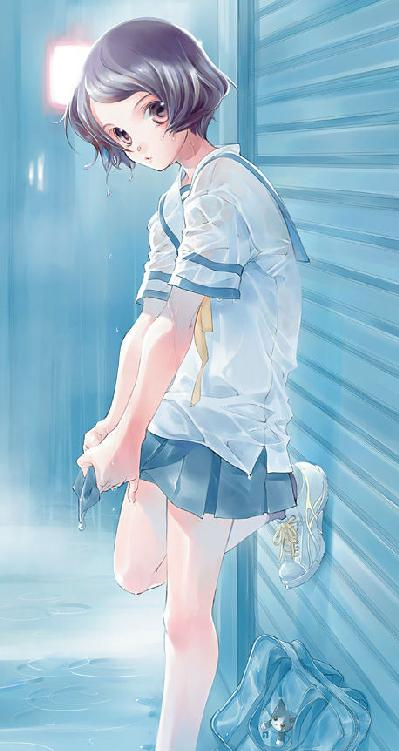

| サクラダリセット CAT,GHOST and REVOLUTION SUNDAY【期間限定 無料お試し版】<サクラダリセット> (角川スニーカー文庫) | |
| 河野 裕 | |
| (2010) | |


サクラダリセット
CAT,GHOST and REVOLUTION SUNDAY
河野 裕
角川スニーカー文庫
本作品の全部または一部を無断で複製、転載、配信、送信したり、ホームページ上に転載することを禁止します。また、本作品の内容を無断で改変、改ざん等を行うことも禁止します。
本作品購入時にご承諾いただいた規約により、有償・無償にかかわらず本作品を第三者に譲渡することはできません。
本作品を示すサムネイルなどのイメージ画像は、再ダウンロード時に予告なく変更される場合があります。
本作品は縦書きでレイアウトされています。
また、ご覧になるリーディングシステムにより、表示の差が認められることがあります。
口絵・本文イラスト／椎名優
口絵・本文デザイン／門松清香
伝言が好きなの、と、女の子は言った。
少し掠れた声だった。
もう何年も前の話だ。浅井ケイは、その時の何もかもを覚えていた。日付、時間、天気、彼女の服の色、指先の形、僅かに傾けた首の角度──
瞬きの回数だって思い出せるけれど、そんなことに特別な意味はない。
雨が降っている。
壁や、床や、天井に、くまなく霧吹きで水気を吹き付けたような校舎の中を、ケイは歩いていた。雨はあまり好きではない。特に今日みたいな、七月初めの蒸し暑い時期に降る雨は。ただ窓の外から聞こえるシンプルな雨音だけが、少し心地よかった。
放課後の廊下に人は少ない。足音が妙によく響いた。単純な音は意識を内側に向かわせる。──伝言が好きなの。
そうだ。あの時も雨が降っていた。雨音の奥でそっと囁くように、彼女は言った。幸せな言葉や些細な言葉を、人から人に、たくさん伝えたい。
当時のケイには、彼女の言いたいことが上手く理解できなかった。でも今なら少しだけわかるかもしれない。人に言葉を伝えるのは、きっと幸せなことだ。もしも伝えるべき言葉が、幸せなものや、些細なものであったなら。
ゆっくりと廊下を歩く。足音を一つずつ、丁寧に並べるように。
あの時ケイは、女の子に尋ねた。──もし伝える言葉が、悲しいものなら？
彼女は答えた。伝え方を工夫するわよ、と。
それが伝えるべきことなら、正しい方法で、正しい言葉を使って、正しく伝える。
そうできればいいな、とケイは思う。でも、例えば伝えるべき言葉が、自分自身にさえ意味のわからないものなら？ それについては、彼女に尋ねていなかった。尋ねることができないうちに、彼女は死んでしまった。
目的の人物は、職員室にいた。
癖の強い髪の毛と眠たそうな目。津島信太郎というのが、その教師の名前だった。ケイの担任ではない。でも彼には数学を習っていたし、所属する部活動の顧問でもある。あるいは担任よりも親しい教師かもしれない。
彼はこちらを見て、「よう」と手を挙げた。
歩み寄り、軽く挨拶を交わしてからケイは言った。
「伝言があります」
意味のわからない伝言が。
「へぇ、誰からだ？」
「明日の貴方からです」
津島は手元のコーヒーカップに口をつけ、顔をしかめた。
ケイは気にせず続ける。
「マクガフィンが盗まれる、と」
伝言はそれだけだった。
これで誰かが幸せになればいいけれど、可能性は低いように思う。
七月一五日（土曜日）──スタート地点
グッモーニング、ケイ！ 今回はお前から見れば昨日、七月一四日からお届けするぜ！ おいおいため息なんてつくんじゃねぇよ。確かにオレたち、青春ど真ん中の高校一年生にとっちゃあ、昨日なんてもう忘れちまうくらい昔のことかもしれない。でもオレから見れば今現在、大本命で進行中なんだ。
昨日のことについて、ちょっと思い出してほしい。そろそろ梅雨も明ける頃だってのに、どんより曇って雨が降ってて、かったるかった昨日についてだ。ケイ、そっちの天気はどうだい？ ああ、ちょっと待て、予言させてくれ。
天気は──快晴！
どうだ、大正解だろう？ お前はなぜわかったのかと首を捻っているかもしれない。でもなにも難しいことじゃないんだ。天気予報を調べた？ 違う違う、そうじゃない。もっと単純な、世の中の真理があるだろう。靴を蹴りあげたら表向きに落ちた？ あれはなかなか素敵な占いだ。どう考えたって、重心がとれてる通り、表に落ちる確率の方が高いんだからな。正月のおみくじみたいなもんだ。どんな占いだって、よりたくさん幸せな結果がでるようにバランスを調整するもんさ。でも、わざわざお気に入りのスニーカーを汚さなくたって、そっちの天気はわかってたんだぜ。
昨日のことは思い出したか？ ならもう気付いただろう。お前は一つの大事な約束をしたはずだ。そうっ！ オレから見れば明日、お前にとっては今現在の七月一五日土曜日に、可愛い女の子と一緒にお茶を飲もうってな。
なんとも羨ましい話じゃないか。世界中がお前を祝福している。何もかもが、上手くいくように出来ている。当然空だって晴れ渡るさ。お前が彼女と一つの傘で、肩を並べて歩きたいっていうんなら別だがね。
オレはお前がついうっかり寝過ごして、寝癖のついた髪型で慌てて家を飛び出したりしないように、こうやってモーニングコールを入れてるわけだ。
どうだい、これ以上ないってくらいにいい友達だろう？
さて、そんな訳だから、ケイ。そろそろ目を覚ましてもいいんじゃないか？
──という声が聞こえて、浅井ケイは目を覚ました。思いつく限りで、最悪の朝だった。
ケイは目覚まし時計が嫌いだ。一日の始まりは静かな方が好みだし、あの耳に障る音が騒ぎ立てるようにセットしたのは自分自身だ。八つ当たりの相手も見つからない。
でも、目覚まし時計にだって良い所はあるのだ。スイッチを切れば素直に鳴り止むし、そもそもセットしなければいきなり鳴り出すこともない。もし壊れてしまって、まともに操作できなくなったところで、思い切り殴ればそれでもわめき続けることはないだろう。
文明とはすべからくそうあるべきなのだ。ハンマーに屈しない技術なんて、人類にとっても脅威にしかならない。
ケイは騒音に耐えながら、ベッドの中で嘆息した。枕元の目覚まし時計はまだ沈黙を保っている。針は八時の少し手前を指していた。早朝というほどではないが、休日の朝にベッドから抜け出すには少し納得のいかない時間だ。
ケイを悩ませている騒音は、目覚まし時計よりももう少し悪質なものだった。スイッチなんてないし、殴ることもできない。自分でセットしたわけでもない。仮に耳栓をしたところで、聞こえなくなることもないだろう。
先ほどから聞き覚えのある声が騒ぎ続けている。部屋にはケイ一人しかいなかった。外から聞こえるわけでもないし、もちろんケイ自身が騒いでいるわけでもない。声はケイの頭の中に、直接響いていた。
ニュアンスの違いはあるけれど、声の言う通りケイは今日ある女性と会う約束をしている。とはいえ待ち合わせの時間は一〇時だ。もうあと一時間は眠れただろう。また布団の中に潜り込もうかとも思ったけれど、別の声が聞こえて思い留まった。
それじゃあオレたちのアイドル、春埼美空の登場だ！
「ええと。ケイ、起きてますか？ 明日は遅刻しないでくださいね？」
だってよ。彼女は少しでも長くお前と一緒に居たいって言ってんだ。その思いを叶えないわけにはいかないだろう？ だからオレもこうやって──
確かに遅刻は良くない。先週の日曜日、春埼との待ち合わせに遅刻したことを、ケイは少し気にしていた。
両手を引き上げるようにして背筋を伸ばしてから、ベッドを抜け出し携帯電話を手に取る。アドレス帳を呼び出して、中野智樹と登録してある番号に発信。
なんとなくコール音を数えて、一四回目に相手が出た。
「......なんだよ、朝っぱらから」
聞こえてきたのは、先ほどから頭の中で騒ぎ続けているものと同じ声だった。ただし、起きたばかりなのだろう、少し不機嫌そうだ。
「安眠妨害の仕返し」
それだけ答えて、ケイは電話を切った。冷蔵庫からペットボトルのウーロン茶を取り出し、一気に飲み干してからカーテンを開ける。
空は良く晴れていた。セミがジォジォと鳴いている。それに重なって、騒々しい智樹の声と、それを止めようとする春埼の声が聞こえる。
ケイは少し早めに家を出ようと決めた。
咲良田は日本の片隅にある街で、太平洋に面していて、なんとか市を名乗ってもいいくらいの数の人々が生活していて、そのおよそ半数が特殊な能力を持っている。能力は千差万別で、大抵は物理法則に反していて、一応公的には秘匿したいらしいけれど人数が人数だけに誰も知らない秘密という風にはならない。要するに咲良田は超能力者たちの街だということを、住民はみんな受け入れていた。
そんな事柄を春埼美空が思い出したのは、この街があまりに普通だったからだ。春埼は咲良田以外の街を知らない。だから相対的に他と比べてどうとはいえないけれど、少なくとも能力のことなんか簡単に忘れてしまうくらい、辺りの街並みは凡庸でありきたりな休日の雰囲気に包まれていた。
能力を持つ人々が咲良田に留まっているのには理由がある。とても単純な理由が。咲良田の外に出ると、誰も彼もが能力のことを忘れてしまうのだ。使えることを知らない能力なんて、存在しないのと変わらない。実際にこの街から外に引っ越す人もいるけれど、外で能力が使われたなんて話は聞かない。能力は、あくまで咲良田の中だけに留まっている。持ち出すことは誰にもできない。
能力の大半は下らないものだ。例えば中野智樹のように、話した言葉を別の誰かに、時間をずらして届けられるとか。でも中には危険なものもあるし、下らない能力も使いようによってはいくらでも悪用できる。悪用できる力はなんであれ、公的な機関が取り締まることになる。咲良田には管理局と呼ばれる組織があり、そこが主に咲良田に暮らす人々の特殊な能力を管理し、色々な問題を処理していた。
管理局は上手く機能していた。少なくとも、表面的には。どこからも苦情がこないわけじゃないけれど、人々が団結して抗議するような事態も起きていない。ニュースや新聞を賑わすようなことも特にない。公的機関としては、十分に優秀だろう。
そんなわけで、七月一五日午前九時三〇分の咲良田は平和だった。春埼はいつの間にか自身が鼻歌を歌っていたことに気付く。たぶん私は機嫌が良いのだろう、と思った。
土曜日の比較的早い時間だからだろう、大通りには人も車も少ない。空はよく晴れている。日の光は強いけれど、まだ地面が焼けていないからか、それほど熱気が強いわけでもない。気持ちの良い夏の日。
とはいえ不安なこともいくつかあった。例えば昨日、中野智樹に頼んでケイに伝言を送ってもらったけれど、やはり少しやりすぎだったように思う。ケイは怒っているだろうか。それはわからないけれど、少なくとも彼が怒りを表に出すことはないだろう。ひどい話だ。傍から見て変化がなければ、いつまでたっても彼は不機嫌かもしれないと考え続けることになる。
春埼はうっかり水たまりを踏んでしまわないように、ゆっくりと慎重に歩いた。待ち合わせの時間までは十分な余裕がある。でも周囲の店の半数ほどはまだシャッターを下ろしていて、寄り道しようという気にもならなかった。
目的の喫茶店の前で一度時間を確認してから、そっと店内に入る。扉を開ける時にいちいちベルが鳴ったりしない喫茶店。おそらくはそれが、ケイが好んでこの店を利用する理由の一つだろう。
店内に客の姿は少なかった。カウンターの隅で、新聞を読んでいる男がいる。そして四人掛けのテーブルに一人で座る青年。浅井ケイだ。モーニングセットのトーストに、バターを塗っている。
背後に忍び寄って、目隠ししてみようかと思った。なんだかいかにも休日の待ち合わせっぽくて楽しいような気がした。しかしそれを実行するよりも先に、ケイは顔を上げてこちらを見た。
少し残念だ。でも、顔をしかめるようなことでもない。春埼は彼に歩み寄って控え目に声をかける。
「おはようございます」
彼は軽くほほ笑んで、「おはよう」と返した。ノックしてから扉を開くような、定型として完成している一連の動作。
春埼は彼の、左隣の席に座った。それが春埼の定位置だった。
ケイはトーストを一口かじり、それを飲み込んでから口を開いた。
「晴れてよかった」
春埼はいつも眠そうなアルバイトの店員に、アイスコーヒーを注文してから答えた。
「本当ですか？」
素直に頷かないことに、何か理由があるわけでもない。強いていうなら彼の趣味に合わせているのだと思う。なるたけあっさりした口調も、短く切った髪も、Ｔシャツにジーンズパンツという服装も。
ケイは口の隅だけを歪める独特な笑みを浮かべる。
「本当に。智樹によると、どうやら世界は僕たちを祝福してくれているらしい」
ああ、確かに昨日、中野智樹はそんなことを言っていた。今朝ケイに伝わったはずのメッセージ。
「ごめんなさい。うるさかったでしょう？」
ケイは曖昧に首を傾げる。
「あれは嫌な能力だね。ちょっと対抗する手段が思いつかない。確か強度はＡランクでしょう？」
能力は様々な視点から評価される。強度は他の能力と影響しあった時の強さを表す評価方法だ。例えば一方が破壊する能力を、もう一方が守る能力を使用した場合、強度が強い方の能力が結果を表す。管理局はそうやって、多彩な能力を少しでも定義づけようとする。
Ａランクは実質的な最高評価だ。他のＡランクの能力に打ち勝つ能力を例外的にＳランクと設定することもあるけれど、そこに明確な基準はない。結局のところ相性の問題で、Ｓランクの能力だって、Ａランクの能力に敗れることがある。
「でも中野くんの能力は、ただ声を届けるだけだし。あんまり害はないですよね？」
「そうでもないよ。例えば五秒間の騒音なら、一時間で七二〇回分送信できる。それを五分おきに届くように設定すれば、相手は六〇時間も騒音に悩まされることになる。たぶんあまり健康によくない」
答えながら、ケイはトーストを口に運ぶ。その、盛り上がるほどたっぷりとバターを塗ったトーストも、あまり健康に良さそうではなかった。指摘したところで彼が改めるとも思えないから、気にしないことにするけれど。
「あの能力って、そんなに繰り返し使えるんですか？」
能力には大抵の場合、何かしらの制限がある。使用回数や、使用できる状況、あるいはまったく別の何か。なんの制限もない能力というのは、少なくとも春埼は聞いたことがなかった。中野智樹の能力にだって、何か制限があるはずだ。
「わからないけどね。でも、そんなことができる可能性はある。なるたけ智樹を怒らせたくはないよ」
言って、ケイは一口コーヒーを飲んだ。それでも私たちの能力ならいくらでも対抗できるはずだ──と、反論したかったが、小さく頷くだけに留める。彼の答えはなんとなく予想がついたし、あまり楽しい会話になりそうもない。
春埼は代わりの話題を探した。とびきり下らないものを。
「そういえば、猫グッズが増えたんです。猫形の風鈴」
春埼は猫に関連する小物を集めていた。身につけているものは、携帯電話につけた黒猫のキーホルダーだけだったけれど。押入れの中はコレクションでいっぱいだ。猫グッズ収集の難点は、あまりに簡単に商品が見つかることにある。
「風鈴か。そういえばもう何年も見てないような気がする」
ケイは少しだけ目を閉じて、すぐに開いた。
「うん。最後に見たのは三年前だね。ちょっと懐かしい」
「じゃあ、貸してあげましょうか？ 猫形じゃないのも持ってますよ」
「どうだろ。風鈴の音ってさ、たまに思いがけなく聞くからいいんじゃない？ 虹を見つけるみたいに」
「でも、いつでも虹が見られる道具があったら素敵じゃないですか？ そういうのがある遊園地とか、ちょっと行ってみたいです」
「んー。やっぱり決まった場所にあるべきじゃないと思うな。どこかで、誰にも気付かれずにひっそりとあって、それがたまにちょっとだけ視界に入るからいい、みたいな」
よくわからないけれど、そんなものかもしれない。春埼は運ばれてきたアイスコーヒーを受け取り、ミルクをたっぷり入れた。シロップは使わない。
「でも、誰にも気付かれないところで鳴り続ける風鈴は、ちょっと悲しいですね」
誰にも見られないのに時を刻み続ける時計や、注目されないところで回り続ける看板なんかも。評価を得られない仕事は少しだけ悲しい。
「考え方次第だけどね。風鈴は一人で、自分の音に酔いしれてるのかもしれない」
ケイは笑ってそう答えて、コーヒーカップを手に取った。
扉が開く音が聞こえて、ケイはまず店内の時計を確認した。九時五七分。ほぼ約束の時間通りだった。
立ち上がり、入口の方を見る。隣で春埼も席を立つ。扉をくぐって現れたのは、眼鏡をかけた女の子だった。
彼女は真剣な表情で軽く店内を見回してから、こちらに向かって歩き出す。
「村瀬さん、ですか？」
尋ねると、女の子は少しだけ眉をひそめて頷いた。何かを警戒するような雰囲気。ケイは意識して柔らかくほほ笑んだ。
「初めまして、浅井ケイです。彼女は、春埼美空」
それにあわせて、女性──村瀬陽香も笑おうとしたようだった。やはり表情は硬かったけれど、少しだけ頰が持ち上がる。
村瀬は一呼吸よりも少し長い時間、こちらの顔を眺めていた。眼鏡の奥から、睨みつけるような強い眼差しで。ずいぶん真っ直ぐに前を見る女性だ。
彼女は意図的に抑えつけたような声で言う。
「村瀬陽香です。津島先生から紹介を受けてきました」
津島とは、ケイの通う学校──芦原橋高校の教師だった。そして同時に、管理局にも所属している。大抵の学校にはそういう教師が一人はいる。保健室に先生がいるように。学校でだって、能力に関する問題が起こらないわけではないのだ。
ケイは笑みを崩さないように気をつけながら、そっと頷く。正直なところ、彼女については名前と年齢くらいしか知らなかった。確かケイたちよりも一つ年上。それを考えれば高校生である確率が高いけれど、どの学校に通っているのかも知らない。
村瀬は視線を下げ、小さな声で言う。
「ごめんなさい、こういうのは慣れてなくって」
ケイは笑って答える。
「実は、僕たちもなんです」
津島以外の人から仕事の内容を聞くことは、あまりない。
とりあえず座りましょう、とケイは言った。なんとなく座ったまま挨拶するのも態度が悪いかと立ち上がってみたけれど、席に戻るタイミングがわからなくて困っていたのだ。
店員が注文を取りに来て、村瀬は「コーヒー」とだけ答えた。ついでにケイは、アイスクリームを注文する。甘い物は好きだった。
店員が立ち去ってから、村瀬は小さな声で言った。
「浅井さんは、高校生ですよね？」
「ええ。一年生です」
「どうして管理局の仕事なんかしてるんですか？」
尋ねられ、ケイは曖昧に笑った。
「そういうクラブに入っているからです」
芦原橋高校奉仕クラブ。奉仕クラブと呼ばれる部活動は、咲良田内の全ての学校にある。そして管理局員を兼ねる教師が顧問につく。
管理局は特殊な能力の持ち主を監視する。いや、特殊ではない能力なんてありはしないけれど。中でも特別に危険だとみなされた能力は、管理局からの強い監視を受ける。
奉仕クラブに入るのは、その監視を少しだけ和らげる方法の一つだった。管理局は顧問の教師を通じて能力が必要となる仕事を振り、仕事の推移についてきちんとした報告を求める。ケイと春埼は自分たちの能力について、仕事のたびに丁寧な報告をする代わりに、通常管理される上で必要な手順のいくつかを省き、ある程度の自由を得る。
村瀬陽香も、それくらいの事情は把握しているだろう。高校生が管理局の手伝いをする理由なんて、あまりたくさんあるわけではない。
彼女はなんだか、言葉を探しているような様子だった。ケイは少し時間をおいてから、ゆっくりと尋ねた。
「ところで、村瀬さん。僕たちは何をすればいいんですか？」
「......なにも連絡がいってないの？」
少し不機嫌そうな口調。それから慌てて、「いってないんですか？」と言い直す。おそらく敬語で喋ることにあまり慣れていないのだろう。
ケイは気にせず話を続けた。
「迷子になった猫の捜索、と伺っています。でも、それならもっと適任がいるはずですよ」
「二人は、捜し物のエキスパートだと聞きましたが？」
つい最近無くしたものに限れば、そうかもしれない。
「猫がいなくなったのはいつですか？」
「一週間ほど前です」
それでは遅すぎる。いなくなったのが三日前の正午以降なら、なんの問題もなかったのに。
しかし、村瀬は少しうなだれて言った。
「でもお願いしたいのは猫の捜索じゃないんです。猫は昨日の朝に見つかりました。......近所の道端で、私が見つけました」
猫は車にひかれ、倒れていたという。
ケイはなんとなく依頼の内容がわかった。どうして津島が、それを「猫の捜索」と表現したのかも。
村瀬は少し視線を上げ、こちらを見た。相変わらず睨みつけるような目だった。まっすぐに前を見る目。でも、その瞳にはある種の脆さが潜んでいるような気がした。それは重要なことかもしれないし、あるいはただの勘違いかもしれない。
彼女は言った。
「依頼の内容は、死んだ猫を生き返らせることです」
それは、よほど都合のいい能力でもなければ難しいだろう。正直なところ、ケイにはそれを依頼通りにこなすことはできない。
とはいえ、まったくやりようがない訳でもなかった。
「わかりました。......ところで、村瀬さん。貴女はどうしてその猫を助けたいんですか？」
尋ねると、彼女は一層強くこちらを睨んだ。
「飼っていた猫を取り戻したいだけです。だめですか？」
「いえ。もちろんそれで十分です」
初めから、津島を通している依頼を拒否するつもりなんてない。
「貴女の猫を、健康な状態にすればいいんですね？」
「はい」
隣の春埼に、少しだけ視線をやる。彼女は話になんの興味も持っていない様子で、携帯電話についた黒猫のキーホルダーをいじっていた。いつものことだ。こういったやり取りは全て、ケイが担当することになる。
思わずため息をつきそうになるけれど、それはなんとか押しとどめる。ケイは意識的に真剣な表情を作り、尋ねた。
「貴女はその猫のために、世界を三日間殺す覚悟がありますか？」
この質問に意味はない。ケイの自己満足でしかない。どうせ彼女は、すぐにこんな質問なんて忘れてしまう。
村瀬は眉をひそめる。
「......どういう意味ですか？」
「もしかしたら今日と昨日と一昨日が、なかったことになるかもしれない。世界中全ての人に、もう一度三日前からやり直させる覚悟があるか、ということです」
村瀬はしばらく何かを考えている様子だった。ケイは店員からアイスクリームを受け取って、スプーンですくい一口食べた。
「あります」
短く、村瀬は答えた。
ケイはさらにもう一口アイスを食べる。
「では、その猫について教えてください」
猫は元々野良だったという。半年ほど前に、村瀬陽香が拾った。当時は子猫だったけれど、すぐに大きくなった。雑種でオス。名前はミケ。
外見に関しては、村瀬から写真を貰ったので完全に把握できた。携帯電話の機能を使って撮った写真だった。メールアドレスを交換して、それから送信してもらう。汚れたような灰色の毛と曲がったしっぽ、青い瞳を持った猫が、道路脇で餌を食べている。
その猫は昨日の朝、近所の商店街で車にひかれて死んでいた。パン屋の前だった。
説明を一通り終わらせると、村瀬はすぐに席を立ち喫茶店を後にした。喫茶店にはケイと春埼だけが残った。
「どうするんですか？」
春埼に尋ねられ、ケイは軽く笑って答えた。
「もちろん、猫を助けるよ。正式な依頼だし、不幸になる人は一人もいない。拒否する理由は一つもない」
猫は生き返り、村瀬は幸福になり、奉仕クラブの実績が上がり、上手くやれば部費が増える。奉仕クラブにおける部費というのは、言ってみればアルバイト料のようなものだった。領収書を切ることさえ忘れなければ、ある程度は自由に使うことができる。
春埼は音をたててアイスコーヒーを飲みきり、それから言った。
「でもこの依頼、少しおかしくないですか？」
それはケイも同意見だった。
「どこが変だと思う？」
「まず依頼の目的。その猫が特別な能力で死んだわけじゃなければ、たぶん管理局は関わりませんよね？」
「その通りだね」
管理局が動くのは、能力によって問題が起こった場合に限られる。こういった種類の問題にまでいちいち手を出していては、収拾がつかなくなってしまう。
「それに、事故から依頼までが速すぎます」
「うん。僕もそう思う」
津島から村瀬に会うよう指示を受けたのは、昨日の昼休みだった。話によると、事故に遭った猫を見つけたのが昨日の朝。ほんの数時間で管理局に連絡を取り、管理局が許可を下ろし、津島に指示がいったことになる。ちょっとありえない速さだった。
「それで、どうするんですか？」
春埼はもう一度尋ねた。
「もちろん猫を助ける」
ケイはもう一度答えた。正式な依頼だし──とは続けない。もしかしたらこれは正式な依頼ではないのかもしれない。そもそも村瀬は管理局なんかに連絡を取らず、単純に津島に相談したのかもしれない。彼女が芦原橋高校の生徒である可能性も十分に考えられるのだ。学年の違う生徒の名前など把握していない。
津島がプライベートで受けた依頼だと考えると、春埼が指摘した部分の違和感はなくなる。そもそも管理局は関わっていないし、時間だって妥当なところだ。
正直なところ、他に気になる部分がないでもない。でも、何もかもが全部クリーンに見通せる状況なんてそうそうあるものでもない。それに、猫を助けるという依頼にはとても好感が持てる。
春埼は軽く頷いた。特に感情を感じさせない動作だった。
それから、
「じゃあ今夜、お祭りにいきましょう」
と言った。唐突に話題を変えるのは以前のケイの癖で、今は春埼に受け継がれている。
「お祭り？」
そういえばそんな時期か。七月半ばに祭りが開催されて、それから夏休みが始まる。咲良田の夏はそういう風に進行する。
「ま、今夜なら問題ないかな」
たぶん。今回の依頼に関しては、もう片が付いているはずだ。
春埼はにっこりと笑う。
「それなら手早く猫を助けましょう」
「うん。まずは情報が欲しいね」
死んでしまった猫を生き返らせることは無理でも、春埼の能力を使えば、事故に遭わないようにならできるはずだった。そのためには、事故に遭った正確な時間や、その前にいた場所なんかを知りたい。
「情報なら索引さん？」
「いや、今回は非通知くんかな。索引さんを頼ると、必要以上に話が大ごとになっちゃうから」
アイスクリームの最後の一欠片を口に含んで、ケイは席を立った。
※
喫茶店を出てすぐ、ケイと春埼は二手に分かれた。春埼には、事故現場の正面にあるパン屋に向かってもらった。彼女は知らない人間と話すことを嫌うけれど、特別に人見知りというわけでもない。問題はないだろう。
その間にケイはまず、商店街の片隅にある公衆電話にコインを投入した。それから記憶通りに番号を押す。
声はすぐに聞こえてきた。
「お掛けになった電話番号は、現在使われておりません。番号をお確かめになって──」
受話器を置いて、転げ出てきたコインを再び投入する。そして同じ番号にコールする。
「お掛けになった電話番号は、現在使われておりません」
何度も何度も、繰り返す。
「お掛けになった電話番号は──」「われておりません。番号をお確かめに──」「け直し下さい。お掛けに──」「番号は、現在使われて──」「をお確かめになって、お掛け直し下さい」
女性の静かで無機質な声が、呆れたように繰り返す。
ケイは機械的に同じ手順を繰り返す。やがて、
「......お掛けになった、電話番号は」
受話器の向こうの声が変わった。いや、声は同じ無機質なものだ。でも息を継ぐタイミングが変化する。
「現在使われて──」
ケイは気にせずに言う。
「浅井です。聞きたいことがあります」
「番号をお確かめになって──」という声に、短く電子音が重なる。ピ、ポ、パ。
そして、
「お掛け直しくだ──久し振りだね、ケイ」
受話器から聞こえる声が反応した。声の質は変わらず、無機質な女性のままで。
「......もうこのシステムやめませんか？」
というか、その声で喋るのをやめてほしい。最近ようやく慣れてきたけれど、初めは妙に気持ち悪かった。
「嫌だよ。声紋とかでボクの正体がバレたらどうするのさ」
「いいじゃないですか。友達ができるかもしれませんよ」
「うあ、ボクってトモダチいない奴だって思われてるんだ。ショックだなぁ」
正直なところ、非通知くんには友達どころかまともな顔見知りもいないだろうと思っていた。まぁたまに電話でやりとりをするだけの相手だから、友達が百人いても不思議ではないけれど。
「いるんですか？」
「いるよ。君と津島のことだけど」
「僕はともかく、津島先生を含めないでください」
「......それ本音？」
「いえ。本音は逆さまですが」
「ひどいなぁ。ボクはこんなにフレンドリーなのに」
その声で軽口を叩かれても気持ち悪いだけだ。
電話の向こうにいるのが何者なのか、ケイは知らない。『非通知くん』という通称も、おそらく津島が勝手に使い始めたものだろう。わかっているのは、彼（もしくは彼女）がありとあらゆる情報をかき集めていて、上手くやればそれを譲ってもらえることだけだ。
「で、今日は猫捜しだっけ？」
「ええ。そうです」
おそらく津島から聞いていたのだろう。彼はあまり意味のない根回しをするのが好きだった。何か黒幕的な存在に憧れているのかもしれない。
「猫に関する専門家を紹介しよう。代価は情報ならそこそこのを二つ、物なら真っ白なシーツとＴシャツを三枚ずつ」
「どちらでもいいので、津島先生に請求してください」
「それは拒否しろって津島が言ってたけど？」
「......じゃあシーツとＴシャツの方で」
後でこちらから津島に請求しよう。
「了解。受け取った」
これで銀行の口座から、シーツとＴシャツの代金が引き落とされることになる。
「猫に関する専門家っていうのは？」
「野ノ尾盛夏、高校一年生。君と同じ歳だけど、学校は違うね。能力は情報の共有。ちょっとだけ君に似た能力かな？ ただし、対象は猫に限られる。たぶん咲良田で最も猫に詳しくて、最も猫のことを愛している」
なるほど、都合のいい人だ。
「どこに行けば会えるんですか？」
「たぶん休日なら、花見崎の神社じゃないかな？ よく猫と昼寝してる。ちなみに大宮高校に通っていて、放課後も基本的に神社で過ごす。住所まで喋ると、さすがに法に触れるよね？」
それは知っているだけで問題のような気もするけれど。学校までわかったなら、会うことは簡単だろう。
「わかりました。ありがとうございます」
「ん。ところで、ケイ。一つ聞きたいことがあるんだけど」
「なんです？」
「君、マクガフィンって知ってる？」
マクガフィン。聞いたことはある。二週間ほど前、津島から伝言を依頼されていた。「マクガフィンが盗まれる」と。
「それは僕よりも津島先生に聞いた方がいいと思いますが」
「そうできないから困ってる。実はさ、これに関しては、君からの依頼の代金にもしちゃダメだって言われちゃって。ちょっと気になってるんだよね」
「貴方は知らないんですか？」
「辞書的な意味と、都市伝説的な話ならいくつか。でも詳細は不明。まぁいいや」
じゃあね、と言って、通信が切れた。受話器を置くと、投入していたコインが転がり落ちてくる。非通知くんが着信課金に登録しているわけではないのなら、違法行為になるだろう。
なんとなく気まずさを感じ、ケイはそのコインを返金口に残したままにして、パン屋の方に向かった。言い訳は大切だと思う。
春埼はもう聞き込みを終えていた。おそらく付き合いで買ったのだろう、パン屋の紙袋を抱えている。中身は全てクリームパンらしい。
「とりあえず、どうぞ」
彼女が差し出したクリームパンを受け取り、かみつく。やたらと重量のあるクリームが入っていた。甘いものは好きだから文句もないけれど。
飲み込んでから、口を開く。
「で、どうだった？」
「店員は見ていないようです。でも、車のブレーキ音を聞いたような気がする、と。詳しい時間はわからないけれど、おそらく八時から九時の間だと言っていました」
なるほど、とケイは頷く。
村瀬が猫を見つけたのは、午前八時を少し回った頃だと言っていた。彼女がひかれてすぐの猫を見つけたのだとすれば、時間は合う。
「これから、どうしますか？」
「非通知くんに猫好きの女の子について聞いてきた。なんだか便利な能力を持っているみたいだよ」
ケイは野ノ尾盛夏について説明し、それから携帯電話の時計を見た。一一時二〇分を少し回ったあたり。
あまり時間はなかったけれど、とりあえず野ノ尾を探してみることに決める。
道すがら、ケイは非通知くんとのやりとりについて説明した。一通り話を聞き終えてから、春埼は女性にしては低い、少しだけ掠れた声で言った。
「マクガフィンって、なんです？」
「さぁ、なんだろうね」
マクガフィン。たぶん猫捜しには関係ないと思うけれど。
「ケイも知らないんですか？」
「んー。なんていうか、それはわからないものなんだよ」
春埼は首を傾げる。
ケイは、例えば、と前置きしてから言った。
「マクガフィンは、スコットランドでライオンを捕まえる為の道具だ」
「スコットランド？」
唐突な話ですね、と春埼は言った。
ケイは構わずに続ける。
「でも、スコットランドにライオンはいないんだよ」
「......何かのクイズですか？」
「そんなに真っ当なもんじゃないよ。いってみれば、マクガフィンは問題を発生させるための装置なんだ。それ以外の役割はない」
春埼は「よくわかりません」と言った。確かに説明の順序が悪かった。
「マクガフィンっていうのは、映画や演劇なんかで使われる用語なんだよ。主人公が物語に関係するきっかけとなるアイテム──押しつけられた謎のアタッシェケースだとか、意味のわからない手紙だとか、そんなものがマクガフィンって呼ばれる」
「どうしてそれが、スコットランドのライオン捕獲器になるんです？」
「元になってる話があるんだよ。ヒッチコックが作った」
あの棚の上の荷物はなんだ？
マクガフィンさ。
マクガフィン？
スコットランドでライオンを捕まえる道具だよ。
スコットランドに、ライオンはいないだろ。
なら、あれはマクガフィンじゃないな。
「意味がわからない。そもそも、そんな意味のわからないものなんだ、マクガフィンっていうのは」
マクガフィンとは、いってみれば代名詞だ。それはただマクガフィンと呼ばれているだけで、本来は何か別の、アタッシェケースなんかの実体があるべき言葉。
マクガフィンが盗まれる。意味がわからない。
「きっとマクガフィンという言葉には、僕が知らない意味があるんだと思う」
神社に続く通りには、もう屋台が並んでいた。三割ほどはすでに店を開き、残りは準備中といった様子。さすがに盛り上がるのは夕方から夜にかけてだろうから、まだ人だかりができているわけではないけれど、普段よりもずっと騒がしい。少なくとも、猫との昼寝に適した環境ではないだろう。
「お祭りにくるのは夜の予定だったのに」
隣で春埼がぼやく。
「夜にも来ようよ。あ、りんごあめ買ってあげようか？」
「そういうのは夜がいいんですよ」
「いつ食べてもりんごあめの味は変わらないよ」
「そんなことないですよ。りんごあめは夜、お祭りの雰囲気で食べるからおいしいの。昼間からわざわざ食べるものじゃないです」
なるほど、祭りは雰囲気を楽しむものだという考え方には賛成できる。ケイもベビーカステラは夜の楽しみにとっておくことに決めた。
軽く頷くと、春埼は続けた。
「という風なことを、去年ケイが言っていました」
うん、確かに。そんな記憶があった。
「それでも買ってくれるというなら、私はりんごあめを頂きますが？」
「......今夜にしよっか。あんまり時間もないし」
もっとも、今夜というのが体感的にどれだけ先になるのかはわからないが。
ケイは両側の屋台をざっと眺めながら通りを進み、神社へ続く石段を登る。ここにくるのはずいぶん久しぶりだった。たぶん一年か二年。実は正確な数字を思い出していたけれど、そんなものに意味はない。
境内は、石段の下に比べればまだ落ち着いていた。屋台を覗く客はいても、参拝に訪れる時間ではないのだろう。それでも祭りの準備のためか、記憶の中の神社よりずっと活気がある。もちろん猫と昼寝する女の子なんて見つからない。
「やっぱり来てないんじゃないですか？」
「そうかもしれない」
「時間、もうあんまりないですよ」
「うん」
春埼の言葉に曖昧に頷きながら、辺りを見渡す。と、三毛猫がいた。
そちらに歩み寄る。猫は留まるか逃げ出すべきか迷っている様子だった。猫が決断するよりも先に、声をかける。
「すみません。野ノ尾さんに会いたいんですが」
まったく無意味な行為かもしれないけれど。非通知くんは、野ノ尾の能力が猫と情報を共有することだと言っていた。もしかしたらこの猫に呼びかけることで、言葉が野ノ尾に伝わるかもしれない。
しかし猫は、興味もなさそうに歩きだした。ケイはその背中に、さらに呼びかける。
「昨日、事故に遭った猫について話を聞きたいんです。もしかしたらその猫を助けることができるかもしれない」
三毛猫は振り向き、しばらくこちらを見ていた。意思の読めない瞳。なんだか訳もなく断罪されているような気分になる。
「お願いします」
頭を下げると、三毛猫はこちらに向かって歩き出した。そして前足で二回、ちょんちょんとズボンの裾を引っ搔くと、そのまま背を向け社殿の方へ歩いていく。
「ついてこいって意味かな？」
「わかりません。でも、そういった様子ではありますね」
三毛猫はこちらを確認もせずに、ずんずんと歩く。仕方がないのでケイたちも足早に後を追う。携帯電話の時計を見た。一二時四六分。ぎりぎりだ。
猫は社殿の裏に回る。裏は山に面している。そこには朽ちた墓石みたいな、小さくて物静かな階段があった。ずいぶん古いものなのだろう。石は陽に焼けて白く、角は自然に削れて丸くなっている。
猫は石段を登っていく。少しずつ時間が経過していく。セミが鳴き、木漏れ日が揺れる。石段はいつの間にかなくなり、土の坂道になる。足の裏に瑞々しい草を踏みしめる感触。
まっすぐに進むと、小さな社があった。辺りを無数の猫が取り囲んでいる。
その中心──社についた数段の階段に、手足の長い少女がいた。目を閉じている。肌が白い。まぶたも白い。
「野ノ尾さん？」
声をかけると、彼女はゆっくりと目を開いた。そして、
「おはよう」
と言った。彼女と目が合う。周囲の猫たちが、一斉にこちらを見たのがわかる。
「昨日、誰かが事故に遭ったって？」
「ええ。灰色で青い瞳の、しっぽの先が曲がった猫です。村瀬という人に飼われていました」
野ノ尾はもう一度目を閉じた。ケイは時間を確認した。時計から目を離すと、彼女は再びこちらを見ていた。
「......いつから？」
「え？」
「ムラセという人は、いつからその猫を飼っていた？」
「半年ほど前です」
答えると、野ノ尾は興味を失ったように視線を離した。
「咲良田にそんな猫はいない」
そんな馬鹿な。
「......いくらなんでも、この街中の猫を全て把握しているわけではないでしょう？」
「どうしてそう思う？」
「情報の処理が追いつかない」
世界中で新しい本が書き続けられている限り、世界中の本を読み切ることができないように。生まれ続ける猫を全て把握することなんて不可能だ。今、咲良田にどれだけの猫がいるのか、その数を正確に知ることもできないだろう。
しかし野ノ尾はこともなげに答える。
「君がそう考えるのは、猫の時間を知らないからだ。人間の時間で不可能なことでも、猫の時間なら可能になる。......もちろん、その逆もたくさんあるけれど」
猫の時間？ 意味がわからない。でも意味のわからない能力なんて、この街にはいくらでもある。
今はこちらの主張を正確に伝えるべきだろう。
「これを見てください。──この猫が昨日の朝、パン屋の前でひかれていました」
ケイは村瀬からもらった携帯の写真を見せる。野ノ尾は、不本意そうではあったけれど、それでも一応は携帯に目を向けた。
「......ふむ。確かに最近、彼の姿は見ていないが」
「でしょう？ なら、その間に何か起こったのかもしれない」
「しかし、彼が事故に遭っていたとして、どうして君にそれを助けることができる？」
「そういうことができる能力を持ってるんです。彼女が」
答えて、春埼の方を見る。彼女は会話には興味がなさそうに、まだ残っていたクリームパンを取り出していた。
「......食べますか？」
春埼はクリームパンを野ノ尾に差し出す。彼女は首を振った。
「いや、いい。次にくることがあれば、駅前の三月堂という店のシュークリームを持ってきてくれ」
そんな話をしている場合ではない。時計は一二時五五分を指していた。
「とにかく。その猫について教えてほしいんです。三日前どこにいたのかわかると理想的なんですが」
「知らないよ。......まぁ、調べることはできるかもしれないが」
「なら、お願いします。三月堂は僕も知ってます。ちゃんとシュークリームを買ってきますから」
野ノ尾は少しだけ眉をひそめた。あるいは困った表情を作ったのかもしれない。
「しかし、悩んでるんだ。ストーカーの女をつれた男を信用していいものか」
「ストーカー？」
全く心当たりがない。無理に想像力を働かせるなら、春埼のことだろうか。
「いえ、私は決してそういう者では」
春埼もその言葉が自身を指している可能性に思い当たったらしい。何か言い訳していたが、野ノ尾はそんな言葉など聞いていない様子だった。
「いや、そうか。......ムラセとは、眼鏡をかけた髪の長い女か？」
「そうです。知ってるんですか？」
「ああ、だいたいわかった。ちょっと待て」
野ノ尾は再び目を閉じた。体重を階段に預ける。ケイは時計を見つめた。ゆっくり時間が進んでいく。一分ほどたった頃に、彼女は目を開いた。
そして、言う。
「寝つけん」
「......眠らないと、能力が使えないんですか？」
なんの制限もない能力というのもまずないけれど。
野ノ尾はぽりぽりと頭を搔いた。
「別にそういうわけでもないんだが。とにかく自分を忘れるくらい、何にも考えていない状態になる必要がある。まぁ眠るのが一番手っ取り早いな」
ふむ。微妙に使いにくい能力だ。発動までに時間がかかるし、物理的な妨害に弱い。
「だいたい君が悪いんだぞ？ 私が気持ちよく寝ていたのに、起こしたりするから」
「そんなこと言われても。起こさないと話も聞けませんよ」
「夢の中に出てこいよ。なぜその程度のことができないんだ」
「......どうしてできると思うんです？」
「しらん。八つ当たりに理由を求めるな」
そんなことを言われても困るけれど。今の時点では、それほど急を要する話ではない。それよりも確認しておきたいことがあった。
「能力さえ使えれば、猫がどこにいたのかわかるんですね？」
「実は、死んでいたらわからないかもしれない」
それは、あまり重要ではない。
「生きていたら？ どちらかというと、現在地の方が知りたいんですが」
「わかるはずだよ。......生きてるのか？」
「いえ」
とりあえず、聞きたいことは聞けた。状況はそれほど悪くない。必要な能力は揃ったはずだ。何か今見えていない要素が現れない限りは。
野ノ尾はもう一度、目を閉じる。
「とりあえず、もう一度眠る努力をしてみよう。子守唄を歌ってくれ」
「春埼」
野ノ尾の話を聞き流し、後ろに呼びかける。
「え、私が歌うんですか？」
「なんだったか。らー、らーら、ら、らーら......みたいな歌がいいんだが」
野ノ尾は平然と言う。春埼は軽く首を傾げた。
「えっと。ケイ、歌った方がいいんですか？」
「歌わなくていいよ」
時計を見る。一二時五八分四七秒。まぁ、これ以上冒険する必要もないだろう。
「リセットだ」
たった一言。
それだけで、世界は、三日分死ぬ。
１ 七月一二日（水曜日）──三日前
「七月一二日、一二時五九分、一二秒です」
と、春埼が言った。彼女は携帯電話を耳に当てている。
ケイの隣には木箱があった。きっと何かの標本だと思う。さらに隣には天球儀、丸まった模造紙、そして中身の見当もつかない段ボール箱がいくつか。
そこは校舎の末端だった。立ち入り禁止の屋上へと続く階段。物置として使われていて、近づく人はあまりいない。ここで昼食をとるのが、ケイたちの日課になっていた。
ケイは目を閉じ、ほんの五分ほど前を思い出す。
五分前。その時、ケイは春埼と共に食事をしていたはずだ。あるいは食後に、水筒のお茶を飲みながら下らない話をしていたか。
しかし思い出した記憶は、そのどちらでもなかった。ケイは山の中にいた。古びた社の前で、肌の白い少女と会話している。見たこともない少女──違う、彼女は野ノ尾盛夏だ。
とたんに様々な情報が、時系列を無視して、頭の中にあふれ出す。咳き込む前に息を止めるくらいの僅かな時間に、ケイはこの先およそ七二時間分の──七月一五日土曜日、一二時五八分四七秒までの出来事を思い出した。
軽い立ちくらみのような感覚に襲われる。少しふらついてから踏みとどまり、目を開けると春埼がいた。ケイは意識してほほ笑む。
「リセットしたみたいだね。どうやら僕たちは、猫を捜さないといけないらしい」
時間をリセットできる、というのが、春埼美空の能力だった。より正確には、世界の状態を過去の、特定の瞬間に復元できる。
その効果は絶大だった。時計の針も、太陽の位置も、人の記憶も。世界中のおよそ全てといっていい事柄がある瞬間に立ち戻る。例えば七月一四日に死んでしまった猫だって、七月一二日が復元された今なら生きている。
春埼美空の能力は、擬似的に時間を巻き戻す。世界中を巻き込む、他に例をみないほどに広範囲の能力だった。
ただし彼女の能力にはいくつもの制限がある。
例えば「セーブ」した瞬間にしか状況を戻せない。改めてセーブし直すと、以前セーブした時間には戻れない。それに、セーブしてから七二時間が経過するとその効果は失われる。今回の場合は、七月一五日、一二時五九分一二秒を少しでも回っていたなら、リセットすることはできなかった。
面倒な条件は、他にもいくつかあった。例えば、特定の人物──今の時点ではケイだけだが──に指示されなければ能力が使えない。一度「リセット」を行ってしまったら、それから二四時間は「セーブ」ができない、など。
そしてリセットの効果は、春埼自身にも適用される。つまりは彼女の記憶もセーブした時点のものに書き換えられる。自身が能力を使ったことも覚えていない。規格外に強力な反面、なんとも不便な能力だ。
しかしケイの能力と組み合わせることで、彼女の能力は非常に活用しやすくなる。ケイは、過去の自分の五感、意識を再現できる。一度見聞きしたこと、考えたことを、いつだって確実に思い出すことができる。
ただ人よりも記憶力がいいといった程度の効果しかないけれど、この能力は極めて強度が高かった。つまりは春埼のリセットを無視して、復元される前の世界を思い出すことができる。いってみれば、記憶を持ったまま三日前に戻ることができる。
今日──七月一二日。春埼がセーブしていたのは偶然だ。セーブしてから七二時間の制限時間が切れるたびに、春埼は新たにセーブし直す。ケイが指示してそうさせている。でもそれが今回のように最良のタイミングで作用するのは、やはり幸運なことだ。
どんな事態でもリセットすればやり直せるという感覚は、簡単には手放せない安心感があった。事故はいつだって発生し得る。それに備えることができるのに、備えないのは愚かだと思う。あるいはただ能力に依存しているだけなのかもしれないけれど。ともかくケイは、できる限り有効的に春埼の能力を使えるように指示を出していた。
むしろ春埼の方からそれを言い出さないことの方が異常なのだ。彼女にはそういった、ある種の感覚が欠落しているところがあった。例えば自分一人のために発生する感情が、極めて薄い。彼女が何かを感じるのは、誰か特定の人物が関連した場合だけだ。そしてその「人物」の大半を自分自身が占めていることを、ケイは自覚していた。
「どうしてリセットしたんですか？」
あくまで機械的に、まるで他人事のように、春埼は問う。彼女ほど自身の能力に依存していない能力者も珍しい。
「土曜日に僕たちは、津島先生の指示で村瀬陽香という人に会うことになる」
リセットを行った場合、その間に起こったことに関しては決して噓をつかないというのが、二人の間の約束だった。今までケイは、この約束を破ったことがない。リセットで知った内容について噓をつくというのは、あまりに効果的すぎて、簡単に使っていい方法ではないように思う。
一通り説明を終えると、春埼はこくりと頷いた。
「つまりこれから金曜日の朝になるまでに、その猫を捕まえればいいんですね？」
「うん。その通り」
「でも、その、野ノ尾さん？ 彼女に会えば、簡単ですよね」
「たぶんね」
野ノ尾は猫の現在地がわかると言った。彼女に協力してもらえれば、それだけで問題は解決するはずだ。
「放課後になったら、神社に向かおう」
「わかりました」
春埼は頷いた。
会話しながら、ケイはつい、額を手で押さえた。三日分の記憶をまとめて得るのは、あまり真っ当な行為ではない。頭の中が唐突に重くなったような気がする。
「大丈夫ですか？」
春埼はこちらの顔を覗き込むように言う。そこにはおそらく、母親が子供に向けるような、素直な感情があった。
「うん、ちょっと眠たいだけだよ」
ケイは一度大きなあくびをしてから、教室に戻ろうか、と続けた。
春埼美空の席は、ケイの左斜め後ろにある。左手で頰杖をつくと、自然とケイの姿が目に入る位置関係。
昼休みの残り時間はあと一〇分くらいだ。ケイはクラスメイトの中野智樹と、何やら議論を交わしている様子だった。春埼は二人の話し声を、ぼんやりと聞いていた。どうやら今日のテーマは、シュレイディンガーについてらしい。とはいえ真っ当に、量子力学について語り合っているわけではない。主題はシュレイディンガーが猫好きか否かだった。中野智樹は猫嫌いを主張し、ケイはそれに反論している。その内容に何か思うところがあったわけではない。ただケイが猫好きを支持する理由になんとなく思い当たって、静かに納得しただけだ。
彼は一見、いかにも楽しそうに会話を続けていた。しかしそれらの会話は全て、彼にとっては三日前に行われたものなのだ。リセットが行われたというのは、そういうことだ。
ケイがその内容を忘れるはずがない。一言一句間違わず、まったく同じように繰り返すことが可能だし、実際に今、彼が行っているのはそういう作業だろう。
どれほど些細なことだって、未来を変える要因に成り得る。ケイはリセットによって不必要に未来が変わることを望まない。
そういうことに関して、彼は徹底していた。夕食のメニューまで同じものを再現するのだ。友人との会話の内容を、意味なく変えることなんてありえない。今だってきっと、一度行われた話を忠実に繰り返している。さも楽しそうに、さも真新しそうに。
きっと自分以外に、そのことに気付く者はいないだろう、と春埼は思った。彼が日々、どういった努力をしているのかを、周りの人たちは知らない。
リセットによる仕事は、常にそういった性質を持つ。何か悲しいことがあり、依頼を受けて、リセットする。そして悲しいことが起こるよりも前に、問題を解決する。依頼主は自分が救われたことにも気付かない。当然だと思い込んで、幸せを受け入れる。もちろんケイに感謝する者などいない。
ひどい話だ、と春埼は思う。音の届かない風鈴、見つけられなかった虹。そんな次元の話ではない。
ケイは何の為に依頼を受けるんだろう。
奉仕クラブの仕事を果たすため？ そうではない。そもそもケイは、本来奉仕クラブに所属する必要のない人間だ。彼の能力は、危険なものではない。春埼美空──つまりは私と共に行動しているせいで、少し面倒なことになっているだけだ。彼が私に係わらないと誓えば、それだけで管理局からの監視はずいぶん緩いものになるだろう。管理局が監視するのは本来、私だけでいい。
なぜ彼はリセットの能力を使うのだろう。──そんなことは、わかりきっていた。
二年前、一人の少女が死んだ。瘦せこけた、体の小さな、まるで野良猫みたいな女の子だった。そういう風に、周りの人は言っていた。
春埼自身は彼女に対して、何か感情を抱いたことはない。ただケイにとって特別な人物なのだろうとだけ考えていた。
その女の子が、死んでしまった。リセットする前の世界では死ななかった少女が、リセットを行った後の世界で、事故に遭って死んでしまった。ケイはそのことを、ずっと後悔している。明確に。
あの野良猫みたいだといわれていた少女に懺悔するために、彼はリセットするのだろう。彼女を殺したリセットの能力で、誰かを救いたいと考えているのだろう。だから彼が猫を事故から救う依頼を断るはずがない。あらゆる人物が猫を好いていればいいと願わないはずがない。
あるいは管理局に係わることで、ケイはより多くの能力を知ろうとしているのかもしれない。彼女が生き返るような能力があると信じて。もし彼が彼女を生き返らせたいと願っているなら、それはいずれ叶うだろう。根拠はない。ただ、今まで春埼が見てきた限りで、ケイが望んで叶わなかったことなどない。ただの経験則でも、一〇〇パーセントを疑うことは難しい。
春埼だって、彼女が生き返ればいいと思っている。リセットの能力で死んだということは、要するに自分が殺したということだ。当時はずいぶん泣いたような気がする。いまいち自分が泣いたということが信じられないから、もしかしたら勘違いかもしれないけれど。ともかく十分に後悔したし、それでも今能力が使えるのはケイのおかげだ。
ケイに指示されるから、堂々とこの能力を使うことができる。つまりはあらゆる責任を彼に押し付けて、精神の安定を図っているわけだ。ひどい話だ。
春埼はいつの間にか目を閉じ、携帯電話についた猫のキーホルダーを触っていた。意識してまぶたを持ち上げて、再びケイの方を見る。
ケイと中野智樹の話の輪に、クラスメイトの女の子が入り込んでいた。
皆実未来は、表情が大袈裟な女の子だった。
目が大きくて、いつも明るくて、なんの能力も持っていない。きっと要領がいいのだろう、学校に腕時計をつけてきても怒られることはない。そんな女の子。
彼女に声を掛けられたのは、ケイがシュレイディンガーの偏愛について語っていた時だった。
「ねぇ。浅井くんは明後日の放課後、暇かな？」
明後日──金曜日。猫が事故に遭うはずの日だ。その日までに依頼は達成している予定だから、きっと放課後には時間があるだろう。もちろん何か、想定外の問題が起こっているかもしれないけれど。
意識の一部でそんなことを考えながら、ケイは記憶にあるのと同じ答えを口にする。
「今のところ予定はないけど、なにかあるの？」
「うん。実は私、Ｕ研に入ってるんだけど」
そのことは知っていた。彼女自身に、以前何度か勧誘されたことがあるのだ。
ちなみにＵとは unidentified の頭文字であり、要するにＵＦＯなんかのＵと同じ未確認という意味らしい。研は研究会の略なので、訳すと未確認研究会となる。
未確認を研究する会。なんとなく反則っぽい名前だ。すでに確認されていることを研究してもあまり意味はない。おそらく世界中に存在する研究機関の大半は、Ｕ研と略すことができるだろう。
皆実は言った。
「浅井くん、幽霊山って知ってる？」
「名前くらいならね」
幽霊山とは正式名称を尽辺山という標高の低い山のことで、ふもとに花見崎神社がある。通称の通り幽霊が出ると噂の山だった。昔は憑辺山と表記されていたとの話も聞くけれど、こちらは事実ではないらしい。
「幽霊山がどうかしたの？」
形式的に尋ねる。もちろん、彼女の返答は知っていた。
「幽霊山にね、吸血鬼が出るらしいの！ 知ってる？」
「いや......」
記憶の中の七月一二日、皆実に聞くまでは知らなかった。
「智樹は知ってる？」
「聞いたことはあるけどな。もう何年も前に流行った噂だろ？」
気のない答えを返す智樹に、皆実は向き直った。机に手をついて身を乗り出す。ケイの目の前で、胸元のリボンが揺れていた。
「ただの噂じゃないよ！ 実際に、被害に遭った人がいるんだもん」
「被害って、吸血鬼の？」
「そう！ 山のふもとでね、気を失って倒れてた人がいたんだって」
「だからそれは何年も前の話だろ」
智樹はあまり、この話題に興味がない様子だった。ケイも積極的に関わりたいとは思わない。
幽霊がいようが、吸血鬼がいようが、咲良田では全てそういう能力を持っている人間ということで説明ができてしまう。ある意味で最もその手の都市伝説が広まりにくい土地かもしれない。実際に未確認の何者かが見つかれば、管理局が調査を行うことになるだろう。極めて冷静で都市伝説っぽくない調査を。
「でも幽霊と吸血鬼って、ひとまとまりになるものなのかな？」
吸血鬼は幽霊ではないように思う。幽霊山に、吸血鬼が出たりするのだろうか？
皆実は軽く首を捻って答える。
「でも、どっちも妖怪だよね？ 幽霊もいるし、吸血鬼もいるんじゃないかな？」
夜は墓場で運動会みたいな感じで、と皆実は言った。
なんとなく違和感はあるが、反論しても仕方がない。
ケイは話を進める。
「それで？ 金曜の放課後に、何かあるのかな」
彼女は言葉を強調するように、指を立てて答えた。
「金曜日はね、新月なの。だから吸血鬼を探しに行かない？」
「どんな関係があるんだよ。新月と、吸血鬼と」
智樹はそうぼやく。
「だって、吸血鬼って満月が得意なイメージあるじゃない？ 新月なら、戦うことになってもわりとやれそう」
「いや、戦うなよ」
隣で智樹が顔をしかめる。心底嫌そうに。
それはケイも同意見だった。もし吸血鬼と呼ばれる存在がいたなら、その正体は十中八九何らかの能力を持つ人間だろう。吸血鬼と呼ばれる能力なんて、いかにも攻撃的なイメージだった。
一方ケイの能力は、まったく攻撃の手段にならない。防御にも使えない。智樹の能力は声を他人に届けられるだけだし、皆実に至っては今のところなんの能力も持っていないはずだ。平和的なメンバーで好ましいけれど、誰かと戦うような事態にはなりたくない。
「どうして僕たちなの？ Ｕ研の人と一緒にいけばいいのに」
そのための部活動だろう。
しかし皆実は軽く首を振った。
「全然ダメ。前に調べたけどなんにもなかったって、会長が」
「そりゃそうだろ。古い噂だ。もう流行じゃねぇ」
「でもわからないじゃない。昔隠れてた吸血鬼が、そろそろふらっと出てくるかも」
と、皆実が主張したところでチャイムがなった。
「じゃあ、浅井くん考えといてね！ 別に中野くんもついてきていいよ？」
一方的に告げて、皆実は自分の席に帰っていく。
「誰が行くかよ」
と、智樹が呟いた。
記憶通りに物事が進むなら、金曜日の昼休み、正式に彼女の誘いを断ることになるはずだ。津島から村瀬に会うよう指示を受け、それに備える為、前日の夜を空ける。寝不足の頭で依頼人に会うわけにはいかない。
ケイは机に突っ伏し、目を閉じた。この時間、教師は五分ほど遅れて教室に入ってくる。五分間というのは睡眠時間にはあまりに短いけれど、気休め程度の休憩にはなるだろう。
※
リセットを行った後に目を閉じると、必ず思い出す記憶があった。いや、思い出すという表現は正確ではない。ケイはその記憶を忘れたことがない。それは二年前に死んでしまった、ある女の子に関する記憶だった。
当時ケイたちは、中学二年生だった。彼女は度々、ケイを校舎の屋上に呼び出した。中学校の、最も南側にある校舎だった。一緒に春埼がいることもあったし、ケイだけを呼び出すこともあった。ケイがそこを訪れると、大抵彼女は屋上の隅に座り込み、細い顎を上げて南の空を見上げていた。その方角になにかしらの思い入れがあったのかもしれない。ケイにはよくわからない。
教師がやってくるまでの五分間、ケイが考えていたのはその頃のことだった。二年前のある晴れた日。彼女は澄んだ青空と暖かい陽の光を褒めたたえた後で、言った。
「私のこの言葉が、貴方の知る言語とは全く別のものだったと仮定しましょう」
彼女は会話の中で突飛な仮定と比喩を多用した。きっと彼女の思考に対し、この世界にある言葉が限定され過ぎているのだ。その全てを一言で表すような言葉は、どれほど分厚い辞書にも載っていない。だから彼女は、話に複雑な方法論を用いることになる。より正確な言葉を伝えるために。
「その仮定の意図はなんだろう？」
と、ケイは尋ねた。彼女はなんだか太陽の光がくすぐったいとでもいうように、目を細めて答える。
「さあ？ 私たちが互いに理解し合うための材料、かしら」
「僕たちに理解し合う必要なんてあるかな？」
「必要。そんなことはわからないわよ。でも、暇だから仮定してみましょう。もしかしたら、有意義な時間になるかもしれないわ」
ケイはいかにも仕方がない、という風に頷く。当時のケイは、そういったひねくれ方にこだわっていた。たぶん今よりも純真で、自分のことを愛していたんだと思う。思い返すと少し恥ずかしい。
「まぁいいよ。わかった。君は、僕が知るものとはまったく別の言語を使う」
「そう。それでも貴方は、私と会話できるかしら？」
問われて考える。バカバカしい、と鼻で笑わなかったのは、心のどこかで彼女のことを尊敬していたからだ。当時のケイは、決してそんなことを認めはしなかっただろう。でも間違いなくケイは、彼女が自身よりも優れた存在だと信じていた。いや、より正確には、そうあることを願っていた。
もしも彼女の言葉が、まったく別の言語で語られていたなら。
ケイは答える。
「会話はできない。君の言葉の意味がわからない」
「でも貴方は、今質問に答えたじゃない」
「それは君が、僕の知っている言葉で話すから」
「別物だったと仮定するのよ。この瞬間に話している言葉も。たまたま貴方が知っている言語とよく似た発音をするだけの、まったく別の言葉だと考えて」
酷い設問だった。ひっかけ問題だ、と顔をしかめたい衝動を抑え、ケイはもう一度考える。より深く、彼女が想定した仮定通りに。
そして言う。
「右手を上げて」
ケイの言葉に合わせ、彼女はそっと右手を上げた。細い手だった。
「ゆっくり下ろして」
彼女はゆっくり、手を下ろす。
「別の言語なのに、意味が通じている」
「偶然よ、きっと」
「そんな偶然が起こるのなら。僕には君が話している言葉が、僕の知る言語とは別のものだということにすら気付けない」
「そうね。私たちはさも当然だという風に言葉を交わすんでしょうね。互いに、まったく違った言葉を使っていることにも気付かないまま。偶然の一致に騙されて、いくつもの関連性のない言葉を交換し合うのよ」
それはなんだか、とても悲しい話だった。勘違いしているだけで、本当は互いにまったく相手を理解していない。
「なら結局、僕たちは会話できない。意味の伝わらない言葉を並べているだけなら、そんなもの会話とは呼べない」
ケイはそう答えて、それからこれは彼女からの忠告なのだろうと考えた。つまりは相手の言葉を真摯な態度で受け入れない限り、会話にすらならないという風な。当時のケイには確かにそういった忠告をされるだけの要素があった。独りよがりで自分勝手で、多くの他者を初めから否定していた。
そんなメッセージが彼女の目的なのだと考えて、ケイは少なからず失望した。ケイが彼女に求めていたのは、チープな忠告ではなかった。ありふれた言葉ではなかった。
ケイは彼女の横顔を見る。
彼女は相変わらず南の空を眺めたまま、静かに首を振った。それから不意打ちのようにこちらを見た。
「それでも私は、貴方と会話できると信じてる」
彼女は何か確信を持った口調で言う。彼女にはいつも、極めて自然で安定した自信が満ちているように見えた。
「互いの言語を知らなくても、互いに勘違いしていても。それでも私は貴方の言葉を理解して、貴方に言葉を伝えられると信じている」
「無理だよ。そんなの、奇跡の領域だ」
「でもきっと貴方は生まれた頃、この世界の言葉を知らなかった。それから言葉の意味を一つも間違えることなく、全て正確に理解してきたと思う？」
そんなことはない。でも、咄嗟には答えられなかった。
彼女はほほ笑む。
「その程度の奇跡も起こらないような世界なら、きっと初めから言葉なんて生まれない」
二年前の、よく晴れた日の記憶だった。
そのおよそ二週間後、彼女は死んだ。
※
授業が終わり、放課後になった。
ケイは春埼と共に、職員室に向かった。依頼を受けたことと、リセットを行ったことを津島に報告する為に。一度リセットを行うと、再びセーブし直さなければリセットできない。さらにリセットを行ってから二四時間はセーブもできなくなる。つまりはこの間に起こる事柄に関しては、春埼の能力では対処できない。
ケイが一通り事情を説明し終えると、津島は「そうか、じゃあ任せた」と答えた。投げっ放し気味なのはいつものことだが。彼は言い訳のように付け加える。
「俺も色々忙しいんだよ。不登校の生徒とかいやがるし」
まぁ、猫捜しがそう大事になるとも思えない。もし大事になったなら、それから改めて津島を頼ればいい。
ケイと春埼は学校を出て、商店街の三月堂を訪れる。シュークリームは一つ一六〇円で、ケイは奉仕クラブの名前で領収書をもらった。
ドライアイスが詰まった箱を下げて、神社に向かう。よく晴れていた。梅雨が明ける前の夏の、透明な水色の空。夕暮れまでにはまだもう少し時間がある。今夜から雨が降り始めることを、ケイは知っていた。
「野ノ尾さんって、どういう人でしょう？」
春埼にそう尋ねられて、ケイは少し考える。
「冷静な雰囲気だったね。なんていうか、猫は猫だけど可愛い子猫じゃなくってスタイルのいい大人の猫っていう感じ。残念だけど、語尾に『にゃん』ってつけて喋ったりはしない」
「ケイはそういうのがいいんですか？」
「え？ そういうのって？」
「語尾がにゃん」
「ああ、うん。可愛いと思うよ」
もちろん冗談だったけれど。
「今日はいい天気ですにゃん」
真顔で言われてしまった。大ピンチだ。異様に恥ずかしい。
「ああ、ええと......」
「どうしたんですにゃん？」
「ごめん、僕は噓をついた。頼むから普通に話してください」
素直に告げないと、生涯直らない可能性があった。他人に聞かれたら犯罪者だと思われる。
「そうですか。わかりました」
彼女は平然と頷く。
「君はもう少し、自分を大切にした方がいい」
心の底からそう思う。
「よくわかりませんが、ケイが言うなら努力します」
「まず、その考え方をどうにかしてみようか」
「......難しいことを言いますね」
問題は深刻だった。でも早急な解決を求められているわけでもないので先送りすることに決める。それよりも今は猫捜しだ。
社殿の裏に回り、石段を登る。途中何匹かの猫を見つけた。散歩するように、のんびりと歩く猫。野ノ尾の言葉を思い出す。ケイは猫の時間を知らない。
やがて石段は緩やかな上り坂になった。ケイにとっては数時間前──客観的にはもう二度と訪れない三日後と同じように、野ノ尾は社の階段に座り、目を閉じていた。時間が止まったように。
「野ノ尾さん」
ケイが声を掛けると、静かに彼女のまぶたが上がる。
「君は？」
野ノ尾はこちらを見て短く言った。感情のない目だった。
ケイはまず名乗り、春埼を紹介し、それから三日後にあったことについて説明した。
野ノ尾は、少し困ったように眉をひそめる。
「......つまり君たちは、未来を知っているんだな？」
「まぁ、だいたいそんな感じです」
実際にはなかったことにされた過去について知っているのだけど、その差異を説明するのはとても難しい。
「そして未来で私に会った」
「とりあえず、そう思ってもらえれば」
「まぁいい。重要なのは、君が私の好物を知っているということだ」
ケイは三月堂の紙箱を差し出して答える。
「それに、このままだと明後日、猫が交通事故に遭うってことです」
野ノ尾は紙箱を受け取り、その中からシュークリームを取り出した。そしてかみつく。頰に少しだけカスタードクリームがつく。彼女は、舌を伸ばしてそれを舐めとった。
少し欠けたシュークリームを持ったまま、野ノ尾は真剣な表情で言う。
「君が言う猫がムラセという人に飼われたのはいつからだ？」
その質問には聞き覚えがあった。
ケイは、半年前です、と答える。
「土曜日の貴女も、まったく同じ質問をしました。何か重要な意味があるんですか？」
野ノ尾はもう一口、シュークリームを食べた。割れ目からカスタードクリームがたれ出てくる。彼女は慌てて残りのシュークリームを全て口の中に押し込み、飲み下し、指についたクリームを舐めとる。それからようやく答えた。
「君のいう猫には心当たりがある。でも、私が知っているのは野良猫だ。ムラセという人間が係わる余地などない」
「......本当に？」
「ああ。とはいえこの数日間、彼には会っていないからな」
その間に拾われたのなら、おかしなことはない、と野ノ尾は言った。しかし、それは違う。村瀬は確かに、半年前に猫を拾ったと言っていた。
「よく似た、別の猫がいるとか」
野ノ尾は、情報の一つ一つを丁寧に確認するように言った。
「灰色、まだ若く、瞳が青い、尾が曲がっている」
そしてゆっくりと首を振る。
「その条件に合う猫は、咲良田には一匹しかいない。名もない野良猫だよ」
ケイはため息をついた。そういう予感はあった。つまりは、村瀬が何かしらの噓をついているのではないかという予感が。
彼女の話には、様々な部分で違和感がつきまとう。
例えば村瀬から受け取った写真──それは、リセットしたことにより失われてしまったけれど。猫は道端で餌を食べていた。おそらく村瀬が与えたものだろう。でも、自分が飼っている猫に、道端で餌を与えるだろうか？
「やっぱりおかしいですよ」
と、春埼が言う。ケイは頷いた。それから、野ノ尾に尋ねた。
「その野良猫が今、どこにいるかわかりますか？」
「ああ。少し時間が掛かるが」
「調べていただけますか？」
「猫の命が懸かっているなら仕方がない」
答えて、彼女は目を閉じた。
さて、これからしばらくすることがないなと考えていると、ちょんちょんと裾をひっぱられた。春埼だ。裾を摑んだまま、どこかに歩いて行く。それに逆らう理由もない。
少し離れたところで、彼女は言った。
「ケイ。まだこの依頼を続けるんですか？」
声を潜めている。野ノ尾が眠りやすいよう気をつかっているのだろう。
ケイは頷いた。
「うん。止める理由なんてないよ」
確かに村瀬が噓をついている可能性は高い。でも、だからといって何も変わらない。
春埼は少し困ったような顔をした。
「でも、おかしくないですか？」
「おかしかったところで問題もないよ。猫を助けようとしているだけなんだ。誰に迷惑がかかるわけでもない」
しかし春埼は、納得できない様子だった。
「噓をついてまで私たちに何かをやらせようとしているんなら、そこには何か理由があるんじゃないですか？」
「理由って？」
「それはわからないけれど。......私たちを何かに利用しようとしているとか」
「そうかもしれない。でもさ、僕たちが利用されて、誰かが幸せになるなら喜ばしいことじゃないか」
「......本当に問題はありませんか？」
春埼の声には少し躊躇いが混じっていた。ここまでケイの判断に疑問を挟むことは珍しい。見ると、手元では猫のキーホルダーをいじっている。
仕方がないので、ケイは首を振った。
「可能性はいくらでもあるよ。もちろん誰かが不幸になる可能性も」
いうまでもなく、誰かが不幸になる可能性なんてそこかしこに転がっている。残念な話だ。
「村瀬さんは何をしようとしてるんでしょう？」
「わからないよ。でも、誰であれ僕たちへの依頼にはメリットがある」
あるいは、ケイたちにとってあからさまなデメリットがある。
「それは？」
「リセットの能力を使うこと。何か私的な理由でリセットしたかったのかもしれない。それならもう村瀬さんは、目的を達成したことになる」
三日間でも時間を巻き戻したいと考えている人の数は、それほど少なくないはずだ。
春埼は納得したように頷いた。
ケイは、あるいは、と続けた。
「あるいは何か私的な理由で、リセットされたくなかったのかもしれない」
「リセットされたくないのに、依頼するんですか？」
ケイは頷く。
「リセットは一度使うと、そのあと二四時間は使用できない。僕たちがリセットできない間に、村瀬さんは何かしようとしているのかもしれない。この場合、彼女の目的は、今日の昼から明日の昼までの間に成し遂げられることになる」
もちろん彼女が、かなり詳しく春埼の能力を理解していることが前提だけれど。
「それは、あまりよくない感じですね」
ケイは頷いた。リセットを行わせないよう備えたのなら、つまり誰かがリセットを行おうとするような事柄が彼女の目的だということになる。幸福なことが起こった時、人はそれをリセットしようとは思わない。
「どちらにせよ、村瀬さんがリセットされても記憶を失わないような能力を持っている場合に限られるけどね」
リセットの影響を受けない人は、そう多くはないはずだ。でも、咲良田の能力はあまりに多様だった。どんな能力があっても不思議はない。
「なのに、この依頼を続けていていいんですか？」
「まぁいいんじゃないかな。リセットしちゃった以上、僕たちには対処できない。それにもう今回のことは、津島先生に報告してるよ」
ケイは津島を信用していた。
なんのフォローもないわけではないだろう。本格的に大きな問題が起こるようなら、勝手に対応してくれるはずだ。問題が起こらないのなら、村瀬の意図通りに動けばいい。彼女に利用されて困ることもない。
しかし春埼はいまいち納得していない様子だった。
仕方ないので、続ける。
「警戒はするよ。でも依頼を投げ出すわけにはいかない。本当に明後日、猫が事故に遭うかもしれないんだから」
「私は──」
春埼が何か言おうとした時、背後から声が聞こえた。
「ダメだ」
そちらを見る。野ノ尾が目を開いていた。春埼に視線を戻すと、彼女は首を振った。ケイは野ノ尾の前に戻る。
「ダメって、何がです？」
「すまない。彼は今、眠っているらしい」
彼、というのはあの猫のことだろう。
「眠っていると問題なんですか？」
野ノ尾は頷く。
「私の能力は、猫の意識を得るものだからな。寝ている猫と意識を共有しても仕方がない。たまに不条理な夢が見えるだけだ」
「なるほど」
猫も夢をみるのか。知らなかった。
「時間を置いて試してみてもいいが」
「お願いします。どこにいるかわかったら、連絡してもらえますか？」
携帯電話の番号を教える。野ノ尾はそれを、自分の携帯に登録した。少し意外だ。なんとなく野ノ尾は、そういった文明機器を持たないイメージがあった。
「ふむ。わかり次第連絡しよう」
「ありがとうございます。またシュークリームを持ってきますよ」
「あぁ、いいよ。猫が助かるなら、私も嬉しい」
言いながら彼女は、二つ目のシュークリームを取り出してかみついた。見ているとこちらも食べたくなってくる。どうせ部費で落とすなら、自分たちの分も買えばよかった。
「じゃあな」
と手を振る野ノ尾。彼女の白い肌が、いつの間にか赤い光を反射していることに気付いた。空を見上げると、綺麗な夕焼けに染まっていた。でも、西の方の空に濃紺色の雲がある。あと二時間ほど経てば、雨が降り始める。
神社からの帰り道、ケイと春埼は少し遠回りして、商店街にやってきた。このままだと金曜日の朝、猫が事故に遭うことになるパン屋の前を通る。そこは極めてありきたりな商店街の一角だった。猫が命を落とすとは思えないような。
店にはもうシャッターが下りている。シャッターは白く塗られ、そこに緑色の文字で営業時間が書かれていた。午前六時から午後六時まで。とてもわかりやすい。
二人は無駄話を交わしながら、ゆっくりと歩いていた。春埼はその隙間に、そっと小石を落とし込むように言った。
「夕食を食べて帰りませんか？」
意識していなかったが、確かに少し空腹だ。しかしケイは首を振る。
「今日はいいよ。昨日の夕食の残りがあるんだ」
ケイはマンションの一室に一人で住んでいる。だから春埼は、この時間になればたいていケイを夕食に誘う。しかし彼女の家では、ちゃんと両親が待っていて、家庭的な母親の作った手料理が用意されているのだ。あまり頻繁に外食するべきではないだろう。
いつの間にかケイの中で、春埼と夕食を共にするのは月に二回までというルールができていた。月の前半と後半に一度ずつ。それ以外は、彼女の誘いを断っている。
「そうですか」
左隣で春埼が小さく頷いた。彼女だって、ケイの中のルールには気付いているだろう。それでもいつも、夕食に誘う。そこには何かの意図があるのかもしれないし、メッセージが隠れているのかもしれない。でもケイには今のところ、それを読み解くつもりはない。
どこかから、太鼓と笛の音が聞こえてくる。週末にある、夏祭りの準備だろう。
「そういえばさ、夏祭りに行くって約束したんだった」
リセットを行う前、村瀬からの依頼を受けた後で。
「......聞いてませんよ？」
彼女が少し眉を寄せる。機嫌が悪い時、おそらくは意図的に浮かべる表情。ケイはそれに、気付かなかったことにしようと決めた。
「お祭りって、土曜日の夜でしょ？ その頃には、村瀬さんからの依頼も片付いてるはずだからね」
「そうじゃないと困りますけど。どうして言ってくれなかったんですか？ リセットしたすぐ後に」
「ごめん。うっかり忘れてた」
春埼は何か反論したそうだったけれど、軽く首を振って表情を変えた。
「まぁいいです。じゃあ、浴衣を用意しないといけませんね」
「いいね、夏っぽくて。あの、紫色の奴？」
去年春埼が着ていたもの。意識すると、すぐにその映像が浮かび上がる。淡い紫の生地に、金魚の柄。手にはりんごあめを持っている。
「新しいのを買おうかとも思ってますが......去年のがいいですか？」
「正直、別になんでも」
「ゴシックロリータみたいなレースいっぱいでも？」
それは浴衣なのか？ 冗談だと信じているけれど。春埼はたまに無茶をするので油断できない。
「とりあえず、純和風っぽいやつでお願い」
「色は？」
「じゃあ、今の空みたいなので」
夕日は山の向こうに落ち、しかし辺りは夜というほどに暗くはなっていない。青い絵の具を空気に溶かしたような色。
ケイは薄暗がりに公衆電話を見つけて、足を止めた。隣で春埼も立ち止まり、空を見上げる。
「去年のとあんまり変わりませんね」
「そうだね。去年のでいいんじゃない？ 似合ってたよ」
どうせ年に数回しか着ないものだし。毎年新しいものを買う必要はない。
ケイは公衆電話の受話器を取り、コインを投入する。番号を押すと、いつも通りのアナウンスが流れる。
「でも、ケイは何を着ても似合っているっていうじゃないですか」
「じゃあ春埼は何を着ても似合うんでしょ」
受話器を下ろす。コインが転がり落ちてくる。そのコインで、また電話をかける。
「なんだか、信用できないんですよ」
「へぇ、どうして？」
「どうしてだと思います？」
「想像もできないよ。僕たちは強い信頼関係で結ばれているはずなのに」
大袈裟に言ってみる。春埼はじっとこちらを見ていた。
「男の人って、服装に興味ないんですか？」
「そんなことはないと思うよ。ほら、智樹なんか妙に高い靴履いてたりするし」
「ケイはそういうの持ってませんよね」
「興味なくはないんだけど。気に入った物なら、多少高くても買うよ」
ただ安い物から見ていって、割とすぐそこそこの物に遭遇するだけだ。運がいいのかもしれないし、ただ単純にこだわりがないのかもしれない。
「でも、女の子の服装には興味ないでしょう？」
「いやいや、ミニスカートとか好きだよ。赤いチェックのがいい」
「実際に着ると嫌がるくせに」
「そんなことあったっけ？」
「ありますよ。何度も」
それは春埼が、メイド服やブルマなんかの極端な服装をするからだ。中学の頃は男子用の制服で学校に登校したこともある。全て会話の流れでケイが肯定的な意見を出したことに由来するけれど。
最近はちゃんとこちらの意見を疑うようになってきてなによりだ。それでも強く肯定すればどんなものでも着てくるんだろうなとも思う。そういうのは、なんだか危うい。
「では用意しましょうか。赤いチェックのミニスカート」
「いや、いいよ。ああいうのは偶然すれ違った、知らない女の子がはいてるからいいんだ」
正直なところ、女の子の服装で一番好きなのはジーンズパンツに白いＴシャツとかだ。できれば目深に帽子を被っていて欲しい。野ノ尾なんかは、そんな服装が似合いそうだと思う。
春埼が何か言おうとして、ケイはそれを手で制する。
「繫がった」
今回は比較的早い。まだ一〇回もかけなおしてないと思う。
ケイは「浅井です」と受話器に呼びかける。いつも通り、無機質な女性の声で返事があった。非通知くんだ。
「やぁ、ケイ。今日はなんの用かな？」
「情報をもらってからリセットしました。代金はシーツとＴシャツを三枚ずつ。改めて引き落としておいてください」
「ん、わかった。ありがとう」
奇妙な報酬だ。結局のところ銀行からお金が引き落とされるわけだから、本当にシーツやＴシャツが購入されているのかはわからないけれど。
「ところでボクは、どんな情報を売ったのかな？」
「僕が猫を捜していて、野ノ尾盛夏という人を紹介してもらいました」
「なるほどね。で、わざわざ連絡をくれたの？」
「いえ、聞きたいことがあります。村瀬陽香を知っていますか？」
春埼の言うように、今回の依頼は疑わしい部分が多い。とりあえず村瀬の立ち位置さえわかれば、だいぶすっきりするはずなのだが。
電話の向こうで、非通知くんは答える。
「彼女についての情報は、公開が禁止されている。ケイが相手でもね」
それは、予想外の返答だった。情報が隠されることはあり得る。でも隠していると明言されるとは思わなかった。そんなの、疑えと言っているようなものじゃないか。
「つまり、知ってるんですね？」
「多少はね。でも、話せないものは話せない」
ふむ。まぁ、話せないとわかっただけでも大きな収穫だ。
「なら、マクガフィンを知っていますか？」
今回の依頼には、今のところ関係なさそうだけど。気になる単語ではある。
「それについての情報も、公開が禁止されているよ」
「......いつから？」
「答えられないな」
ふむ。なら、最後に。
「村瀬陽香とマクガフィンの情報を隠すように指示したのは、同じ人物ですか？」
「秘密。その二つに関する話は、全部秘密」
くくく、と、電話の向こうで非通知くんが笑った。無機質な女性の声で。
「大丈夫。今のところ、君は順調みたいだよ」
順調？
「何が？ 何故わかるんです？」
「だって君は、マクガフィンと村瀬陽香の関連性を疑った。本来ならなんの繫がりもないはずなのに」
どういうことだ、一体。
「そんなことを僕に言っていいんですか？ 禁止されているのでは？」
「ぎりぎりのところだね。でも、まだ情報にはなっていないはずだ。君はまだ、なんにもわかっていない。もっともボクだってマクガフィンの本質については、なんにもわかっちゃいないけどね」
意味がわからない。確かに、情報として成立していない。だからといって、なんの価値もないやり取りではなかったけれど。
他に尋ねることはないか。考えるけれど、何も思いつかなかった。
「じゃあね。またよろしく」
そして電話が切れる。ケイも受話器を置いた。
「どうでした？」
と、春埼。
ケイは首を振って答える。
「やっぱり人を疑うもんじゃないね」
余計に村瀬陽香を信用できなくなった。動きにくくて仕方ない。
※
ケイが家に帰り、簡単な夕食を済ませた頃、雨が降り始めた。
雨はどこまでもシンプルだった。まっすぐに地面を叩く。風もなく、淡々と。ケイはその音を聞きながら、洗い物を済ませ、ベッドに寝転がる。
とはいえ、眠るにはまだ早すぎる。ケイは枕元の携帯電話を手に取った。そして『津島先生』と入った番号にコールする。すぐに留守番電話サービスに繫がった。これで三度目。用件はもう吹き込んである。村瀬陽香という女の子について知らないか、と。
電話を切り、その辺りに転がす。それから小さなため息をついた。ケイはあまりに村瀬についての情報を知らない。メールのアドレスだけは記憶しているけれど、現状では有効的な使い道も思いつかなかった。彼女がリセットの影響を受けているのなら、当然こちらについての知識はないことになる。いきなりメールを送っても、怪しまれるだけだろう。
ケイは目を閉じ、頭の中に溢れる様々な記憶を眺めた。
咲良田の能力には、何かしらの制限がある。使用回数や、使用できる状況、あるいはまったく別の何か。もちろんケイの能力も例外ではない。ケイは使用した能力を、自身で解除することができない。
五感や感情などは問題なかった。それらは瞬間的なものなのだろう。ケイの能力で再現しても、勝手に薄らぎ消えていく。
面倒なのは単純な情報としての記憶だ。記憶は一度再現してしまうと、何時までも残り続ける。決して忘れることができない。
過去の、自身の愚かな場面が延々頭の中をめぐり続けるのは、あまりまともな状態だとはいえない。正直なところ苦痛だった。
なぜこんな能力があるのだろう、と考えたこともある。しかしその答えは誰も知らない。学校で能力について習うこともない。大抵の人は、それをわからないものとして受け入れている。宇宙の成り立ちのように。わからなくとも、それは確かに存在するのだから仕方がない。例外があるなら特殊な部署に勤める管理局員か、なんにでも疑問を抱く子供くらいだろう。
いくら苦しくとも、わからないなら受け入れてしまうしかなかった。ケイは自身の能力があまり好きではない。しかし、では失いたいかといえばそんなこともない。この能力はケイに深く食い込み、ケイを構成する要素の一部になっている。
咲良田の能力。願うだけで結果を得られる力。それはあまりに身近にあった。
ケイは自身の記憶をなるたけ客観的に眺めるよう努めていた。過去の自分になんの感情も抱かないわけにはいかない。しかし、過度に肯定も否定もしないようバランスを取る意識は必要だと思う。
そうしていると手元の携帯電話が鳴りだした。意識を強引に、現在に引き戻す。それで記憶が消えてなくなるわけでもないが。少なくとも焦点を現実に合わせることはできる。
電話の相手として、最も期待していたのは津島信太郎だった。次点で野ノ尾盛夏。今回は後者だった。
ケイは腹筋の要領で体を起こしながら、携帯を耳に当てる。
こちらが喋るよりも先に、野ノ尾の叫ぶような声が聞こえた。
「彼は誘拐されていたんだ！」
唐突な話だった。
「彼......って、あの猫のことですよね？ 誘拐っていうのは？」
「そのままだよ。かどわかされた。知らない人間に、連れ去られている」
「大変じゃないですか」
これはリセットを行う前の世界でも起こったことなのだろうか。それとも、リセットの影響により何かが変化したのだろうか。
「それで、猫はどこにいるんです？」
ともかく重要なのはそこだった。
居場所さえわかれば、大きな前進になるはずだ。しかし、電話の向こうの野ノ尾の声は冴えない。
「すまない。わからなかった。私は、猫自身が把握していないことは何もわからない」
彼女は自身の能力について説明した。
咲良田内の、猫との感覚の共有。それは非通知くんの言った通り、ケイの能力に似ている。ただ、過去を確実に思い出せるわけではない。あくまで現在、猫が見ているものや記憶していることを知れるというだけだ。
「でも、それなら色々とわかることがあるんじゃないですか？ 猫が誘拐された時間や場所だとか、相手の顔だとか」
「さらわれたのは今日の昼、三時頃。場所は西区の公園前だ」
ふむ。今日、か。リセットをしたすぐ後のタイミングというのが気になる。
「その猫は室内にいるんですか？」
「ああ、そのようだ。部屋──ベッドと机は見えた。机の上に写真立て、若い男の写真」
「それで、相手は？」
「......少し、妙なんだよ」
「というと？」
「意識を繫いでいる間に、人の気配がしたんだ。確かに猫がいるはずの部屋に、誰かが入ってきたと思うんだが、見えなかった」
「猫がそちらを向かなかった？」
「違う、はずだ。猫は警戒して、確かにそちらを見て、視覚がぼやけた」
「......なるほど」
想定はできる。春埼に話したように、今回の依頼の目的がリセットを使わせることだったとすれば、相手はそれを無視できる能力を持っている可能性が高い。つまりは、他者の能力を無効化する能力。
問題なのはその相手が何者なのかということだ。村瀬に関連していることは予想できるが、確信もない。目的がわからなければ、こちらと敵対しているのか、それともリセットをただ道具として利用したいだけなのかもわからない。
平和な目的で利用されるだけならそれでいい。明確な悪意があるなら、色々と面倒だ。
「とにかく、猫はまだ生きてるんですね」
「ああ。死んだ猫から情報を得ることはできない」
それは、数少ないプラス方向の情報だった。
「誘拐とかじゃなくて、あまりに可愛い猫だからついうっかり拾われた、なんてことはないですか？」
「あいつは少なくとも、世間的に可愛いといわれるタイプの猫ではなかったが。仮に好意のつもりで拾ったのだとしても、猫の意思を無視している限り誘拐だ」
なるほど、その通りだ。
「そういえば、貴女は猫を操れるんじゃないんですか？」
「多少はやれるが、どうして知っている？」
「僕は猫に案内してもらって、貴女のところに行ったんです。リセットする前に」
あれが偶然だというのは、少しできすぎている。
「なるほどな。確かに、多少は操れる。というか、私が考えたことを、猫の考えだと錯覚させることができるんだが」
なるほど、そこまで意識を共有できるわけだ。
「じゃあ逃げ出すように指示すれば？」
「無理だよ。扉が閉まっている。猫が部屋から出たいと思っても、ドアノブを回すことはできない」
「それじゃあ、扉が開いた時、その隙間から逃げ出すというのは？」
「ふむ、試してみよう。だが期待しないでくれ。そこまで的確に猫が動いてくれるかはわからない」
微妙に使い勝手の悪い能力だ。咲良田中に目があるようなものだから、便利ではあるんだろうけれど。
「他の猫は、誘拐されているところを見てたりしないんですか？」
「ああ、これから調べる予定だ。簡単な連絡だけのつもりだったが、意外に手間取ってしまった」
「わかりました。では引き続きお願いします。大丈夫、まだ無事なら、きっと相手には危害を加える意思がないってことですよ」
「......そうだな。また連絡する」
そして、通話が切れた。
ケイは再び寝転がる。──どうして猫は誘拐されたんだ？ リセットを使わせることが目的なら、それはもう達成したはずだ。余計なことをする必要はない。
どうしたところで、このままでは答えがでそうになかった。ケイは窓の外を見る。降り続く雨。いつの間にか意識から離れていた雨音が、ゆっくりと戻ってくる。
猫は、室内にいるのなら、少なくともこの雨に濡れることはないだろう。
２ 七月一三日（木曜日）──二日前
翌日になっても、雨は降りやまなかった。
午前中の休み時間、春埼美空は教室の窓から、ぼんやりとそれを眺めていた。ケイの話によれば、この雨は今夜遅くに一度降り止み、夜明け前にまた降り出すらしい。明日は猫が事故に遭う予定の日だ。つまり猫は雨の中死んだことになる。だからどうだということでもないけれど。おそらくそれは、一般的には悲しむべきことなのだろうと思った。
視線をケイの方に向けてみる。彼はなにやら携帯電話をいじっているようだった。おそらくは野ノ尾盛夏と連絡を取っているのだろう。
彼女からは休み時間ごとに連絡が入っているようだ。彼女は頻繁に能力を使って猫の安否を確認している。おそらく学校を休んでいるのだろう。前の休み時間──二時間目が終わった時点では、猫はまだ生きていたらしい。今、ケイの表情は明るい。きっと今回も大丈夫だったのだろう。あと一時間で昼休みだ。昼休みになれば、セーブができる。それまで無事なら、猫を救い出せる確率はずっと高くなるはずだ。
猫には無事でいて欲しい。心からそう思う。もし猫がどうにかなってしまったら、ケイはそれを自分のせいだと考えるだろう。どうせ金曜日の朝、事故に遭う予定だった、といってもなんの言い訳にもなりはしない。
ケイが電話をしまった。春埼は席を立ち、彼に歩み寄る。それよりも先に、中野智樹がケイの隣に立った。仕方なく、少し後ろで足を止める。
彼らの話し声が聞こえた。
「なぁ、知ってるか？ 壁に開いた穴の話」
「穴？」
ケイの横顔が見えた。僅かに彼の目が細くなる。それで、彼は本当にこの話を知らないのだとわかった。つまりリセットする前の世界から、何かが変化したのだ。きっと。
中野智樹は大袈裟に手振りをつけて話す。いつものように。
「いいか？ 昨日の夕方の話だ。目撃者を仮にＡとしよう。Ａは学校の帰り道、夕焼けに照らされた道を歩いていた。目を閉じて想像してみてくれ。蒸し暑くって、どろりと体に纏わりついてくる空気。それが血液みたいに真っ赤に染まっている時間だ」
長い話をする時、妙に噓臭くなるのが彼の特徴だった。
「それだけじゃ想像できないよ。場所は大通り？ 裏路地？」
そう尋ねるケイは、普段無駄話をしている時と何も変わらない様子だった。とはいえ、興味がないということもないだろう。リセットにより変化した物事は、どれほど些細なことでも重要な情報になる。
「川原坂の辺りだよ。ハイソな住宅街ってやつだ。洋館の白い壁も、やっぱり赤く染まっていた」
川原坂とは、学校から見て南東にある一帯を指す地名だ。こちらから向かえば緩やかな上り坂になっていて、そのまま進めば小さな山に突き当たる。幽霊山と呼ばれている山だった。山のふもとには川が流れていて、周囲には中野智樹が言うように大きくて品のいい家が並んでいる。
「Ａはまっすぐ自宅に向かっていた。きっとＡの家はあの辺りにあるんだろうな。羨ましいことに金持ちだ。そして金持ちは、貧乏人よりも多くの人に恨まれている。偏見かもしれないが、偏見だって十分人を恨む根拠になる」
「悲しい話だね」
「そうだな。世の中には、そこかしこに悲しい話が満ち溢れている。それに交じって、幸せがちょっとだけ。そういう風にできてるんだ。闇雲に手を伸ばしちゃいけない。よく見極めてつかまないと、幸せは手に入らない」
なかなか話が進まない。ケイもそう感じていたのだろう、遮るように口を挟んだ。
「それで、壁の穴っていうのは？」
「ああ、それだ。Ａは違和感を覚えた。何かの根拠があったのかはわからないが。その辺りの住宅地の、誰もいない壁の方から、何かに見られていたような気がしたんだな。で、ふと見ると」
「壁に穴が開いてた？」
「そう、それも掌の形に、だ。くっきり五本の指の形がある。大人の手じゃない、もっと小さな、女の子か子供くらいのサイズの手だった。その辺りは通学路だったから、もちろんＡは知っている。朝通った時には、そんなものはなかった」
ホラーテイストの語り口調だが、いまいち怖くない。
少し不思議だなとは思うけれど、物理的に不可能なことでもなかった。それに咲良田では、どんなことだって能力によって起こりえる。
「そこで、違和感を覚えたＡが、ゆっくりその壁に近づくと──」
「目の前でいきなり穴が塞がったんだよね！」
と、続けたのはクラスメイトの皆実未来だった。どうやら話はそこまでらしく、中野智樹は皆実を睨みつける。最後まで聞いても、やっぱり怖くない。
皆実はそれを気にした様子もなく、「どう思う、浅井くん」と続ける。
「どうと言われても。そういう能力があるんだろうな、としか思わないよ」
「えー、手形とか、せっかく幽霊っぽいのに。美空だって霊が一枚嚙んでると思うでしょ？」
こちらに話を振られた。会話に参加しているつもりもなかったけれど。適当に答えておく。
「壁を直していったんなら、いい霊ですね」
「おお、なるほど！ つまりその辺りなら危なげなく心霊探索ができる、と。建設的な意見だねっ！」
ひどい曲解だ。ケイに倣って、相手にしないことにする。皆実もそもそも、返事なんて期待していなかったらしい。一人で勝手に続ける。
「ということで。場所は奇しくも幽霊山付近。これは明日は、吸血鬼探索に出かけろと神様が言ってるとしか！」
「吸血鬼が壁に手の形の穴を開けるなんて話、聞いたことないけど」
「そこはほら、いくら伝説の怪物でも、そろそろ新しい要素を取り込まないとみんなに飽きられても困るし」
「地味な要素だな、壁に穴って」
と、中野智樹。彼自身が始めた話だけれど、やはり地味だという自覚はあったらしい。
「とにかく、明日は吸血鬼探索に決定！ 美空も行くよね？」
「え、......それはちょっと」
明日は金曜日だった。猫が事故に遭う予定の日。本来なら、午前中に猫捜しは完了しているはずだけれど、少し状況が変わってきていることも確かだった。もしかしたら、まだ猫が見つかっていないかもしれない。
それに。全て解決していた場合、春埼は密かに髪留めを買いに行く予定を立てていた。明後日はお祭りなのだ。浴衣は去年のものを使うとしても、どこかワンポイントくらい変化が欲しい。
春埼はそっとケイの方を見る。
「何にもなかったら付き合うよ」
と、彼は答えた。前の世界で吸血鬼探しに参加したなんて話は聞いていないから、おそらくはどこかのタイミングで断ることになるのだろうが。
「ところで」
と、春埼は言った。彼女から話題を振ることはとても珍しい。
「マクガフィンって、知ってますか？」
特別な意図があったわけではない。ただ、Ｕ研はときたま思いがけない情報を持っていることがある。念のため、くらいの気分で尋ねた質問だった。
口に出した直後に思い当たる。──リセットする前の春埼は、おそらくまだマクガフィンなんて知りはしなかった。つまりは前の世界とは違う質問をしてしまった。ケイの許可も得ていないのに。
皆実は視線をこちらに向けた。僅かに、彼女の表情が変化したような気がした。錯覚かもしれない。あるいは、意味のわからない単語に眉をひそめただけかもしれない。ケイならもっと正確に、その表情の意味を読み取っているだろう。彼はそういうことが得意だ。それは能力により、人の様々な表情を完全に記憶しているからかもしれない。
「聞いたこともないな。なんだ、それ？」
と、中野。彼の言葉が終わる頃には、皆実の表情の変化は、綺麗に消え去っていた。
「うん、わかんない。Ｕ研の先輩に聞いてみよっか？ もしオカルト関係なら、だいたいわかると思うけど」
彼女の行動が、前の世界とはまったく別のものになる可能性があった。リセットを行う以上その危険性は常につきまとうし、ケイも受け入れていることだけれど。彼の判断を待たず、勝手な質問でこんな状況を作ってしまった。
春埼はケイを見る。
彼はきっと、その視線に気付いたのだろう。慰めるように小さくほほ笑む。そして、
「それじゃあ、お願いしていいかな」
と答えた。
※
昼休みになる度、ケイは春埼と共に階段を上る。でも決して屋上には到達しない。そこには強固な鍵が掛かっている。辿り着くのは、その手前までだった。
野ノ尾からの電話を受けた時、ケイはいつもと同じように階段の踊り場にいた。一二時四五分を少し回った頃だった。あと一〇分少々で、再びセーブを行えるというタイミング。
正確な時間を確認するために携帯電話を取り出したとき、ちょうど着信が入った。二度目のコールが鳴る途中で電話に出る。
「もしもし」
電話の向こうから、悲痛な声が聞こえた。
「眠れない」
それはそうだろう。
野ノ尾が能力で猫と意識を共有するには、自分を忘れるくらい何も考えていない状態にならなければいけないらしい。そのためには眠るのが一番だという。一時間置きに連絡が来ていたのなら、その度に眠っていた可能性が高い。さすがに目が冴えてくる。
「昼間なら、家には誰もいないんじゃないですか？ たぶん安全ですよ」
「そんなことはない。ちょくちょく人が入ってくる気配がある。いつもぼやけていて見えないが」
ふむ。仕事にも、学校にも行っていないのか。まぁ大事な計画があるのなら、休んでいると考えるのが妥当なところだけれど。それにしても猫を誘拐した人物の能力は、常時発動しているものなのだろうか。
「どうしても眠れないんだ。手伝ってくれ」
「子守唄でも歌いましょうか？」
「いや、これだけ目が冴えていては寝つけないだろう。別の方法を試してほしい」
「そっか。必ず眠らないといけないわけじゃないんでしたね」
自分を忘れるくらい何も考えていない状態、か。あやふやな条件で、いまいちはっきりとしないけれど。
「それじゃあ僕は、どうすればいいんですか？」
「何かぼんやりとした話をしたい。なるたけ意識が薄れそうな。下らない会話をしよう」
「ぼんやりとした話、ですか」
いまいち要領がわからなかったが、少し考えて質問してみる。
「将来の夢は？」
尋ねると、野ノ尾は即答した。
「現状維持。もちろん、猫を連れ戻してからだが」
「高校生が将来も現状維持っていうのは、なかなかハードルが高いですね」
通常、高校とは望む望まないに拘らず三年間で追い出される場所だ。
「そういう現実的な話に興味はない」
なるほど、なら非現実的な話をしよう。
「生まれ変わったらなりたいものは？」
今度は、野ノ尾の返事までに時間があった。彼女はゆっくりとした口調で答える。
「そうだな、大きな木がいい」
珍しい答えだった。生まれ変わったら貝になりたい、という話なら聞いたことがあるけれど。
「どうして？」
「私の体を、猫が登るんだ。そして枝に腰を下ろし、遠くを見る。私も一緒に遠くを見る。高い木だから、ずっと遠くまで見渡せる。世界は平和で、よく晴れていて、私と一匹の猫がそれを見ている」
なかなか素敵な想像だ。確かにそういう生活には、ある種の確かな幸せがあるように思う。誰もが求める種類の幸せが。
「でも、あまり高い木だと、猫が下りられなくなるかもしれません」
「なら私がその猫を守る。大きな木だ。美味しい果物が生る。木の上は猫の楽園になる」
「猫って、果物を食べるのかな。やっぱり魚とかの方が好きなんじゃないですか？」
「ふむ。仕方ないな。それなら上り下りし易いように、全身に蔦を巻きつけよう。猫は食事を終わらせてから、ゆっくりやってくるんだ。嬉しいことがあった時も、悲しいことがあった時も変わらず」
「最高ですね」
野ノ尾は、電話の向こうで少しだけ笑う。
「君はなかなか、下らない会話が上手いな」
そう言った野ノ尾の声は、どこか間延びしていた。
「浅井。君は生まれ変わったら、何になりたい？」
尋ねられて、ケイは答える。
「僕は神様になりたい。いちいち人に試練を与えたりしない、人間不信じゃない神様に。お腹がすいている人にはパンをあげて、悲しんでいる人は幸せにする。毎日、そんな仕事をして暮らしたい」
たぶんそれは人の為なんかじゃない、もっとエゴイスティックな理由で。世界中から、悲しみがなくなればいい。
「木になった貴女と猫のために、遠くの空に虹をかけてもいい」
それはなんだか、本当に理想的な生活のような気がした。
野ノ尾は言葉をゆっくり咀嚼し、飲み込むような時間を置いてから言った。
「何か悲しいことがあったのか？」
そんなつもりはなかった。でも、そうかもしれない。大きな力が欲しいと思う時、人には大抵それなりの理由がある。ケイはこの二年間、死んだ少女のことを忘れたことがない。
「今の世の中は、ちょっと悲しいことが多すぎると思うんです」
電話の向こうの野ノ尾は、長い間、何も言わなかった。
その間、ケイもずっと黙っていた。
囁くような声で、彼女は言った。
「少しだけみえた。猫は無事だ」
「そっか、よかった」
「ああ。また連絡する」
電話が切れる。時刻表示を見る。一二時五八分。しばらく眺めていると、五九分になった。
「春埼、時間を」
彼女は携帯を取り出し、三桁の番号を押した。
「五九分、一〇秒、一一、一二......」
時報を読み上げる。一三のコールを聞いてから、ケイは言った。
「セーブ」
一拍置いて、春埼は返す。
「七月一三日、一二時五九分、一五秒です」
春埼の声を聞きながら、ケイは五分前を思い出す。電話で野ノ尾と会話をしているところだった。
「まだリセットはしてないみたいだね」
セーブした直後に少し前のことを思い出して、リセットしたか否かを確認するのは習慣になっていた。
春埼はほほ笑んで答える。
「それじゃあ、お弁当を食べましょう」
※
学期末のテストが終わったので、通常の授業が減っていた。それでも高校生は決まった時間学校内にいなければいけないらしく、午後は自習になった。クラス担任の教師は教卓の前にパイプ椅子を置き、そこに座って本を読んでいる。文庫本だということはわかるが、ブックカバーがついていてタイトルまではわからない。
ケイはぼんやり雨の降る校庭を眺めながら、二年前の出来事について考えていた。野ノ尾との話が影響しているように思う。遠くまで見渡せる、楽園のような、高い木の上の話。二年前のケイにとって、それは中学校の屋上だった。あるいは、今でも。
記憶の中のケイは、春埼と並び、彼女が現れるのを待っていた。彼女よりも先にケイたちが屋上に訪れることだってあったのだ。たまには。
当時の春埼は今よりも少し背が低かった。けれどこの二年間で、ケイの方がより背を伸ばしたから、相対的な身長の差は今よりも少ない。彼女の髪は現在と違って長く、顔は今よりもずっと無表情だった。
中学二年生の春埼美空は、有り体に言って変わった女の子だ。まるでたった一つの公式でできているように、徹底的にシンプルで、純粋で、理性的だった。少なくとも当時のケイには、そんな女の子に見えていた。
ケイは言った。
「考えてみたんだ。君について」
春埼は答えた。
「私の、何についてですか？」
彼女は会話の中で理解できない部分を、まっすぐに尋ね返してくる。それはとても誠実な対応だと思う。ただし彼女の誠実さに気付く人は少ない。きっと彼女自身も、それに気付いてはいない。
「部分じゃないよ。春埼美空全てについてだ。でもあえて限定するなら、君の思考や哲学について、だね」
「私には、哲学という言葉がよくわかりません」
「なら辞書で引いてみればいい。わからないことに気付くのは賢明だけど、わからないまま放置するのは愚かだ」
「愚かであることは問題ですか？」
「場合によっては。でも賢明である方がずっと問題は少ない。それに、僕は頭の良い人が好きだ」
「わかりました」
春埼は頷く。そして会話が途切れてしまう。彼女にとってはそれでなんの問題もないのだろう。さらに話すべきことがあれば勝手に話せばいいし、なければ黙っていればいい。単純なことだった。
ケイは話を戻す。
「春埼。君には何かが欠けているね」
「何に対して欠けているのですか？」
「人として欠けているんだよ」
「私が欠けているのなら、完成した形はどこにあるのですか？」
「完成した形は──そうだね。どこにもないのかもしれない」
「わかりません。私は人間です。それに、完成した人間ならいくらでもいるのではないですか？ 例えば、貴方も」
「確かに君は人間だ。でも僕が思うに、君は人としての何かが欠落している。例えばリンゴを半分に切っても、それはまだリンゴだろう？ そして同時に、全体からみれば半分が欠落している。そういうことだよ」
ケイはそう答えた後で、続ける。
「同じように、完全にどこも欠けていない人間なんて、この世界にはいないのかもしれない」
春埼は少しだけ首を傾げる。
「全ての人が欠落しているなら、そもそも欠落した状態が人間としての正しい姿ではないのですか？ 貴方の定義する人間の方が、過剰に何かを持ちすぎている可能性はないですか？」
そうかもしれない。しかしケイは首を振る。
「そこは問題じゃないんだ。一般的な人の定義はどうだっていい。ただね、春埼はその欠落があまりに大きいんじゃないかと思うんだよ」
「では何が欠けているのでしょう？」
「そう、問題はそこだ。君に欠けているものはなんだと思う？」
春埼は何かを考え込むように沈黙した。しかしそれは、ほんの短い時間だった。彼女は結局いつものように、淡々と答える。
「感情ですか？」
ケイは首を振った。
「僕も初めはそう思った。簡単に思いついて、とりあえず納得できそうな回答だ。でも、違う。君にも感情はある」
「ありますか？」
「ないと思ってるの？」
「......いえ。でも、度々ないと言われます。それに私は、私に感情があることを証明する方法も思いつきません」
「誰だってそうだよ。世界中の人々の大半は、自身に感情があることを、他者にきちんと論理立てて証明したことなんてない」
ケイは春埼の目を見て言った。
「例えばその感情を証明しなければならないという発想が、君の思考で、哲学で、欠落した部分を示しているんじゃないかと僕は思う」
春埼の瞳は不動だった。なんの変化も観測できない。だから人は、この少女から感情が欠落していると思い込んでしまうのだ。
「よく意味がわかりません」
と春埼は答える。
「説明して欲しい？」
とケイは尋ねる。
春埼はゆっくりと首を振る。
「いえ。あまり興味がありません。......やはり私には、感情がないのかもしれません」
「いま」
ケイはぱん、と手を叩く。
「いま君には、何かの感情が生まれたね？ 悲しみ、諦め、失望、あるいは優越感なんかかもしれない。なんでもいい。ともかく、無感情ではなかった」
春埼の瞳が、初めて揺らいだような気がした。
「......はい。おそらくは」
ケイは頷く。心の底から、目の前の少女を肯定するように。──傍からは、そういう風に見えるように。
「春埼。君に欠落しているのは、何かを特別だと考える意識だ。君は知らないかもしれないけれど、多くの人は自分自身が特別で、何よりも重要なものだと考えているものだよ。無自覚でも、本能的に。なのに君は、自分を特別だと考えていない」
自分が特別ではないから感情も希薄で、自分が特別ではないから主体性がない。自分自身の問題も、他者の問題も、空想や仮定上の問題も、同じように考える。自身の感情まで、他者に示すには論理として成立した説明が必要だと考える。
「君の特殊性は、色々な言葉で表現できると思う。僕はそれを、歪んでいないと定義しようと思う。君は人ならば誰でも持っている、思考や価値観の歪みを持っていない。──まったくない訳ではないけれど、とても希薄なんだと思う」
極めて珍しいことに、春埼は長い間考え込んでいる様子だった。それから言った。
「ひとつ、質問があります」
「なんだろう？」
「浅井ケイ。貴方はどうして、私について考えたのですか？」
ケイは笑う。そこには、ちゃちでわかりやすい意図があった。しかし答えない。
代わりに言った。
「春埼。君も僕について、考えてみてよ。もしかしたら答えがわかるかもしれない」
「......わかりました」
そして会話は終わった。
後は二人共に黙って、彼女が現れるのを待っていた。
チャイムが鳴って、ケイは意識を現在に引き戻した。
※
放課後、ケイは津島に会いたかったけれど、職員室に彼の姿はなかった。何やら忙しく動き回っているらしい。
仕方なく野ノ尾の許に向かう。春埼とは別行動だった。彼女には、壁に開いた穴に関する噂について調べてもらっている。リセットを行う前の世界で起こらなかった出来事は、それだけで無視できない情報になる。
野ノ尾はいつもの社で、じっと目を閉じていた。雨の降る中、それを避ける手段も知らない小石みたいに。
社には屋根がある。でも、それは極めて小さなものだ。僅かにでも風が吹けば、雨粒は屋根の下に潜り込む。ケイは野ノ尾に、傘と、タオルを差し入れた。それが放課後にできた行動の中で、最も価値があるものだった。
野ノ尾の調査は、あまり順調ではないようだった。
「駄目だな。どの猫も、彼を見ていない」
野ノ尾は軽く手を振って言った。
実際に話してみると、電話越しの会話より、あるいは雨にうたれていた姿より、彼女はずっと元気そうだった。
「風邪ひきますよ？」
「別にかまわないさ。風邪くらいでは死なない。それに、多少熱が出た方が能力を使いやすい」
彼女は頭から白いタオルを被って言った。その姿は、なんだか洗濯物に頭をつっこむ猫みたいだった。
「猫は無事なんですね？」
「ああ。少なくとも一時間ほど前は元気だった。高級なキャットフードをもらって喜んでいたよ。金色の缶に入っているやつだ」
「なるほど、ずいぶんいい生活みたいだ」
「本当にただ拾われただけなのかもしれん。もう少し様子を見て、問題がなさそうなら無理に捜さなくてもいいかもな」
野ノ尾は頭のタオルをわしわしと動かした。濡れた黒い髪が、白い頰にくっつく。
「取り乱して悪かったな。昨日から今日にかけて」
「いえ。今はずいぶん落ち着いてるみたいですね」
もしかしたら、ケイよりもずっと。
「ああ、猫の感情は極端なんだ。怖れるべき時には、躊躇なく怖れる。安心すればどこまでも安心する。スタイルがシンプルなんだよ。能力を使うと、彼らの影響を受ける」
それから野ノ尾はタオルで顔を拭いて、くぐもった声で付け足した。
「心配をかけたのなら、謝るよ」
ケイは首を振る。何も問題はない。心の底から猫を心配する感情は、綺麗だと思う。
「でも、まだ猫を取り返したわけじゃないです」
「取り返したいわけでもないさ。彼が慌てていたから、私も一緒に慌てただけだ。今は安心しているようだから、私も安心した。きっと誘拐犯が善人だったんだろう」
「その猫は、人を見る目があるんですか？」
「というか、恐怖と危険に敏感なんだよ。人間のように摩耗していない。いつもちゃんと生きていることを自覚している」
生きているということは、いつでも死ぬということだ、と野ノ尾は言った。それから一度、大きく伸びをして、口元を笑みの形に歪める。目はタオルに隠れて見えない。
「ところで、今日はあの女の子はいないのか？」
「春埼ですか？ ちょっと別の仕事を頼んでいます」
少し気になっていたことを、ケイは尋ねてみる。
「変な質問をしていいですか？」
「ああ、なんでも」
「春埼はストーカーに見えますか？」
「......ひどい認識だな」
タオルの隙間から、深いブラウンの瞳が覗いた。
「いや、僕がそう思ってるわけじゃなくって」
野ノ尾が言ったことだ。リセットする前の世界で。あれは一種の冗談だったのかもしれないし、まったく別の理由があったのかもしれないけれど。
「まぁいい。さてそろそろ、もう一度能力を使おう」
「安全みたいなのに？」
「定期検診のようなものだよ。せっかく必死に心配したんだから、もうしばらくは彼の心配をしていようと思う。協力してくれるかな？」
「ええ、もちろん」
それからケイと野ノ尾は、ゆっくりとしたペースで、世界で一番優しい言葉について語り合った。それは互いが心から無意味な話だと理解していて、だからケイは本心に近い言葉で話ができた。少し心地いい。
ふいに、野ノ尾が黙り込む。眠ったように目を閉じて。おそらく能力が発動したのだろう。
ぼんやり彼女の顔を眺めていると、やがてその目が開いた。
「無事だった。どうやらだいぶ、誘拐犯になついているらしい」
それは、平和そうでなによりだ。
結局のところ、世界で一番優しい言葉とはなんなのか、答えを出さずに会話は終わった。おそらく、互いに答えなんて求めていなかったことが原因だろう。
野ノ尾と別れ、ケイはあの猫が誘拐されたという公園に行ってみる。猫の気持ちがわからないケイは、野ノ尾のように素直に安心することはできない。
とはいえ、公園に何かがあると期待していたわけでもない。聞き込みをしようにも、晴れた平日の昼間に公園にいるタイプの人が、雨の日の夕刻にも現れるとは思えなかった。それでももしかしたら、何かが見つかるかもしれない。できる限りのことは、なんだってやっておきたい。
雨の公園に人影はなかった。ケイはゆっくり、その周囲を歩いて回る。と、一人の少年を見つけた。小学生だろうか、黄色い傘を持った少年。公園の向かいにある民家の壁を、じっとみている。
「こんにちは」
ケイはほほ笑んで声をかける。少年はこちらを向いた。
「ちょっと聞きたいことがあるんだけど、いいですか？」
尋ねても、彼はじっとこちらを見るだけだった。しばらく返事を待ってみる。少年は二回、瞬きした。
とりあえず否定はされなかったので、尋ねる。
「よくこの辺りに来るんですか？ 例えば通学路だとか」
少年は頷いた。ただよく来るだけなのか、通学路なのかはわからなかったが。それはあまり意味のないことだ。
「猫を知りませんか？ 灰色で、青い眼で、しっぽの先が曲がってる」
「知ってる」
少年の答えに、少し驚く。
「......昨日、その猫を見ませんでしたか？」
僅かに期待して尋ねるが、少年は首を振るだけだった。
「昨日は見てないよ。たまにいるんだ。週に一回くらい」
要するに、この辺りはあの猫の縄張りだったのだろう。ケイは少年に気付かれないように、こっそりため息をついた。やはり調査は進展しない。
「それで、貴方はなにをしているんです？」
こんな雨の中で。ほんの気まぐれだったが、気になったことも確かだ。少年が見ていた壁には、何も不思議なところはない。
彼は答える。
「壁の穴を探してるんだ」
壁の穴。智樹の話を思い出す。
「それは、手の形をしている穴？」
尋ねると、少年の目が丸く広がる。
「知ってるの？」
ケイは頷く。
猫の捜索と壁の穴。それが、なんらかの関係を持っている可能性は予測していた。リセットを行ったことにより壁の穴が生まれたのなら、まったく無関係だという方がおかしい。
でも、それがどう係わり合うのかはまったくわからない。
「昨日の夕方、川原坂の方で見つかったみたいですね。この壁にもあったんですか？」
公園と川原坂には、ずいぶんと距離がある。学校をはさんで、ほぼ正反対だった。もちろんこの辺りには、吸血鬼が出るという噂もない。
少年は頷いた。
「うん。オレが見つけたんだ」
「それは、いつ？」
「昨日の学校の帰り道。手の形に穴が開いてて、すぐに閉じた」
やはりこの道は通学路だったらしい。
「きっと幽霊だよ」
と、少年。智樹といい、皆実といい、なぜすぐ幽霊や妖怪に結びつけるんだろう。本当にそんな現象が起こったのなら、まず間違いなく誰かの能力だと思うけれど。
「学校から帰った時間はわかりますか？」
「......三時くらい」
三時。猫がさらわれた時間と一致する。
「その時、他におかしなことはありませんでしたか？」
少年はしばらく、考え込んでいる様子だった。そして、
「猫が鳴いてた」
そう言った。
雨粒が地面を叩く音は、どちらかというと好きだ。単純で些細な音の連続には静けさを感じる。それは心地いい。
でも、雨に関するそれ以外の大半は嫌いだった。水不足が解消されるのは幸福なことだと思うけれど、あまり実感を持って喜べない。空気そのものが持つ湿気や、ずっと握りしめていなければならない傘は、明確に嫌いだと断言できる。例えば片手に鞄を持ち、もう片方の手に傘を持っている時、携帯電話が鳴り始めたらどう対処すればいいのだろう。傘はそろそろ、ふわふわと空中に浮かぶようになってもいい時期だ。
そんなことを考えていると、本当に携帯電話が鳴り始めた。ケイはすぐ近くにあった店の軒先に入り、傘を畳んで鞄と同じ手に持ち直してから、電話に出た。意外とどうにでもなるものだ。
電話からは少し低い女の子の声が聞こえる。
「もしもし、春埼です。ケイですか？」
「うん」
電話越しに聞く春埼の声は、なんだか普段とは少し違っている。一度電波に変換されているからだろうか？ 音の芯が僅かに振動していて、緊張しているようでもある。
彼女は言った。
「壁に開いた穴について、調べてみました」
「お疲れ様。それで？」
興味のある話だ。猫が誘拐された場所、時間で、穴が目撃されている。それは猫の誘拐に関わっていると考えるのが妥当だけれど、どう繫がるのかはまだ見えない。
「聞き込みをしてみたんですが、そこでＵ研の人に会いました」
「へぇ。あの人たちも調べてたの？」
確かに彼らが興味を持ちそうな話ではある。
「はい。それで、聞き込みを手伝うかわりに彼らの持っている情報を教えてもらうことになりました」
「手伝うのはいいけど、Ｕ研が持っている情報？」
穴が目撃されたのは昨日のことだ。いくらＵ研が調査に熱心でも、今日の放課後の時点でそれほど多くの事を知っているとも思えなかった。
「Ｕ研の人たちによると、壁に手形の穴が開いて消える、というのは今までにも何度か噂になったらしいんです。最新のもので一年ほど前」
なるほど。つまり、その時の調査結果を教えてもらえたわけか。
「一年前、それは死神の通り道、と呼ばれていたらしいです」
「壁に開いた、手形の穴が？」
ずいぶん小さな死神だ。
「はい。穴が見つかったすぐ近くで、同じ日に交通事故が起きたみたいで。たぶんそこから死神という言葉が出てきたんだと思いますが」
「へぇ。で、今回はそこで誘拐事件が起きたわけだ」
「えっと、どういうことですか？」
「昨日、猫が誘拐された場所で、壁の穴が目撃されてる。時間もだいたい同じ頃みたいだね」
少なくともまだ猫は生きているみたいだから、死神とはただ噂が生んだ単語だろう。──いや、明日の朝、あの猫が事故に遭うというのなら話は変わってくるが。
「一年前に事故に遭った人は、亡くなったの？」
もし会えるのなら、話を聞いてみたいところだった。
「わかりません。Ｕ研の人たちも、ただ事故があったという話と壁の穴の噂を同じ時期に聞いただけらしいので。詳しいことはあまり」
ふむ。世間的に関連を持った噂として語られなかったから、上手く情報を集められなかったのか。
「じゃあ、死神の通り道っていうのは？」
「......たぶんＵ研の人がつけた名前だと思います」
「そういうの、好きそうだもんねぇ。あの人たち」
とりあえず無理やりにチープな見出しをつけて気分を盛り上げるのが、Ｕ研のやり方だった。ある一部の雑誌みたいに。真実の探求よりもむしろ、フィクションのリアリティを向上させるために調査を行っている節がある。
「今回も、穴が見つかった場所の近くで起きた事故について調べてるみたいです」
「で、あったの？ 事故」
「未確認ですが、近くの通りで小さな子が転んだみたいですよ」
「昨日の今日でそういうことを調べられる能力は、素直に凄いと思うよ」
そういう一点突破のギャンブルみたいなやり方を変えれば、かなり優秀な調査機関になるだろうに。
「周囲で起きた事故について聞き込みができるってことは、かなり正確に場所は絞り込めてるの？」
「はい。川原坂の周囲で、別々に三件ほど目撃情報があったみたいです。その場所は三つとも正確にわかってます」
ケイはその、三つの穴が開いた場所と時間を聞く。時間は夕暮れ時──およそ午後七時から七時半の間だった。場所は少しばらついている。川原坂の周囲というより、そのやや東から川原坂に向かい、時間毎に穴が移動している感じ。おそらくこの発生の仕方から、死神の通り道という名前が生まれたのだろう。
「猫が誘拐された公園の近くだけ、時間も場所もずれてるのが気になるね」
「ただ情報が偏っているだけじゃないでしょうか？ 今日は、川原坂の周囲だけで聞き込みしましたから」
「なるほど。もしかしたら他にも、いっぱい穴を見たって話があるかもしれないわけだ」
もし時間帯ごとに、様々な場所に穴が発生していたのだとすれば、学校で噂になったのが最も学生の出歩く夕方以降の時間帯というのは納得がいく。逆にいえば、同じ時間に別の場所では穴が発生していない可能性が高い。学生なんて、咲良田中にいるのだ。
「穴はやっぱり、勝手に塞がったの？」
「はい。様子は全部同じみたいです。あまり大きくない手形で、少し時間が経つと勝手に塞がっています。穴ができる現場を目撃した人はいませんから、どのくらいの時間で穴が閉じるのかはわかりません。少なくとも三分間くらいは開いてるみたいですが」
ふむ。やはり同じ能力の効果だと考えるのが妥当みたいだけれど。そんなことをしなければいけない理由がわからない。明らかに情報が足りていない。
「今日わかったことは、以上です」
「ん、了解。助かったよ」
「明日はどうします？」
「とりあえず朝、猫が事故に遭った現場に行ってみる。その後のことは、それから決めよう」
猫が現れるなら、そのまま確保すればいい。現れないのであれば、色々と面倒なことになりそうだった。
「わかりました。時間は？」
尋ねられて、考える。
「朝六時、かな」
パン屋の店員は、八時から九時の間に車のブレーキ音を聞いたと言っていた。なら、その時間帯だけを見張ればいいのかもしれないけれど。一応は店が開く時間から警戒することに決める。この時期は午前六時でも明るいから、猫がひかれていればシャッターを開ける時、目に入っている可能性が高い。
「春埼はゆっくり寝ててもいいよ？」
おそらくはそれほど人手のいる作業ではない。それに、猫が現れない可能性も十分にある。空振りするなら、人数は少ない方がいい。
しかし、春埼は言う。
「いきますよ。水筒に紅茶を入れていきます。一緒に焼きたてのパンを食べましょう」
なるほど。それは素敵な計画だ。
「じゃあ、また明日」
「はい。今度は遅刻しないでくださいね？」
「ああ、うん」
そういえば、この春埼は智樹の能力を使った伝言をしていないんだ。あの騒々しいモーニングコールのことを、知らないんだ。
結局のところ、リセットした時間の記憶を持っているのは自分だけだ。ケイは昔、そのことに優越感を覚えていた。でも最近は、ほんの少し寂しいだけだった。
※
ケイは春埼との電話を終えてから、商店街に向かった。公衆電話の受話器を取り、コインを投入する。いつも通り、非通知くんと会話するための儀式として。
求めているものは、壁にあいた穴に関する情報だ。明確な答えは得られなくてもいい。秘密だと言われてもいい。それだけで、穴が村瀬に関係していることを確信できる。
しかし電話は繫がらない。何度掛けても、本当にただ無機質な女性のアナウンスが聞こえるだけだ。決してその息遣いが変わったりはしない。
ちょうど二〇回目のアナウンスを聞いてから、ケイはコインを財布に戻した。それから津島にメールを入れる。
──非通知くんがいません。
こんなことは、今まで一度もなかった。彼はいつも電話の向こうにいた。この電話以外で、非通知くんと連絡を取る手段なんて知らない。
電話の向こう側にしかいなかった非通知くんが、別のどこかに消え去ってしまった。
３ 七月一四日（金曜日）──前日
七月一四日金曜日、猫が事故に遭う予定の日。
ケイは午前五時を少し過ぎた頃にベッドから抜け出した。ひどく眠い。窓の向こうでは、日付が変わる頃に一度降りやんだ雨が、再びざぁざぁと地面を叩いていた。
簡単に支度を調えてパン屋に向かう。
九時ごろまで見張るとなると、学校には遅刻することになるが、その辺りは津島がどうとでもしてくれるだろう。奉仕クラブの活動も、それなりには──他の部活動が、大会に参加するためやむなく授業を休むのと同程度には──価値を認められている。
ケイがパン屋の前に到着したのは、約束の時間の五分ほど前だった。店の前には、もう春埼と、そして野ノ尾がいた。あの社以外の場所で彼女に会うのは初めてだった。青い傘をさして商店街の街角に立つ野ノ尾は、意外と普通の女子高生に見える。
周囲に猫の姿はない。よかった。少なくともまだ、事故は発生していない。
「おはよう、早いですね」
ケイは軽く手を上げて声をかける。まだ完全に眠気が抜けきっていないからだろう、自身の声が少しくぐもっていることに気付く。
春埼は「おはようございます」と答える。
野ノ尾はただ頷いただけだった。たぶん彼女も、早朝に弱いのだと思う。
ケイは特別会話する気にもなれず、彼女たちと一緒にぼんやりと辺りを眺める。早朝の街に人は少ない。
六時になる二分ほど前に、パン屋のシャッターが上がった。その他には、たまに通行人が横切るくらいだ。雨が降っているからだろう、犬の散歩をする人も少ない。
それから三〇分の間に、パン屋を訪れた客は一人だけだった。おそらく二〇代の女性。この三〇分間、パン屋は彼女のためだけに店を開けていた。
六時三〇分。二番目の客として、ケイたちもパン屋に入る。もちろん道を見張る必要があるから、一人ずつ交代で。
店内の棚は、まだ五割ほどしか埋まっていなかった。ケイはその中から、焼きたてのものを選んで、二つパンを買う。たっぷりチーズが入った小さなフランスパンと、ソーセージが一本載っているもの。春埼はクロワッサンでホイップクリームをサンドしたパンを買い、野ノ尾はアンパンと牛乳を買った。
焼きたてのパンは美味しかった。それは意外なほどに。世界中のパンの大半は、おそらく焼きたてなら十分に美味しいのだろう。タイミングさえ間違えなければ、大抵のものは上手くいくのだ。外れたタイミングで物事が進むことが多いだけで。
春埼が水筒のフタに、紅茶を注いで差し出してくれる。それを飲みきる頃に、ようやくケイの体から眠気が抜けきった。
「猫は来ると思いますか？」
と、春埼が言った。
「微妙なところだね。来てくれれば嬉しいけど」
野ノ尾はアンパンに嚙みつき、それから瓶入りの牛乳を飲む。
「少し確認してみようか。浅井、何か無駄話をしてくれ」
「んー。昨日見た夢の話とかですか？」
「とりあえずそれでいい。どんな夢を見た？」
「良い夢でしたよ」
というのは噓だ。無秩序で、訳のわからない夢だった。
仕方がないので、適当に作ることにする。
「とても可愛い女の子がいて、しかもお金持ちで、周りはちやほやしてるんです」
「その子が君の恋人になるのか？」
「どうだろう。もしくは僕自身がその女の子か、ですね」
答えながら、ケイは辺りを見回した。猫は現れない。車も通らない。これでは事故の起きようがない。
「要するに君は、女になりたいのか？」
「別に性別はどっちでもいいけど。お金持ちにもなりたいし、ちやほやもされたいですね」
人として。とりあえずわかりやすい幸せの形ではある。
「でも、男に告白されたりするんだろう？」
「どっちかっていうと女の子に人気があるんですよ。年下の」
どうでもいい話だった。別に年上の女性に人気でもいい。とにかくそんな、平和な感じがいい。
「浅井、何月生まれだ？」
と野ノ尾。なぜだか春埼が答える。
「一〇月ですよ。私よりも二ヵ月年上です」
「そうか。残念だが、私は五月だ」
「野ノ尾さん、能力は？」
「ダメだな。上手くいかないものだ」
困ったものだ。さすがにその辺りでちょっと眠ってくれとも言えない。面倒な能力の発動条件だった。意図的に意識をぼかすというのは、構造そのものが矛盾しているように感じる。
しばらく話をしてみるけれど、どれも上手くいかなかった。それなら家で待っていてくれてもよかった──それで能力が使えるなら、よほどありがたい──とも思ったけれど、口にはしない。
実のところ、ケイは今日、必ず猫を救おうと考えているわけではない。本当に猫が事故に遭うとして、その姿さえ確認できればそれでいい。欲しいものは情報だ。事故に遭う正確な時間、正確な位置、猫が現れる方向、事故を起こす車。
それだけわかっていれば、次にリセットした時には、確実に猫を救えるはずだ。なんなら猫が道路に現れる時間に、道の真ん中に立っていてもいい。発煙筒でも掲げて。さすがに車も止まってくれるだろう。その後、色々と面倒なことが起こりそうだから、覆面と逃走の準備が必要かもしれない。銀行強盗みたいで、少し楽しそうだ。
時間はゆっくりと進む。パン屋の利用者も増えて、車も頻繁に通るようになった。携帯電話の時刻表示を見る。七時三〇分。猫が現れるには、まだ少し早い。
「もしも彼がやってこなかったら、君はどうするんだ？」
と、野ノ尾は言った。
「もちろん捜しますよ。でも室内にいるんなら、僕らの能力じゃあちょっと難しいかもしれない。貴女の能力で、何かヒントになるものが見つかればいいんですが」
「ふむ。頑張ってみるが、難しいな」
「例えばもし相手が学生なら、制服とか。学校と性別を限定できれば、少なくとも容疑者は何百人かに絞れます」
それでも膨大な数だけれど、なんの指針もないよりはましだ。少なくともどこから調査すればいいのかが明確になる。もちろん現状でも疑わしい相手はいるが、そちらに接触するまでにもう少し情報が欲しかった。
「制服、か。見なかったな」
「別になんでもいいけれど。たいてい部屋を見れば、相手の性別やある程度の年齢はわかるような気がします」
それとは別に、能力の内容から相手を推測することもできるはずだ。相手の姿は野ノ尾の能力では確認できない。でも猫と意識を共有できているのだから、広い範囲に亘って能力を無効化する類の力ではないのだろう。自分に対する能力だけを無効化しているのか、あるいは本当に見えなくなっているのか。
猫を捜す手段はいくつか思いつく。しかし、時間がかかることは間違いない。時間がかかれば、また状況が変わるだろう。大抵の場合、より面倒な方向に。
そんなことを考えていた時だった。
「声だ」
と、野ノ尾が言った。そして走り出す。
よくわからないが、後を追わないわけにはいかない。
「声って、猫の？」
ケイには聞こえなかったけれど。
「間違いない。彼だ」
「耳がいいんですね」
「ああ。目もいいぞ」
野ノ尾は細い路地に入る。それに続いて、ケイと春埼も。角を曲がる直前、ケイにも微かにか細い鳴き声が聞こえた。
立ち止まる。
路地の先に、猫はいた。腕に抱かれて。猫を抱く人は、ある意味で最も意外な人物だった。
眼鏡をかけた少女──村瀬陽香。ここで会うとは、思っていなかった。
村瀬は相変わらず不機嫌そうにこちらを睨みつけている。猫がにゃあと鳴き、彼女が手を離す。猫は音もなくアスファルトの地面に着地して、野ノ尾に駆け寄った。村瀬はそれをただじっと見ている。
誰もが何をすればいいのか、わかっていないようだった。街角を曲がれば異国に通じていたように。どうしたものかと相手の表情を窺う。
仕方のないことだ。野ノ尾は村瀬の顔を知らない。春埼も、リセットする前の世界のことを覚えているわけではない。二人とも相手が誰なのか判断できないのだろう。
では、村瀬は？
「ええと。初めまして、かな？」
ケイは努めて軽く言う。村瀬にとっても初対面のはずだ。彼女がリセットの効果を受けているなら。
彼女は一度、軽くこちらを睨みつけると、背を向けてかけ出した。
「待って」
声をかけるが、村瀬は振り返らない。ケイは反射的に後を追う。
村瀬陽香が、何か呟いたような気がした。
直後、彼女の体が宙に浮かびあがり、建物の向こうに消えた。
※
「──ということが、あったんです」
昼休み、ケイは津島と共に、奉仕クラブの部室にいた。
奉仕クラブには、ケイと春埼の他にも何人かの生徒が所属している。正確な人数は知らないけれど、一学年に二、三人はいるだろう。
でも、部室を利用する者は少なかった。他のクラブのように、顔を合わせて共通の趣味に関する作業を進めるわけではない。同じ学年の生徒も少ないし、友達と申し合わせて所属するようなクラブでもない。部室に顔を出す必要も、楽しみもなかった。ケイだって、津島と情報をやり取りする場合くらいしかこの部屋を使わない。
部屋の中にはコーヒーの香りが漂っている。机の上にあるコーヒーメーカーは津島が勝手に持ち込んだものだった。この部室を最も利用しているのは、おそらく彼だろう。
「それで、猫はどうなったんだ？」
いつも通りに無精ひげの伸びた顎を撫でながら、津島は言った。眠たそうな目で。
「野ノ尾さんが連れて帰りましたよ。その後のことは知りません」
「要するに、猫は助かったんだな？ ならよかったじゃねぇか。ミッションコンプリートって奴だ」
反論しようと思ったが、考えてみれば確かにそうだった。よくわからないことも多々あるけれど、ケイがやるべき作業は終わった。ここから先、何をしようが、それはただの好奇心でしかない。
仕方がないので、ケイは好奇心で尋ねた。
「結局、村瀬さんの目的はなんだったんですか？」
「さぁ？ 猫を助けたかったんだろ」
「でも、猫と彼女は、たぶんなんの関係もない」
そもそも、本当に事故が起こったのかもわからない。保険という意味で、一連の行動が無駄だったとは思わないけれど。
津島は出来上がったコーヒーをマグカップに注ぐ。「飲むか？」と聞かれ、ケイは首を振った。
「別になんでもいいじゃねぇか。猫は助かって、依頼は達成した。今のところ、誰も不幸になっていない。明日になれば雨も上がる。これ以上、何を求めるっていうんだ？」
そうかもしれないな、と思う。
もちろん気になる事は、いくらでもあった。村瀬陽香の目的、壁に開いた穴、マクガフィンの意味、非通知くんの行方──でも、それらは全て、もう津島に報告したことだ。調査を命じられたわけでもない。
管理局の能力を疑っても意味はないだろう。同じように、津島のことも。色々な疑問点は、ケイの知らないところで、勝手に解決していくのだと思う。あるいはそもそも解決しなければならない問題なんて、何一つないのかもしれない。
「それじゃあ、僕がしなければいけないことは、特に何もないわけですね？」
「ああ──」
マグカップにミルクを落としながら、津島は言った。
「一つだけ。最後にセーブしたのは、昨日の昼間だな？」
「はい。七月一三日、一二時五九分、一五秒です」
「そうか。悪いが、当分はリセットはしないでくれ。少なくとも三日後、リセットできるぎりぎりの時間までは」
つまりは、まだ何かあるかもしれない、ということか。
ケイは頷く。今のところ予定といえば、明日の夜春埼と祭りに行くことくらいしかない。リセットが必要な事態にはならないだろう。目の前で猫が交通事故に遭ったりしない限りは。
そう考えて、ケイは思い出した。
「そうだ。明日の昼間、奉仕クラブの仕事があることにしてくれませんか？」
今夜の、吸血鬼探しの誘いを断るために。別になにも用はないから皆実に付き合ってもいいけれど、あまりリセットする前の世界と違う行動は取りたくない。どんなことがきっかけで、何が起こるかわからないのだ。人の未来を無闇に変えてしまいたくない。
「ああ、わかった。何をするにしろ、言い訳は必要だ」
津島はゆっくりとコーヒーをスプーンでかき混ぜ、それから一口飲んだ。そして顔をしかめる。彼はいつも、とても不味そうにコーヒーを飲む。何か歪んだ拘りがあるのかもしれない。ひげは週に一度しか剃ってはいけないとか、年長者はコーヒーを不味そうに飲まなければならないとか。
「ところで、不登校の生徒はどうなりました？」
彼はそれを言い訳に、今までケイに会いたがらなかった。こちらを避ける理由も見つからないから、あるいは本当に足しげく不登校生徒の家に通っていたのかもしれない。けれど、そういう姿は想像が難しかった。
「なかなか上手くいかんもんだよ。日々説得を続けてるんだが」
「説得？ 津島先生が？」
「当たり前だろう。俺は教師だぞ？ 教師は生徒に、学校にこいと言うもんだ。耐えがたい事実だが、事実である以上耐えなければいけない」
「嫌々ですか」
「嫌々だよ。だって面倒だろ、学校に来るのって」
それはそうだけれど、教師が言ってはいけないセリフのような気がする。気がするだけで理由もないが。
「嫌々来いって説得してるんですか？」
「それじゃ無理だと気付いたから、学力の必要性を説いたりした」
「それで？」
「テストしてみたら、満点取られた。くやしかったからひっかけ問題満載にしたら、こんなもん学校で習うのかといわれてな。反論できんだろ」
「なんかもっと、友達の素晴らしさとかの感情論を使ってみたらどうでしょう」
「そんなんで納得するくらい素直なら、初めから来てるだろ。だいたい、感情で人を説得していいのは子供か美女だけだ」
まったくその通りなので反論はしない。
「なら、どうするんです？」
「様子をみるよ。ゆっくり、慎重に。説得のしようもないなら、後は好きにさせるしかない」
「それで学校に来るようになるんですか？」
「知らんよ。だめならまた何か考える」
ふむ。消極的だが、他に方法もないのかもしれない。
津島は視線をこちらに向けた。何かずいぶん遠くを見るような眼だった。
「高校生くらいになりゃ、大抵やるべきことを自覚してんだ。できるできない、正しい正しくないを別にして。本来、教師はただ生徒に利用されるだけの存在であるべきだ」
その方が楽でいい、と津島は言った。
ケイはもうしばらく雑談をかわしてから、部室を後にした。
しばらく歩いてから立ち止まる。窓の外を眺めるふりをして、猫と、村瀬の関連性について考えた。いくつかの予想を立てて、その可能性を吟味した。でも、そんなことにはなんの価値もない。猫は無事に帰ってきて、誰も不幸になっていない。それ以上に重要なことなんて、何もない。
ケイはようやく、ゆっくりと納得した。──全て終わったことなのだ。猫の捜索に関するいくつかの出来事を、わざわざ忘れる必要はない。でも同じように、あえて関わろうとして周囲をかき乱す必要もない。
窓の前を離れ、静かに歩き出す。
些細な問題なら、日常的に満ち溢れている。教室に帰って、席について、それからまったく別の──ケイ自身の問題について考えよう、と思った。
※
放課後、春埼はケイを街に連れ出した。彼女がそうしようと決めたのは、昼休みのことだった。ケイが津島と話している間、春埼は一人、いつもの階段の踊り場にいた。そしてケイがやってくるのを待っていた。
春埼には、屋上を意識する度に思い出す記憶があった。極めて断片的な、一枚の写真のような。それはケイと、そして二年前に死んでしまった少女に関する記憶だった。
彼女はケイにとって、重要な意味を持つ人物だったのだろうと思う。春埼の記憶の中で、ケイと彼女は抱き合っていた。まるで恋人同士だとでもいうように。
日常的にそんな雰囲気だったわけではない。むしろ例外的な事態だ。そうしている二人の姿を春埼が見たのは、たった一度だけだった。ある日、春埼が屋上を訪れると、彼女はケイにもたれ掛かり、ケイは両手を彼女の肩に置いていた。よくわからないけれど、それは春埼が不安になるのに十分な材料だと思う。
当時のことを思い出したすぐ後に、春埼は放課後をケイと共に過ごそうと決めた。猫捜しも終わったのだ。今日はなるたけ長い時間、彼と共にいようと思った。
ケイは割とあっさり、春埼に同行することを承諾した。過去を鑑みて、ケイが理由なく春埼の誘いに乗る確率は五割程度だった。そう珍しいわけではないけれど、それでも半分の確率に勝利できるのは幸福な出来事だと思う。
そんなわけで、放課後春埼はケイと共に歩いていた。
「どこに行くの？」
とケイは言う。
難しいところだ。本当は浴衣に合う髪留めを探しに行きたいが、装飾品を見て回るなんてケイは嫌いだろう。でも彼の趣味に合わせすぎると、喫茶店で本を読み続けるような展開になるので注意が必要だった。何事も、バランスを心がけなければいけない。
「とりあえず本屋に行きましょう」
「商店街の？」
「んー。美倉まで行っていいですか？」
美倉書房。郊外型の大型店というやつで、ここからなら少し距離はあるけれど、その分品揃えがいい。そして向かう途中に和風の商品を扱う小物屋があった。あそこなら髪留めがあると思う。少し寄るくらいなら、ケイも嫌な顔はしないだろう。そもそも滅多に嫌な顔をしないから対応が難しいのだけれど。
ケイは携帯電話の時刻表示を確認してから頷いた。
「うん。帰り道には、ちょうど雨も上がるね」
彼が言うなら、それは真実だろう。彼の予報は、世界中のあらゆる事柄よりも信頼できる。実際に体験したことを口にしているのだから、外しようがない。
二人、並んで歩きだす。ぎりぎり傘が触れないくらいの距離。少し離れすぎているな、と春埼は思った。やっぱり並んで歩くなら、晴れの日がいい。
雨の降る街は物静かだった。帰路につく生徒たちの口数も自然に減っている。
静かに歩くことに、大きな不満があるわけでもない。ケイに出会って、およそ二年。今まで色々な話をしてきたし、改めて尋ねなければいけない事柄も思いつかない。
それでもやはり、会話はあった方がよかった。おそらくケイのことを、完全に理解することは不可能だろう。誰であれ、人を隅々まで理解できるとは思えない。でも、そのパーセンテージを少しずつ上げることはできるはずだ。少なくともそれを望まないよりは、よほど有意義な結果が生まれるように思う。
些細なことでいい。春埼は会話を探す。
「最近、何か本を読みましたか？」
ケイは読書を好む。割合としては一般的な小説が多いけれど、明らかに子供向けの絵本も読むし、意味のわからない哲学書も読む。悲しい結末の物語は嫌いだというけれど、だからといってそういう本を読まないわけでもない。
「読みかけの本があるよ。村瀬さんから依頼を受ける前の夜に読んでいた」
「どんな本です？」
「子供向けのフィクションだよ。文字が大きくて、画数の多い漢字には全部振り仮名があるタイプの本」
彼はその本についての話をした。恐れられ、除け者にされた、一匹の竜の話。竜は悲しみながら、色々なところを旅する。どこにいっても、彼は受け入れられない。村に行けば悲鳴が上がり、森にいけば動物たちが逃げ出す。そして竜を倒そうと、兵隊が追いかけてくる。誰も傷つけたくない竜は、一人で旅を続けるしかない。
「ある時、竜は一人の人間に出会う。胡散臭いしゃべり方をする、見るからに信用できない男の人。でも、その人は竜を恐れなかった。友達になってくれるというから、竜は喜んで彼についていった」
「それで、竜は幸せになれるんですか？」
「どうだろうね。人間は、やっぱり悪者だった。竜を使って村から人々を追い出して、その間にお金を盗んだりした。そのお金で、人間は竜に色々なものを買ってあげたけれど、それは竜を手なずけるためなんだろうね」
その竜は、不幸なのか、幸福なのか。微妙なところだった。それまで仲間が一人もいなかったのだから、誰であれ一緒にいてくれる人がいるのは幸せなことだろう。だからといって童話として、泥棒が許される可能性は低いように思う。
ケイは続きを話す。
「ところで、人間には仲間がいた。竜と同じように、弱みに付け込んでカラスや犬なんかを手下にしてたんだ。竜は少しずつ、彼らと仲良くなっていく。動物たちはみんな、泥棒は悪いことだと思っているから、ある日団結して人間をやっつけようと考える。竜がいれば、人間なんかに負けるはずがないからね」
「それで、竜は人間をやっつけたんですか？」
「それが難しいところなんだ。人間はね、ぎりぎりのところで、いつもいい奴のふりをするんだよ。捕まった竜を逃がしてくれたり、食糧がなくなった時、最後の干し肉を半分くれたり。噓をつくのが上手いんだと思う。村を襲う前は、必ずその村には悪者たちしかいないような話をするし、竜はそれを疑わない。動物たちに何を言われようと、人間のことを悪者だと思えないんだね」
その続きは読んでいない、とケイは言った。どこまでが事実だかはわからない。全部読んでいて知らないと言っているのかもしれないし、そもそもこの本の話自体、はじめからケイが作った噓なのかもしれない。彼は稀に暗喩的な作り話を語る。春埼はそこに隠された意味を全部理解したいと思うけれど、なかなか上手くいかない。
「竜はいったいどうすると思う？ 人間を裏切って、動物たちの味方をするのかな？」
「たぶん裏切らず、人間を改心させるんじゃないですか？」
「へぇ、どうして？」
「だって、それが一番幸せな結末だから」
ケイはしばらく、何かを考えている様子だった。それから頷く。
「なるほど、その通りだ」
彼にとって満足のいく答えを返せたようで、春埼は少し嬉しくなった。
それから二人は、色々な話をした。綿菓子みたいにふわふわした会話だった。口に含めば、すっと溶けてなくなるような。
最近聞いた新しい音楽と、何十年も前に生まれた歴史的な音楽についての話をした。もうすぐ訪れる夏休みと、その夏休みの素敵な過ごし方についての話をした。ケイは、とりあえず夏に必要なものは花火とラムネだと言った。それからアイスクリームとかき氷、どちらがより優れているのかについて話し合った。互いに、どちらでもいいと思っていることを知っていた。
途中、春埼は髪留めを買う予定だった店を見つけた。ガラス越しに、並んでいる髪留めが見えた。その中の、右から二番目に飾ってある髪留めが綺麗。深い赤で、シンプルで、きっとケイも嫌いではないだろう。
でも、ケイが話をしていたから、何も言わずにその前を通り過ぎた。明日の朝、買いにこようと思う。
本屋を往復して四〇分と少し。少し短いな、と春埼は思ったけれど、それを何倍しても満足できる数字にはならないような気がして、今日のところは納得しておくことに決めた。
※
唐突に、幽霊が現れた。
それは七月一四日、金曜日の夜だった。
ケイは部屋の明かりを消し、ベッドに寝転がり目を閉じて、今日の出来事を思い返していた。見つかった猫のこと、村瀬陽香のこと、その他のいくつかのこと。
その時ふいに、名前を呼ばれた。
女の子の声だった。──まず疑ったのは智樹の能力だ。彼がまた下らないメッセージをあのやっかいな能力で送りつけているのかと思った。
多少面倒に思いながら、ゆっくり目を開くと、そこに幽霊がいた。
幽霊は薄暗い部屋に、ぼんやりと浮かんでいた。半透明で、皆実未来の姿をしていた。
ケイは、さて一体どうしたものだろう、と思った。幽霊に出会うのは初めてだった。正直なところ対処に困る。これが物静かな夜道なら悲鳴を上げることもできるけれど、なんの盛り上がりもなく気が付けば目の前に幽霊がいた場合、驚くべきタイミングもわからない。
そもそも幽霊の態度がよくないのだ。
彼女はなんだか、照れたように頭を搔いてほほ笑んでいる。
「えっと、こんばんは」
これでは驚きようもない。ケイも仕方なく答えた。
「こんばんは」
それからしばらくの間、二人とも、何も言わなかった。ケイは体を起こして、ベッドの上に座り込んだ。
さて、どうしたものか。混乱していたけれど、このまま幽霊と見つめあっているわけにもいかないだろう。
「皆実さん？」
尋ねると、幽霊は頷いた。やはり皆実未来らしい。なんてこった。
ケイは未だまともに働かない頭で、無理やりに質問を探した。
「それで？」
たった三文字。あまりに漠然とした質問だったけれど、それでもこちらが聞きたいことは正確に伝わったようだ。
「気が付いたら、こうなってたの。どうしてだと思う？」
「さぁ──」
幽霊といえば、どうしても死を連想するけれど。ここが咲良田である以上、幽霊になるのに死ぬ必要もない。他の場所であれば、死んでも幽霊にはならないだろう。
ケイは軽く首を振る。
「わからないけど、幽体離脱ってやつ？」
そういう能力があったとしても、何も不思議ではない。
皆実はなんの能力も持っていなかったはずだ。つまりは、いつ能力に目覚めてもおかしくない状態だった。能力が覚醒する時期は個人差があるのだ。高校生で覚醒というのも、飛びぬけて遅いわけではない。
「幽体離脱？ 凄い、超常現象だわ！」
皆実は興奮した様子で飛び跳ねた。宙に浮かんだままで飛び跳ねるというのもおかしな状態だが。
「ただの能力だと思うけど」
咲良田に存在する能力全てが超常現象だといえば、その通りだ。
彼女は少し不機嫌そうな表情になった。とても珍しい。
「......まあいいや。これって、私の能力なの？」
「その可能性が高いんじゃないかな。皆実さんの能力なら、色々とわかることもあるかもしれない」
能力者は自身の能力を、初めから知っている。
それは呼吸に似ている。誰かにやり方を習うのではなく、自然と「こういうことができる」という感覚を持っているのだ。ただしその感覚は完全なものではなく、例えば息を止めて水に潜るように、色々なことを経験して意識的に気付かなければならない部分もあるけれど。
暫くの間、皆実は黙り込んだ。
ケイはベッドの上で幽霊の女の子と話していることに、何か奇妙な感覚を覚えて、立ち上がって部屋の明かりをつけた。
それから椅子に座りなおす。
皆実はそっと口を開いた。
「もし、これが私の能力なら──」
彼女は躊躇い、それから笑った。
「ごめんなさい。やっぱりなんにもわかんないや」
違和感のある言い回しだ。でも彼女が何か隠しているとして、それを無理に聞き出したいとも思えない。
「じゃあ、そういう姿になったきっかけを教えてもらえるかな？ いったい何があったのか」
「んー。結局、私一人で吸血鬼探しにいったのよ。あ、幽霊山に行ったから、幽霊になったのかな？」
「何か関係があるのかもしれないけど。そういえば、吸血鬼は見つかった？」
「実は、覚えてないの。......どうしても、幽霊山にいった後のことを思い出せない」
ふむ。もしかしたら、吸血鬼と呼ばれる人間の能力かもしれない。──記憶を辿る。吸血鬼について皆実が話したこと。
「何年か前、吸血鬼に襲われて倒れてた人がいたんだよね」
あるいは倒れていたのは、吸血鬼によって魂を抜かれた人だったのかもしれない。
「その人がどうなったか、知ってる？」
同じことが皆実に起こったのだとしたら、それは大きな手がかりになる。
彼女はのんびりとした口調で答えた。
「Ｕ研にあった資料だと、すぐに意識を取り戻したらしいよ。......やっぱり記憶はなかったみたいだけど」
じゃあ、皆実もすぐに元に戻るのだろうか。あまり楽観的に判断するのはよくないけれど、極端に悲観視しても仕方がない。
「それで、どうして皆実さんはうちに来たの？」
「だって浅井くん奉仕クラブだし。なんとかなるかなぁと思って」
確かに事が起こったのが今夜なら、リセットするだけで全て解決するが。
「残念だけど、奉仕クラブへの依頼は管理局を通さないといけないんだ」
「え。......クラスメイトなのに、ひどい」
「個人的に協力はするけどさ」
津島から、当分はリセットするなと言われている。それを無視するわけにはいかない。結局のところ、制限時間いっぱいまで調査してからリセットすることになるだろうから、あまり問題でもないけれど。
「さて、どうしよっか？ これからもう一度、幽霊山まで行ってみる？」
時間が経過することで、事態が悪化する場合なんていくらでもある。それ以外のケースの方が稀なくらいだ。
しかし皆実は、オーバーに両手を振った。
「いいよ、もう遅いし。それじゃ、明日お願いしていいかな」
ケイは考える。幽霊山に未知の脅威があるとして、ここで何か大きな失敗をすれば──要するにケイ自身に何かが起これば、リセットも使えなくなる可能性がある。なにか、安全を保障できる手段を用意しておくべきかもしれない。
「わかった。それじゃあ、明日」
「あ、でも、大丈夫なの？ 明日は奉仕クラブの仕事があるんだよね？」
ケイは首を振る。それは前の世界で話したことに合わせた噓だった。
「大丈夫だよ。気にしないで」
待ち合わせ場所を決定する。明日の午前九時に、神社の石段で。
それから互いに「おやすみ」と言った。皆実は壁の向こうに消えていく。幽霊というのは便利なものだ。
再び一人きりになって、ケイはベッドに寝転がった。──問題は、リセットを行う前の世界では、幽霊になった皆実など現れなかったことだ。
彼女に関しては、できるだけ前の世界と同じ対処を心がけていたはずだった。例外は──そうだ。彼女にマクガフィンに関する話をしてしまったことか。それが何か関係しているのだろうか？ 明日、確認してみようと思う。
しかし、上手くいかないものだ。もしリセットが原因で、彼女に何かが起こったのだとしたら。過去の出来事を思い出さないわけにはいかない。困った。寝付けないかもしれない。
どうせ目が冴えているのなら、今のうちにできることをやってしまうべきだろう。ケイは携帯電話を手に取った。
コール音が止み、向こうからテンションの高い声が聞こえる。彼はこの時間帯が、最も元気だった。
「ああ、智樹？ 悪いんだけどさ、一つお願いがあるんだ」
４ 七月一五日（土曜日）──スタート地点
時計の針が、午前四時を指したのを見た記憶はあった。たぶんその少し後に眠ったのだと思う。
ともかく七月一五日土曜日の朝、ケイを起こしたのは智樹の声だった。
「グッモーニング、ケイ！ 今回はお前から見れば昨日、七月一四日からお届けするぜ！」
僕から見れば四日前だ、とケイは思った。
昨日春埼がメッセージを送るよう智樹を頼る理由なんてないから、リセットする前の世界の能力が未だ継続しているのだろう。つまり春埼のリセットよりも、智樹の能力の方が強度が高いのだ。
やっかいな能力だ。あと一〇分ほどの間、彼の声を聞き続けることになる。
ケイは智樹の声が天気を予想するよりも早く、カーテンを開けた。快晴。そんなことはわかっている。世界が何も祝福していなくても、晴れるときは晴れる。
とりあえず目に見えてやっかいな問題は、もしかしたら今夜、祭りに行けないかもしれないことだった。いくらか春埼の機嫌を損ねることになる。上手く埋め合わせができればいいけれど、咄嗟に名案も思いつかなかった。
顔を洗って、服を着替えている間に、智樹の声は聞こえなくなった。乗り物酔いしたような疲労を感じる。智樹の能力のせいなのか、睡眠時間が不足しているせいなのかはわからないけれど。
ケイは神社に向かう前に、智樹の家に寄った。あるメッセージを、明日の正午に届けてもらうために。
智樹は朝から無駄に元気だった。能力を使う時、彼はいつも声を張り上げる。そうしなければ、彼は能力を使えないのかもしれない。あるいは本質的な性格かもしれない。
智樹はずいぶん伝言の意味について知りたがった。ケイは適当に言いのがれて、神社に向かう。
移動しながら、春埼に連絡を入れた。リセットする可能性がある以上、彼女には事情を説明しておくべきだ。祭りにいけない可能性についても、さりげなく織り交ぜるつもりだったけれど、上手くいかなかった。あまりよくない傾向だ。携帯電話を切ってから、ケイは静かにため息をついた。
神社の石段に、皆実の姿はなかった。時間を確認する。午前八時五二分。待っていればそのうち姿を見せるだろうと、ケイは石段に腰を下ろす。すると、すぐ隣の石段の中から、にょきりと人の頭が生えてきた。皆実だ。
「......あんまり、趣味のいい登場シーンじゃないね」
思わず叫び声を上げてしまうところだった。
「ごめんね。でも、ほら、やっぱりあんまり人に見られちゃいけないと思うの、幽霊って」
それはそうかもしれないが。にやにやと笑う彼女には、悪意があったようにしか見えない。まぁいかにも幽霊らしく落ち込まれているよりはやり易くていいけれど。
皆実はするりと石段の中から抜け出した。
「ほら、今日はお祭りだし。もうすぐ人が増えてくるんじゃないかな」
確かに。すでに周囲には、ちらほらと屋台の準備を始める人がいる。
「なら早速、移動しよっか」
ケイは立ち上がり、石段を登る。隣には皆実が、ふわふわと浮かんでいた。やっぱり姿を隠す気なんかなさそうだ、と思ったけれど、指摘はしない。
待ち合わせを神社にしたのは、昨日皆実がここを通って幽霊山に入ったからだ。
社殿の裏の階段を上る。そのまま進むと、いつも野ノ尾がいる社があった。しかし今のところ彼女の姿はない。猫もいない。おそらくまだ時間が早いからだろう。
さらに山の奥へと続く道を行く。草が生え、けもの道のようになっていたが、確かに人の手が入った形跡があった。立て札にはハイキングコースと書かれている。
横合いから伸びる草で肌を切ってしまわないように気をつけながら、ケイは歩く。
「よく夜に、こんなところに来たね」
雨が降りやんだ時間を考えると、昨夜はもっと地面がぬかるんでいただろう。そう思って足元を見てみるが、足跡なんて見つからない。
皆実は少しだけ首を傾げた。
「そういえば、すぐに引き返したかも」
「......本当に？」
冗談じゃなければ、ひどい話だった。
「どうだろ。考えてみたら、吸血鬼って山にはいないかなぁとも思うし。もしかしたら、昨日もそう思ったかも」
「つまり、進んだかもしれないし、帰ったかもしれない？」
「うん。ごめん」
彼女は身を縮こませるようにして手を合わせた。
「ま、覚えてないものは仕方ないよ」
しかし、どうしたものか。あまりに判断材料がないけれど、それでもなんとか判断しなければいけない。
「じゃあ皆実さん。昨日の君は、どうしたと思う？」
彼女は少し考えて、答えた。
「わかんないけど。せっかく来たんだから、山に登るんじゃないかな？」
「なら進もう」
ケイは頷く。そして山道を歩いて行く。
「もし間違ってたら、ごめんね」
「いいよ。ほら、夏の山って気持ちいいし」
適当に返事するけれど、まったくの噓でもない。
山道は心地よかった。昨日まで降っていた雨の影響だろう、何もかもが潤っている。
セミの声が聞こえた。地面にしみ込んでいくような声。
世界が全体的に、黄緑色がかってみえる。初夏の山は、そういう明るさを持っている。その中で、空だけが鮮やかに青く、雲だけが鮮やかに白い。色々なことがどうでもよくなりそうな雰囲気だけど、じゃあその辺りで昼寝でもというわけにはいかない。
辺りをふわふわと飛び回る皆実に声をかける。
「そういえば、Ｕ研の人にマクガフィンについて聞いてくれた？」
彼女は大袈裟に、「あっ！」と声を上げる。
「ゴメン、忘れてたよ！」
少し噓くさい動作だった。気にはなる。ただしあまり追及しても、彼女が何か答えてくれるとも思えなかった。時間はあるのだ。ゆっくりでいい。
「問題ないよ。こっちが勝手にお願いしたんだし、急ぐ話じゃない」
ところで、と続けて、ケイは話題を変える。
「どうして吸血鬼なんて探してたの？」
彼女は首を傾げて答えた。
「え、だって、普通探すでしょ」
「普通は探さないよ。少なくとも、僕の知る限りは」
誰もが、知らないところでこっそり吸血鬼を探しているのだとすれば、ケイは世界の認識をひどく誤っていることになる。
皆実は音もなくこちらにやってくる。歩いているわけではないので、肩が上下に揺れたりはしない。その姿はなんとなく、本当に幽霊のようだった。明るい夏の光の中でも。
「別に、吸血鬼に限らなくてもいいんだけど。ほら、夏になると、テレビでも幽霊の特集したりするよね？」
「でも、わざわざ探しに行ったりはしないよ。確かにそんな人もいるかもしれないけど、大抵は一人じゃいかない」
幽霊スポットなんかには、友達といって盛り上がるのが正しい楽しみ方だと思う。
「だって、誘ったのにこなかったじゃん」
皆実は不機嫌そうに口元を曲げた。大袈裟な表情。きっと春埼なら、そんな顔はしないだろうな、と思った。
彼女は続ける。
「誰だって、少しは興味があるでしょ？ もし道端に幽霊がいたら、みんなそっちを見ると思う」
それはつまり、探してるってことじゃないかな、と皆実は言った。
ケイは頷く。探している、では少しニュアンスが合わないかもしれないけれど。確かに多くの人は、そういうことに興味を持っている。道端に幽霊が立っていたとして、警戒心以外の感情を抱く人は、そう少なくないのかもしれない。
「でも大抵の人は、自分から探しにはいかないよ」
たとえ興味があっても。
「なんで？ どうして探しにいかないんだと思う？」
今度は皆実に尋ねられた。
「いないと思ってるからじゃないかな。必ずそこに吸血鬼がいるとわかれば、僕だって一度くらいは見に行くかもしれない」
答えると、ほんの僅かな間、皆実の表情が変わった。何か冷たく、悲しそうに。いつものような、作り物めいた、大袈裟な表情ではない。それは現実的な表情だった。
彼女はぼやくように言う。小さな声で、おそらく独り言だろうけれど、ケイにははっきりと聞こえた。
「そういうことじゃない」
グラスに注いだ冷水みたいに、真剣な言葉だった。それから皆実はほほ笑む。きっと何かをごまかすために。
「必ずいるんじゃ、わくわくしないよ。誰にも見つけられないものを、自分だけが見つけるからいいんじゃない」
「そんなものかな」
ケイにはよくわからない。
「浅井くんは、自分だけの能力を持ってるから。だからきっと、吸血鬼に興味がないんだよ」
「どうだろ。僕の能力なんて、下らないものだけど」
なんでも思い出せるのは、便利ではあったが。あまり特別な力だとも思わない。優秀な人間なら、能力なんてなくてもできることだ。春埼の能力があるからこそ、ケイも管理局に注目されているけれど、それはおまけみたいなものだろう。
しかし、皆実は首を振る。
「そんなことない。どんな能力でも、あるとないとじゃ全然意味が違うよ。浅井くんにはきっと、どうしても、わからないと思う」
それから彼女は、「ごめんね」と言った。
ケイは言葉を探したけれど、何も見つからなかった。結局、曖昧で意味のわからない言葉しか思い浮かばなかった。
皆実がふわふわと進みだしたので、ケイはそれについていく。彼女の体は半分透けていたけれど、後ろからじゃ表情は見えない。もちろん、その感情も。
しばらくの間、二人は何も話さなかった。セミはよく鳴いている。いい天気だった。少し進むと、小川が見つかる。水面が光を反射して、きらきらと輝いている。
「綺麗だね」
と皆実は言った。
「うん、とても綺麗だ」
とケイは答えた。
皆実はこちらに向き直る。真剣な表情だった。きっと何か、彼女にとって重要な事柄を話そうとしているのだと思う。ケイは皆実が口を開くのを、じっと待っていた。
「ねぇ、浅井くん。私は──」
皆実が話し始めた時、それを押し止めるように、携帯電話が鳴り始めた。
彼女は何かを諦めたように小さく笑う。
「携帯、出ていいよ」
「でも」
「いいから」
ケイは携帯電話を取り出す。サブディスプレイには春埼の名前があった。
通話のボタンを押すと、すぐに彼女の声が聞こえてきた。
「もしもし、ケイ？ 神社に到着しました」
別にこなくてもよかったのに、と思ったけれど、いて問題があるわけでもない。いつも野ノ尾がいる社の辺りで合流することにする。
電話を切って、再び皆実に視線を戻した。
彼女はじっとこちらを見ていた。
「誰から？」
「春埼だよ。こっちに来たみたいだ」
「そっか、来ちゃったか。......どうするの？」
「あとで合流するよ。途中にあった社、わかるかな？ そこで会うことになった」
皆実はほほ笑み、「わかった」と答えて頷く。
ケイは少し悩んだけれど、それでも尋ねることに決めた。
「ねぇ、皆実さん。君は電話が鳴る前に、何を言おうとしたの？」
「なんだったかな？ 忘れちゃったよ」
そんなはずない。
でも、ケイがさらに尋ねるよりも先に、皆実はふわりと浮き上がった。高く、高く。
「私、先に行くね」
言って、彼女は飛んで行った。風でスカートがめくれたりはしない。便利なものだ。
ケイはなんとなくため息をついて、来た道をゆっくり引き返した。
※
春埼は社の階段に座って、色々な物事が全て面倒だといった顔つきの猫を撫でていた。正直なところ、手持ち無沙汰だ。
この猫はどうやら人間に対する警戒心が薄いらしく、撫でられながら平気であくびをしたりする。人類の尊厳をかけて、「お前も私のコレクションに加えてあげましょうか？」と脅してみたけれど、どうやら効いた様子もない。平和な土曜日だ。
電話を受けた春埼はまずケイの部屋に向かったけれど、そこに彼はいなかった。彼は皆実と共に調査するとしか言わなかったので、行き先がわからなかった。
仕方がないので津島に電話してみた。当然、事件が起こったならケイは津島に連絡しているだろうと予想したのだ。それに携帯のアドレス帳に登録している番号は、ケイの他には津島しかなかった。もちろん他に電話番号を暗記している知り合いもいない。ケイに直接電話をかけなかった理由は、春埼自身にもよくわからなかった。
津島はどうやらケイの行き先を知っているらしかった。しかしなかなか教えてくれないので、勝手にリセットしますよと脅してみた。これは実行できるか否か微妙なところだったが。リセットにはケイの指示が必要だ。理由を話さずそれを得られるか、正直なところわからない。
ともかくそんな会話の後に、津島はケイたちが向かった場所を教えてくれた。尽辺山ということだったが、それだけでは範囲が広すぎる。仕方がないので、神社についたところでケイに電話した。ここまでくればさすがに帰れとは言われないだろうと考えて、それから思い当たる。元々ケイに電話しなかった理由は、彼に来るなと言われるのが嫌だったからなのかもしれない。まぁどうでもいいことだが。自分自身の感情にだって、特別な興味などありはしない。
ともかく社で待っていろとケイがいうので、じっと彼を待っていた。
まず姿を見せたのは、野ノ尾盛夏だった。軽く挨拶をかわし、階段の隅に座りなおす。彼女は隣に座って、「一人か？」と言った。
「はい。ケイが女の子とピクニックに来たというので、追いかけてきました」
「それは大変だな」
「今日は一緒に、お祭りに行く予定だったのに」
「ひどい話だ」
「まったくです」
浴衣を着てきてやろうかと真面目に考えたけれど、さすがに彼が嫌がるだろうと思って止めておいた。嫌がられない程度の、ぎりぎりの抗議の表明は、なかなか難しい。
「それで、女の子というのは？」
「クラスメイトですよ。今は半透明で、ふわふわ浮いてるみたいです」
「......よくわからないが、幽霊なのか？」
「よくわからないですが、そうみたいですね」
野ノ尾は怪訝そうに眉をひそめたが、それ以上何も尋ねられなかったので、春埼も黙っていた。会話はあまり好きではない。これだけはケイの影響ではないだろう。ずっと昔からそうだった。適当なことをすぐに口にするようになったのは、やはり彼の影響かもしれないが。
先ほどの猫を撫でようかと思ったが、その猫は野ノ尾の膝の上にいた。さすがにそこに手を伸ばす気にはなれない。他の猫は、手の届く範囲にはいなかった。仕方がないので携帯についた猫のキーホルダーをいじっていた。その猫は何か柔らかい素材でできていて、押し込むとへこみ、力を抜くとまた膨らむ。
そうしていると、皆実未来が飛んできた。見事に半透明だった。
「こんにちは」
と挨拶する。
春埼にとって、クラスメイトが浮かんでいようが半透明だろうが、割とどうでもいいことだった。とはいえ皆実が半透明なせいでケイと共に出かけることになったようだから、なんとか打開しなければいけない事態ではあるけれど。
端的に言って、リセットしなければならないのだろう。
昨日の夜は、これ以上ないくらい丁寧に、浴衣にアイロンをかけたというのに。
「ええと、そっちの人は？」
と皆実は言う。そういえば、彼女は野ノ尾のことを知らないんだった。春埼自身、あまり野ノ尾について詳しいわけではないけれど。
とりあえず事務的に紹介する。
「野ノ尾盛夏さんです。私たちと同じ歳ですが、違う学校に通っています。あと、猫使いです」
これが春埼が知っている、野ノ尾に関する情報の全てだった。ああ、それに、ケイよりも早く生まれたらしいけれど、わざわざ付け足すようなことでもない。
「猫使いって」
と、誰かが言った。ぼんやりとしていたので、野ノ尾の声なのか皆実の声なのか、判断できなかった。まぁどちらでもいい。
皆実の紹介もするべきだろうと思い当たり、野ノ尾に向き直る。
「皆実未来さんです。クラスメイトで、今は幽霊です」
「いや、それは見ればわかるが」
これは野ノ尾の声だった。ちゃんと把握した。
彼女は皆実に尋ねる。
「どうして、そんなことに？ ......君の能力なのか？」
皆実は春埼の方を向いて言った。三角形に情報が伝達。
「浅井くんには、秘密にしてくれる？」
よくわからないけれど、頷いておく。ケイに秘密だということは、彼の知らない情報だろう。それならば聞いておいた方がいい。
皆実は大袈裟に笑ったまま言った。
「たぶん私、死んだんだと思う」
死んだ。
隣で野ノ尾が、ふいに真剣な表情を浮かべる。春埼は尋ねた。
「ところで、ケイは？」
「置いてきちゃった。もうすぐ来ると思うけど」
なら、彼がやってくるのを待とう。結局、最終的に判断するのは彼なのだ。
その頃ケイは、津島からの電話を受けていた。彼は一言目で言った。
「皆実の遺体が見つかった」
それは非現実的な言葉だった。
死んだから、幽霊になった。とてもわかりやすい。ケイだって、もちろんその可能性は想定していた。
それでもなお、非現実的な言葉だ。つまりは、現実だと認めたくない言葉だ。
なぜだろう？ 皆実が死んでいたとして、それほど大きな問題ではないのだ。リセットすれば、状況は木曜の昼に戻る。色々なことが、おそらくすぐに解決する。猫を捜す必要もない。
「じゃあ、皆実さんは死んだんですね？」
ケイは意味のない確認をした。遺体なんて言葉、死者以外には使わない。
津島は簡単に答えた。
「ああ、そうだな」
「......どうして？」
「殺されたからだよ」
──殺された。
ケイは空を見た。相変わらず晴れていた。
電話の向こうで、津島は続ける。
「ほとんど事故みたいなもんだ。でも、確かに人の手によって、皆実は殺された」
事故みたいなもの、って。
「事情を知っているんですね？」
「......ああ」
「予想していた？」
「ほんの少し、前からな」
様々な感情が、ケイの中に生まれる。光の反射で性質を変える色彩みたいに。視点ごとにまったく違った感情が見える。──要するに、混乱しているのだ、と思った。今夜、冷静な頭で今の状態を思い返せば、正確に自身の感情を理解できるだろう。おそらくは、あまり美しくない感情を。
同時に浮かぶ感情の大半は錯覚だ。ケイは経験的に、そのことを理解していた。錯覚をいちいち相手にしても仕方がない。それよりも具体的な情報が必要だった。
「犯人は？ 結局、皆実さんに何が起きたんですか？」
津島は、少し考えるような間を置いてから──あるいは諦めるような間を置いてから、話し始めた。
長い話だった。
あるところに、男がいた。男は極端に潔癖症だった。自分の体に、皮膚がくっついていることも許せなくなるくらいに。しかしもちろん、彼は全身の皮膚を剝ぎとったりはしなかった。皮膚の下にだって、ちゃんと綺麗なものがあるわけではないのだ。
男はある時から、世界中の様々なものに触れることが嫌になった。全てが汚れているように思えた。なんとか触れることができたのは、純白のシーツと、おろしたてのＴシャツ。生活できたのは、自分で納得いくまで消毒した部屋の中だけだった。
最大の問題は、ありとあらゆるものが食べられなくなったことだ。唯一の例外は純粋な水だけだった。水は汚れの対極にあるといっていい、と男は考えていた。その他のものは何一つとして、口に入れることができなかった。肌や衣服に付着すれば汚れだとみなされるものを、どうして体内に取り込めるんだ、というのが、その男の主張だった。
何も食べられない男は、つまるところ死ぬしかなかった。当然だ。水にはカロリーがなく、カロリーがなければ人は生きていられない。
──それでも男は死ななかった。都合良く、何も食べなくても生きていられる能力を持っていた。それは幸運な偶然だったのかもしれない。あるいは必然的な能力だったのかもしれない。咲良田の能力は、使用者の性質に依存する。使用者の本質か、使用者が求めているものが、大抵は能力になる。
男の能力は、情報を養分に変換できるというものだった。情報に実体はない。汚れようがない。男はたくさんの情報を集めた。でもそれは、とても効率が悪かった。男はいつも腹を空かせていた。そのままゆっくり衰弱して、結局のところ死にかけていた。
でもある日男は、自身の能力の本質が、まったく別のところにあることに気付いた。覚醒というほど大袈裟なものではない。ただ単純に、気が付いただけだ。高密度な情報の塊が、その辺りにいくらでもいることに。──要するに、男は人間から情報を得ることを考えた。そして実行した。
人間から情報を直接搾取すれば、かなりの満足感を得られた。空腹を感じないというのは、男にとっては数年ぶりの出来事だった。それは快感だった。
とはいえ男は、悪人だったわけではない。欲しいだけ情報を吸い取ってしまえば、相手がどうなるのかわかったものではない。問題がないように、ほんの少しだけ情報を吸い取るように心がけていた。相手にはしばらく意識を失うくらいの被害しかなかった。
それからしばらくして、吸血鬼が出るという噂が広まる。男はいつの間にか、吸血鬼だと噂されるようになっていた。なぜそうなったのかはわからない。誰かがなんとなく口にして、それがたまたま広まったのだろう。
男が人間から情報を吸っていたのは、何年か前の、僅かな期間のことだ。それから彼はもっと安全に情報が集まる環境を作り上げた。その環境が出来上がってからは、人間から直接情報を得る必要もなくなった。相変わらず空腹だったが、それでもなんとか生きていけた。
──でもある時、トラブルがあって、男の情報を集めるための環境は壊れてしまった。結局また、人間から情報を得るしかなくなった。
男はある少女から情報を吸い出した。ひどく空腹だったけれど、もちろん昔のように、十分な情報を残して吸うのをやめるつもりだった。......でも、その少女からは、いくら吸っても情報が減った気がしなかった。男はつい吸いすぎた。少女は情報を持ったまま死亡した。
誰も知らなかったことだが、彼女は情報を持ったまま死ぬ能力を、つまりは幽霊になる能力を持っていた。
「これは人災だ。でも、いくつもの不運な要素がある」
と、津島は言った。
被害者の少女の名前は、皆実未来という。
そして加害者の男の名前は、好井良治。彼は管理局公認の情報屋であり、一部の人間には非通知くん、と呼ばれていた。
好井良治──非通知くんは、今朝の早い時間に、警察に出頭した。シーツに包んだ、皆実の遺体を抱きかかえて。
純白のシーツに包まれた、傷一つない遺体だった。
津島が話し終えてからしばらくの間、ケイは何もいわなかった。
それから少し非通知くんの様子を聞いて、彼の住所を尋ねた。リセットして、事件が起こる前の彼に会えば、おそらく全てが解決するだろう、と思った。
しかし津島は、非通知くんの住所を知らなかった。非通知くんは警察に対して極めて協力的だから、聞き出すことは難しくないという。ただし、情報を得るには管理局を経由する必要があった。警察と管理局──二つの組織が絡んでしまえば、何をするにも時間がかかる。
わかり次第連絡する、といって、津島は電話を切った。
ケイは未だに、自身がどういった感情を浮かべているのか理解できなかった。リセットしてしまえば、全て元に戻るのだ。悲しむべきことは、きっと何もない。喜ぶのもおかしな話だ。でも、決して無感情ではない。
ゆっくりと山道を下る。非通知くんのことを考えながら。好井良治、と名前のついた非通知くんは、なんだか非通知くんとはまったく別の誰かみたいだった。
やがて前方に、社が見える。そこには春埼と、皆実と、野ノ尾がいた。
ケイは少し迷ったけれど、皆実だけを少し離れたところに呼び出して、一通り事情を説明した。あまり意味のある行為ではない。どうせリセットすれば忘れてしまうのだ。でも、きっと伝えるべきなんだろうと思った。
皆実はふわふわと浮かびながら話を聞いて、少し顔をしかめた。どことなく不満げな表情。話し終えると、彼女は「私の死体を見てくる」と言って、どこかに飛んで行ってしまった。
野ノ尾とは軽く雑談を交わしただけで別れた。野ノ尾の足元には、金曜日に事故に遭う予定だった灰色の猫がいて、彼女の靴紐にじゃれついていた。ほほ笑ましい光景だ。
春埼と並んで、ぼんやりと街を歩く。特別に目的地もなかった。もう一度津島から連絡があれば、すぐにリセットしてしまおうと思う。それ以上に求めるべき情報なんてない。
川沿いの緩やかな下り坂を歩いていた時、春埼は言った。
「皆実さんは、自分が死んだと言っていました」
「そっか」
知っていたんだろうな、とは思っていた。自分の能力で幽霊になっていたのなら、その方法くらいは理解しているだろう。
どうして彼女はそのことを秘密にしたんだろう？ ──少し考えてみるけれど、すぐにやめた。可能性はいくらでもある。答えのでないことを、真面目に考えようという気分にはなれない。
「彼女を生き返らせるんですか？」
と、春埼。
「そりゃまぁね」
ケイは頷く。リセットする前の世界では、彼女は幽霊になったりしていなかった。彼女の死は、きっとリセットが原因なのだろう。無視するわけにもいかない。
気になることといえば、その因果関係くらいだ。なぜ猫を助けるためのリセットが、非通知くんを経由して、皆実を殺すことになってしまったのか。実のところ、予想できないわけでもない。でも、確信はない。
春埼は言う。
「皆実さんは、あまり悲しんでいる様子ではありませんでした」
「......そうだね」
演技で明るく振る舞っていたのだとすれば、皆実はあまりに強すぎる。大抵の高校一年生は、それほど強くないだろう。
「私は、動けて、笑えて、人と会話できる状態を、死とは呼ばない気がします」
ケイは曖昧に頷く。何を死と呼ぶのか。それはあまり定義付けしたくなかった。死にはきっと、色々な形がある。その形を切って揃えることが、正しいとは思えない。そういうのはどこかで法律を決めている人たちだけが考えればいいことだ。
「つまり春埼は、リセットには反対？」
普段と同じ口調で言ったと思う。でも、もしかしたらそこに、少しだけ苛立ちが紛れ込んでしまったかもしれない。
彼女は困ったように首を傾げる。
「いえ、そういうわけでもないんですが。私には彼女が、幽霊になったことを喜んでいるように見えました。まず本当に望まれているのかを確認してからの方がいいかな、と」
正論だった。どうしようもないくらいに。クラスメイトが死んだ時にまで、正論を持ち出さなくても、と思うけれど、それが春埼美空なのだから仕方がない。この少女は、本来極端に客観的なのだ。出会った頃はもっと突き抜けていた。正しいことと間違ったことを、電卓で計算できるくらいに。
正論に感情論を返すのは、気の進まないことだった。でも、結局のところ人が判断の基準にするのは感情だ。ケイには、自身の感情をまったく無視することはできない。
「実はね、皆実さんが何を考えていようと、どうでもいいんだ。本当は」
そこで言葉を切る。それでも十分に、春埼には伝わっているはずだ。
自分が原因で──ケイ自身が「リセット」と指示したことが原因で、少女が死んだことが嫌だ。どうしても耐えられない。ケイ自身が楽になるために、ケイは春埼にリセットさせる。
「わかりました」
と春埼は言った。
ケイは何か、明るくて柔らかな会話を探した。夢と優しい噓で塗り固めた、お菓子の国みたいな会話をしたい。そう思ったけれど、上手くいかなかった。思考を現実に引き戻さざるを得なかった。
少し先の曲がり角から、女の子が現れた。あまり詳しくはない、でも知っている少女。
村瀬陽香はこちらを、極めてつまらなそうに見ていた。
※
村瀬が「ついてきなさい」と言うので、ケイたちは彼女についていった。
もちろん村瀬のことは警戒していたけれど、だからといって無闇に反発しても仕方がない。争い事のきっかけは、できるだけ少ない方がいい。
通りを進み、階段を下りて、辿り着いたのは河原だった。移動中、村瀬は一言も話さなかった。ケイと春埼も無言だった。
河原で足を止めた村瀬は、なんだか苛立っている様子だった。乱暴に髪をかき上げる。何かをごまかすように。あるいは何かを悲しんでいるのかもしれない。ケイにはよくわからない。
「色々と考えてみたんだけど」
と、村瀬は言った。眼鏡の奥から、まっすぐにこちらを睨んで。
「やっぱり、あんた達は殺しておくことにするわ」
その声はどこか諦めに似た雰囲気を含んでいた。まったく表情を変えなかったから、そのせいかもしれない。
彼女の様子はあまりに真剣で、思わず頷きそうになるけれど、さすがに反論しないわけにはいかない。
「そんなにあっさり殺すとか言われても困るけれど。一体どうして？」
「どうでもいいでしょ。これはもう、決まったことなの」
「そんなの納得できませんよ」
「納得しながら死ぬ人なんて、いないわ」
村瀬は断言した。世界中の全ての断言には、噓か、信仰か、感情が混じっている。
ケイは一歩、村瀬に近づいた。それに合わせて、春埼は少し下がる。春埼さえ守ることができれば、リセットでひとまず危機は去る。
いますぐリセットしていけない理由もなかった。しかし、その前にできるだけ情報を集めておきたい。それに、まだ津島から非通知くんの住所も聞いていない。
彼女まで五メートルといったところか。河原には小石が敷き詰められているため、動きにくい。あまり好ましい状況ではなかった。女の子に殺すと言われて好ましい状況も思いつかないが。
「ともかく、事情を教えてください。目的はなんです？ 僕たちを殺すよりももっと効果的な方法があるかもしれない」
「うるさい。もう決まったんだから、それでいいでしょう」
いいはずがない。
村瀬は無造作にこちらに近づいてきた。ざっざと石を踏みつけながら。
さすがに殺すと言っている相手に、これ以上は近づきたくない。ケイは足元の石を蹴り上げた。いくつかの石が宙に舞う。そしてそのうちの一つが、村瀬の顔に。
村瀬は言った。小さな声で、単語を二つ。
「右手、石」
そして彼女の右手が動く。掌が、石を捉まえて。ケイは逃げ出そうと体を捻りながら、それを見た。彼女の右手に触れた石が、跡形もなく消える。
ケイは走りながら無理に体を折り曲げ、足元の石を拾った。摑みとれるだけ、まとめて。バランスが崩れるが倒れるほどではない。確認すると、手の中には三つの石があった。
全て村瀬に向かって投げつける。それほどコントロールに自信があるわけでもない──狙ったのは体の真ん中だった。一つは高く上がりすぎて村瀬の頭上を越え、後の二つはとりあえず彼女に向かう。
村瀬は言った。
「全身、石」
そして今度は、右手を突き出しもしなかった。彼女の体に当たった石が、その場で消えていく。静かに。演出のない手品みたいに。
一つだけ村瀬に当たらなかった石が、どこか遠くにこつんと落ちた。
「私の能力は最強よ。たかだか思い出せるだけの能力と、時間を戻せるだけの能力に、負けるわけがないじゃない」
ケイは村瀬から視線を外さずに、もう一歩分距離を取る。
「物を消す能力ですね。最初に体の部分をコールする。次に、消す対象を。コールした部分で対象に触れると、それは消えてなくなる」
単純な能力だ。でも、汎用性は高そうだった。おそらく彼女は、リセットの効果を受けていない。人の能力を消し去ることもできるのだろう。それに、前回──金曜日の朝に会った時、彼女は高く跳びあがった。重力の影響を消したのか？ よくわからないけれど、そんなものまで消せるのなら、消えないものなんてあるのだろうか。
「私の能力に弱点はない」
村瀬は再び、こちらに歩み寄る。
「ただ真っすぐに歩いていって、相手に触れればいいだけ。私が少し望むだけで、あんたは消えるわ」
彼女の足音がなくなっていた。踏み出すたびに、足の下の石が消えているのだろう。
「それ、靴越しでも使えるんですか？」
尋ねてみるが。
「答える必要はないわね」
彼女はまっすぐこちらに近づいてくる。
戦っても勝ち目はなさそうだし、勝ったところで得られるものもないだろう。なら、戦えば一方的に損をすることになる。ケイは背を向けて逃げ出した。触れたものを消してしまうのであれば、触れられなければいい。単純な話だ。
しかし、後ろから声が聞こえた。
「頭、体、両腕、重力」
複数の部分をコールすることもできるのか──体を捻って、後ろを見る。村瀬はゆったりとした走り方で、しかし急速にこちらに近づいていた。
重力を消す。無重力というのを正確に想像することは難しいけれど。彼女は体の、特定の部分だけから重力を消している。要するに体を軽くしたのだ。それでも筋力が変わらないのであれば、速度も上がるし疲労も減るだろう。どうやら逃げ切ることも難しいらしい。
視界の隅に春埼が見えた。彼女はじっとこちらを見ている。思ったほど距離がない。声の届くところにいればいいのだから、もっと離れていていいのに。
すぐ真後ろまで村瀬が迫った時、ケイは地面に向かって自身の体を投げ出した。要するに、その場で転倒した。村瀬の体が隣を通過する。ケイは河原を転がりながら、彼女の足元を見た。靴底の形に小石がなくなり、下の土が見えていた。後から消す対象を追加しても、前の効果がなくなったりはしないらしい。本当に弱点のない能力なのかもしれない。
ケイは転がった勢いで立ち上がる。春埼と目が合った。彼女はやはり、こちらを見ている。リセットと言われる時を待っているのだろう。
「血が出てるわよ」
と、後ろから村瀬が言った。ケイは距離を取って彼女に向き合う。腕が少し痛かった。そちらを見てみると、確かに皮膚が裂けて血が流れている。
「重力を消せば、走り回ってもあまり疲れないわ。時間が経つほど私が有利よ。もう諦めてくれないかしら」
「さすがに、あっさり死ねるほど素直じゃないなぁ」
「......そうじゃない」
なんとなく呟いた言葉だったが。否定されてしまった。
「じゃあ、どういうことです？」
尋ねるが、彼女は答えない。またゆっくりと、こちらに向かい歩き始めただけだ。
ケイは、村瀬から逃げ続けた。体感的にはずいぶん長く感じたけれど、実際には五分くらいだろう。
ケイの息はもう上がっていた。少しずつ、体の動きが緩慢になるのを感じる。一方村瀬は、疲弊した様子もない。
こちらに伸びてくる村瀬の手を避け、地面に転がって、なんとか立ち上がろうとした時に、ざり、と小石を踏む音が聞こえた。目の前に村瀬がいる。いい加減、こちらの動きも読まれてきたらしい。
彼女と目が合った。面白くもなさそうに、こちらを睨んでいる。
「石を消す効果は、もう切れたみたいですね」
効果時間は五分、といったところか。
「何度だって使えるわよ。──全身、石」
「結局、貴女は何がしたいんです？」
尋ねるが、彼女は何も答えない。まぁいい。逃げ回りながら、確認したいことは一通り確認した。あとは津島から連絡がくれば理想的だ。できればリセットする前に、非通知くんの住所を知っておきたい。とはいえこのまま逃げ続けられるとも思わなかった。
ケイはその場に座り込んだ。村瀬がこちらに、手を伸ばす。それが触れれば、自分は死ぬのだ──脅威ではあったが、そんなもの世の中にいくらでもある。死に方としては、冷たいナイフがめり込むよりも、女の子の手で撫でられる方がいくらかましな気がする。
ケイは村瀬を見た。まっすぐにこちらを睨む村瀬を。
「マクガフィンを知っていますか？」
彼女がこの単語に興味を示すのか。それはわからなかったが、効果があった様子だ。彼女はとりあえず動きを止めた。
「それがどうかしたの？」
「別に。ちょっと気になっただけですよ」
もうしばらく、会話を続けることができたなら。あるいは、津島から連絡があるかもしれない。
「......教えなさい。マクガフィンは、今どこにある？」
「僕は知りません。でも、知っている人物ならわかる」
マクガフィンが盗まれる。──つまりは現在、マクガフィンには明確な所有者がいるということだろう。そしてケイはその伝言を、津島に伝えた。なら彼か、彼の知る人物がマクガフィンを管理しているはずだ。
村瀬は平然と答えた。
「知っているわよ。津島でしょう」
取引の材料になるかと思ったが。そう上手くはいかないらしい。
「ねぇ村瀬さん。貴女はどうして、マクガフィンを求めているんです？」
ケイは、マクガフィンがなんなのかも知らなかったが。村瀬はずいぶん長い間を置いてから答える。
「......私は咲良田を手に入れたい」
まともな答えではなかった。
咲良田には様々な能力を持つ人たちがいて、それを束ねる管理局がある。管理局の統率は、表層だけみれば絶対的なものではない。あくまで役所の機関の一つだ。市役所と警察にそれぞれ部署を持っている。その程度の存在でしかない。
それでも、管理局は完成されている。優秀な能力者と、能力に関するたくさんの情報を持っている。それだけでもう手の出しようがなかった。管理局から、咲良田を奪うことなんてできない。
「具体的には？ 何をして、どうなったら咲良田を手に入れたことになるんです？」
上手く想像できなかった。まさか王様になりたいというわけでもないだろう。
「そんなこと、あんたには関係ないじゃない」
「でも、もしかしたら協力できるかもしれませんよ？」
「......いらないわ」
ケイは大袈裟にため息をついた。
「僕はともかく、春埼の能力は有意義ですよ。管理局に危険視されるくらいに」
「なら、彼女だけ手に入れるわ」
「それには僕を味方につけるのが、一番手っ取り早い」
村瀬は顔をしかめる。
「ずいぶん、自惚れてるのね」
ケイはほほ笑む。違う。これは罪の告白だ。
ポケットの中で、メール受信の着信音がなった。
「ねぇ、もういいでしょう。あんたは殺す。そう決めたのよ」
「確かに、もういいかもしれません」
ポケットから携帯電話を取り出す。
「右手、人体」
と、村瀬は言った。手が近づいてくる。小さな手だった。
携帯の画面は、メール受信中を表示している。ケイは手から逃れるために、その場に寝転がる。
非通知くんに会わなければならない。彼の住所を手にいれたい。携帯の画面が切り替わった。一目見れば、たとえその情報を認識しなくとも、あとで映像として思い出すことができる。
村瀬の手は、すぐそこにあった。携帯の画面に、いくつかの文章が並んだ。その意味を認識する前にケイは言う。
「リセット」
大きな声ではなかったけれど、春埼が聞き逃すこともないだろう。
その声に重なるように、村瀬が「全身、能力」と言うのが聞こえた。何かを躊躇うような声だった。
１ 七月一三日（木曜日）──再び二日前
「七月一三日、一二時五九分、一五秒です」
いつものようにセーブした時間を、春埼がコールする。ケイは習慣的に能力を使って過去を思い出し、軽くよろめいた。
あまり気持ちの良い記憶ではなかった。階段に腰を下ろす。それから言った。
「リセットしたみだいだね」
パターンとして完成している会話だ。春埼は言う。
「それは、お祭りに行く前ですか？ 後ですか？」
祭り？ 重要なことなのだろうか。
「まだ行ってなかったよ」
というか、いけなくなりそうな様子だった。
春埼はほほ笑む。
「それはよかったです」
「そう？」
「はい」
よくわからないが。とりあえずケイは、春埼に一通り事情を説明した。猫捜しの顚末、幽霊になった皆実未来、その犯人の非通知くん、そして唐突な村瀬陽香の襲撃。
「それで、非通知くんの住所はわかったんですか？」
と、彼女。ケイは首を振る。
「いや。津島先生からのメールじゃなかった」
メールは智樹からで、夕食の誘いだった。せっかく頑張ったのに、がっかりだ。世の中努力が必ず報われるとは限らない。
ケイは手早くメールを打つ。津島に向けて、皆実が幽霊になることと犯人が非通知くんであること、詳しく説明するから今すぐ部室に来てほしいという内容。
「というわけで、僕は部室に行くけど？」
「わかりました。じゃあ、今日は部室でお弁当を食べましょう」
そういうことになった。
「噓つき」
と言うと、津島は顔をしかめた。
「そのセリフを男に言われても、なんかがっかりだな」
ケイはため息をつく。
「春埼」
「えっと、噓つき？」
春埼が言うと、津島は頷いた。
「ああ、悪くない。もうちょっと、下から睨み上げる感じで言ってくれるとベストなんだが」
「......ケイ？」
「やらなくていいよ」
首を振ってから、ケイは下から睨み上げる感じで言った。
「ミッションコンプリートだって言ってたでしょ。どうしてこんな、ややこしい事になってるんですか？」
「いや、俺は言ってないが」
「明日言うんですよ」
「今回は言わん。前の世界のセリフなんて、いちいち責任取ってられるか」
津島はずずずとコーヒーを飲み、顔をしかめた。もしかしたらこの人はコーヒーが嫌いなんじゃないかと思う。どうでもいいことだが。
「一体何が起こってるんです？ 知ってるんでしょう」
「ま、気にするな。問題は何もない」
「皆実さんが死んだのに？」
彼はもう一度、コーヒーに口をつける。
「生きてるよ、この世界では。それに、もう皆実が被害に遭うことはない。好井には対処しておく」
それで問題はない、だろうか。
どこか、論理的ではない部分で納得できない。
ケイは少し考えて、それからため息をつく。今ここで口論して、得られるものなんて何もない。
「......皆実さんには、全部話そうと思います」
本来なら必要のないことかもしれないけれど。また問題が増えるだけかもしれないけれど、それでも本人のことは本人が理解しておくべきだと思う。
「わかった」
とだけ、津島は答えた。
ケイは意識を切り替える。
「ところで、僕たちは殺されかけたわけですが。村瀬さんはまた来ますか？」
今、彼女に狙われたらどうしようもない。明日の昼間、もう一度セーブするまでは、リセットは使えない。
「お前は、また村瀬が来ると思うか？」
「わかりません」
なんとなく、こないのではないかと思う。でも確証は持てない。命が懸かっている以上はあまり気楽な判断もできない。
「そっちも対処しておくよ。少なくとも明日の昼間までは、あいつがお前たちに会うことはない」
津島は村瀬陽香について、一体どれだけのことを知っているのだろう。
「村瀬さんは何をしようとしてるんです？」
「咲良田を手に入れたいって言ったんだろ」
ならそういうことだ、と津島は言う。
「でも、そんなことできるはずがない」
「できるできないの問題じゃない。やるべきだと思ったから、やってみようと頑張ってんだろ」
津島はあくまで、真剣な表情で答えた。
「村瀬さんについて、何も教えてもらえないんですか？」
「ああ。もうしばらくは話せない」
「でも僕たちは殺されかけたんですよ？」
「......悪いな」
ケイは再びため息をついた。
村瀬のことを尋ねても無駄だということはわかった。彼女にも、そして津島にも、何か事情があるのだろう。
ケイはもう一つ、わからない部分を尋ねる。
「マクガフィンって、何なんです？ 咲良田を手に入れたりできるもんなんですか？」
「さあな。そんな便利アイテム、あるとは思えんが」
津島は空になったマグカップを見て、次に壁に掛かった時計を見た。休み時間はもうすぐ終わる。結局津島は、二杯目のコーヒーを諦めたようだった。
「マクガフィンは、一種の都市伝説だ。確か二年くらい前に、噂が流れた。あまり有名じゃないがな」
「内容は？」
「マクガフィンを手にした者は、咲良田の能力全てを支配できる......無茶な話だ。そんな物、実在するとは思えない」
「じゃあ、マクガフィンはどこにもない？」
「いや。効果はともかく、マクガフィンって名前のものはある」
「どこに？」
「職員室。俺の机の引き出しの中」
ずいぶん乱暴な話だった。
「村瀬さんは、マクガフィンを欲しがっていました」
「ああ。そうだろうな」
答えて、津島は席を立つ。
「さて、そろそろ昼休みも終わりだろ。俺はちょっと、好井を捜してくる」
ケイは曖昧に頷いた。
色々な物事がぼやけている。どうしても全てを見通すことができない。
何度目かのため息をつき、それから考える。ともかく、できることからしていくしかない。一つずつ、順番に。
春埼は放課後、ずっとケイの隣にいた。いただけだ。それ以上のことは、何もしなかった。
ケイはまず野ノ尾に電話を入れた。猫はおそらく近いうちに戻ってくる。心配する必要はない。彼がそういったことを伝えるのを、春埼はぼんやりと聞いていた。
それからケイは、皆実に会った。屋上へと続く階段の途中、いつも春埼と昼食をとっている場所で。ついていくのは嫌がられるかとも思ったけれど、特に何も言われなかった。だから春埼は、その時もケイの隣にいた。
彼はリセットする前の世界で起こったことを、一つずつ皆実に説明する。彼女の死と幽霊化や、犯人である好井良治。それは言葉にすれば、とても短い情報だった。そのことに春埼はなんの感慨も抱かない。ただこの場所について考えていた。
屋上の少しだけ手前。今の自分たちの定位置。ケイはきっと、それよりも先に進むことに、なんらかの感情を持っている。それは恐怖かもしれないし、悲しみかもしれないし、あるいは僅かな安らぎかもしれない。おそらくはそれらが混じり合った、春埼には上手く捉まえられない複雑な思いがあるのだろう。
屋上。それは二年前に死んでしまった少女の場所だ。以前ケイと彼女が、抱き合っていた場所だ。春埼にだって、忘れられないことはある。
窓の外では雨が降っている。ケイの話が静かに終わる。皆実はそれを聞き終えてから、ゆっくりとした動作で一度、頷いた。
それから言った。
「浅井くんは私が死んだってわかった時、どう思った？」
ケイは声のトーンを変えなかった。静かな口調のまま答える。雨音みたいに。
「昔、ある女の子が死んだんだ」
それは、春埼にとって予想外の回答だった。もちろんケイは、彼女のことを考えただろう。でもそれを自分から他者に語ることは極めて稀だ。それは春埼に対する言葉であっても。
彼は続ける。
「リセットを使ったせいで。僕には対処できない状況で、女の子が死んだ。皆実さんが死んだって知った時、僕はその子のことを考えていた。同じ失敗を繰り返したのかと思った」
その言葉は皆実に対して語られているのだろうか？ 春埼にはわからない。それは隣に立つ春埼に向かって語られた言葉のようでもあったし、ただの独り言のようでもあった。
「そっか」
と、皆実は言った。笑っていた。
「とにかく私は、死んだら幽霊になれるんだね」
「多分ね。何か、別の条件があるのかもしれないけど」
「少なくとも、金曜日の夜にその好井って人に殺されたら、幽霊になれる」
皆実の声は、嬉しそうでも、悲しそうでもなかった。ただ事実を確認しているだけだというのが、春埼の感じた印象だった。
「幽霊になりたいの？」
「どうだろ。それはそれで楽しそうかな、とも思うけど」
「何か、好井良治に伝言があれば伝えるけど？」
好井良治という言葉だけ、何か硬質で違和感がある。ケイがまだ彼をその名で呼ぶことに慣れていないからだろう。
皆実は首を振る。
「今のところは、特にないかな。まだ生きてるんだから、悔しくもないし。お互いにもう覚えてないことで怒るのも、バカバカしくない？」
「うん。そうかもしれない」
ケイは嬉しそうにほほ笑む。いかにも彼の好きそうなフレーズだった。怒ることはバカバカしい。春埼も、誰もがそういう風に考えられればいいと思っている。
「何か言いたいことができたらお願いするね。連絡先とか、わかるのかな？」
「津島先生に聞けばいいよ。教えてもらえるはずだ。──好井はいろんなことを知ってるから、知り合いになっておくと便利だ」
「うん、わかった」
皆実は頷いた。そして笑う。それは教室なんかで彼女が浮かべる、大袈裟な笑顔だった。
ケイにとって三度目の七月一三日木曜日は、その他には特に何もなく過ぎて行った。リセットをする前と同じように、野ノ尾に会っていくつかの無駄話をした。帰り道に少し買い物をした。記憶通り、夜中に一度雨が止んで、翌朝になるとまた降っていた。
一四日の朝は、以前とは少し状況が違っていた。猫の事故現場に向かう前に、野ノ尾から連絡があった。猫が帰ってきたのだという。おそらくケイと村瀬が会わないよう、津島が何かしたのだろう。村瀬がケイの前に現れる様子はなかった。何もかもが、問題なく進んでいた。
一四日の昼間にセーブする。これでまた、ある程度は問題に対処できる状態になった。
皆実はさすがにもう、吸血鬼を探しに行こうとは主張しなかった。ケイは野ノ尾に会いに行ったり、本を読んだりしてその日の放課後を過ごした。
事態が変化したのは、夕刻を少し過ぎたあたり、雨が降り止む頃だった。
津島からメールが入る。
明日──七月一五日、土曜日。午前一〇時に会いたいという内容だった。
場所は初めて村瀬に会った喫茶店だ。日付や時間もまったく同じ。あまり気持ちのいい話ではない。
用件については書かれていなかった。面倒な話でなければいいけれど、可能性は低いように思う。また春埼と祭りに行けなくなってしまうかもしれない。
※
その夜、ケイは夢を見た。
いや、それは眠る直前、ふいに浮かび上がった記憶だったのかもしれない。どちらでもいい。確かなのはそれが二年前に起こった、現実の出来事だということだ。
笑顔で語れる過去ではない。できるなら誰にも知られたくない、意識するだけで赤面しそうになる種類の思い出。
あの時ケイは、初めて自分のためだけにリセットを使った。全部消し去って、なかったことにしたかった。でもケイ自身は、この記憶を忘れることができない。思考、五感、感情──その全てを、鮮明に覚えている。
目の前には女の子がいた。場所は中学校の屋上だった。
よく晴れた空。遠くに一つだけ、安定した雲が浮かんでいる。
ケイはそっと手を伸ばす。女の子は動かない。彼女の肩に触れる直前の、些細で深刻な躊躇いを、はっきりと思い出す。
夏服のブラウスは薄く、つるりとしていて、すぐ下には柔らかな肌があった。掌には彼女の体温と、皮膚の内側にある骨の形を感じていた。
彼女はじっとこちらを見ていた。すぐそこに瞳がある。目を閉じてほしいなと思ったけれど、口に出すのもバカバカしい。
たぶんくだらない意地で、ケイも目を閉じなかった。彼女の唇は温く、そしてなんの味もしなかった。
一呼吸後で、余韻が十分に薄らいでから、彼女は小さな声で言った。
「わからない」
あるいは独り言だったのかもしれない。
でも確かにケイには、その言葉が聞こえていた。
これはもう失われた過去だ。
覚えているのは、ケイだけだ。
２ 七月一五日（土曜日）──三度目のスタート地点
土曜日の朝は智樹の声で起こされる。三度目ともなると、さすがにもう慣れてきた。世界は晴れ渡っている。前の夜にどんな夢をみていても、天気が変わることはない。
ケイが待ち合わせの喫茶店に到着した時、まだ津島の姿はなかった。代わりに二人の女の子がいた。
一方は春埼で、これは当然だった。ケイが呼ばれたなら、彼女も呼ばれる。管理局としては二人まとめて観察対象で、動かす時も大抵二人一緒だった。
それはいい。問題はもう一方だ。春埼の斜め前に、不機嫌そうな顔で村瀬が座り、アイスコーヒーを飲んでいた。
このまま帰ろうかと思ったけれど、方向転換するよりも先に、春埼に声をかけられた。
「おはようございます」
と、いつも通りに。
ケイも「おはよう」と返し、彼女の隣に座る。つまりは、村瀬の正面に。
村瀬は何も言わない。正直、気まずかった。
「どうして、ここに？」
尋ねると、彼女はいかにも面倒だという風に答えた。
「津島に呼ばれた。......あんた、どれだけ知ってるの？」
知ってる？ 何を？
「ええと、マクガフィンのことですか？」
答えると、村瀬はつまらなそうに首を振った。
「その話も知ってるのね」
なんだか会話がかみ合わない。マクガフィンの話は、ケイの方からしたはずだ。リセットを行う直前、あの河原で襲われた時に。
「他には？ 私の能力についても、何か言ってた？」
「言ってたって、誰がです？」
「もちろん津島よ」
なぜもちろんなのかわからないが。
「今さら何を聞くんです？」
それとも、あの河原で見たのが能力の全てではなかったのか？
「......今さらって、どういうことよ」
ずいぶんと話がすれ違う。何かしら情報に齟齬があるらしい。一つ思いついて、ケイは尋ねてみる。
「村瀬さん、僕を殺したいですか？」
彼女は怪訝そうに顔をしかめた。
「どうしてあんたを殺さないといけないのよ」
おそらく、間違いないだろう。彼女には前の世界の記憶がない。
「冗談です」
と、ケイは言った。
「悪趣味ね」
と、村瀬は答えた。不機嫌そうな顔だった。
「ところで猫はもういいんですか？」
「どうせそれも、全部聞いてるんでしょう」
津島、か。
しかし彼は、村瀬について何も話してくれなかった。
「どうしてあんな依頼をしたんです？」
猫を助ける依頼。噓をついて、関係のない猫を。
「......試してみたかったのよ。あんたたちの能力を、私の能力で打ち消せるのか。打ち消せた以上、あんたたちは脅威じゃない。もうどうだっていいわ」
ふむ。二つ前──村瀬から猫を助ける依頼を受けた頃の記憶はあるらしい。どうやら前回のリセットだけが、彼女にも効果を及ぼしたようだ。彼女はケイたちを襲ったことを覚えていない──でも、一体どうして？
ケイは店員に、コーヒーフロートを注文する。
「なんでそんなの頼むのよ？」
不機嫌そうな表情のまま、村瀬が言う。
「嫌いなんですか？ コーヒーフロート」
美味しいのに、もったいない。
「だって、氷にアイスが纏わりつくでしょ」
確かに。それは構造上の大きな問題点だ。優雅にコーヒーフロートを楽しむには、多少のアイスを犠牲にする精神が必要になる。
「アイスコーヒーとアイスクリームが欲しいなら、別々に注文すればいいじゃない。わざわざ上に載せて出すのって、なんだか品がないわ」
「でも、別々に頼むと高くつきますよ？」
「どうせ支払うのは津島でしょ」
「あ、そうか。失敗したなぁ、注文の前に教えてくれればいいのに」
「知らないわよ、そんなこと」
村瀬との無駄話という貴重な時間を過ごしていると、津島がやってきた。五分ほど遅刻している。
「いったいなんの用？」
村瀬は津島を軽く睨みつける。彼は答えた。
「マクガフィンが盗まれた。お前たちには、それを取り返してもらう」
なんとも唐突な話だ。
春埼は平然と、アルバイトの店員が運んできたモーニングセットのホットケーキを受け取っている。いつも通り、話に興味がない様子。津島はブレンドコーヒーを注文した。
店員がカウンターの向こうに消えてから、村瀬が口を開く。
「それくらい、私一人でできるわ」
「できるできないじゃない。お前たち三人にやってもらう」
「どうして？ 意味がないじゃない」
「なくはないさ。誰にとっても」
津島はケイを指差した。ケイはその指先を、ぼんやりと眺めていた。
「こいつはこの二年間で、最も管理局を苦しめた」
村瀬の瞳が、僅かな時間大きくなり、すぐに細められる。感情が顔に出るタイプらしい。素直なのはいいことだ。
「どういうこと？」
「二年前。中学二年生だった浅井ケイは管理局のルールに逆らい、成功しかけた。チェスでいやあ、もうほとんどチェックメイトだ。こっちにはポーンがいくつかいるだけで、向こうにはクイーンが二つ並んでいた。ガキ相手に、管理局は大混乱だ」
「それで、どうなったの？」
「こいつはそこで席を立った。管理局は慌てて、駒を初期配置に戻した。で、二年たった」
「......本当なの？」
村瀬がこちらをみる。ケイは首を傾げた。
「さぁ。僕の記憶とは違うけど、管理局ではそんな話になってるんですか？」
「お前の記憶じゃ、どうなってるんだ？」
「初めから、盤上にキングがいなかった」
頑張ってみたけど目標のキングはいなかった。どうしたところで勝ちようがない。
「意味がわからない」
と、村瀬が言う。まぁ、そう大したことがあったわけではない。ただ管理局に逆らって、失敗しただけだ。
ケイは運ばれてきたコーヒーフロートを受け取る。コーヒーがこぼれないように注意を払いながら、上に載ったアイスクリームをすくった。
津島は言う。相変わらずケイを指差し、村瀬の方を向いて。
「つまり、お前からみれば大先輩なんだよ。こいつは」
「......そんなのが、どうして管理局の手先をやってるのよ？」
「それが問題だな。どうしてだ？」
ケイとしてはいかにアイスを氷に付着させずコーヒーフロートを処理するかに集中したいところだったけれど、尋ねられたので仕方なく答える。
「無駄に逆らっても意味ないですし」
そんな単純なことが、二年前の自分にはわからなかった。力の入れどころを間違えていたのだと思う。なんでもやりたいようにやって、無理やりわがままを通すのが格好いいと、本気で信じていた頃があった。
「そんなことより、今はマクガフィンでしょう。いったい誰が、どうして盗んだんです？」
「ああ──」
津島は少し考えてから答えた。
「犯人はおそらく、好井良治だ。偶然マクガフィンの周囲に誰もいない状況が三分くらい生まれて、その間になくなっていた。そんなことをするのは、あいつくらいだろ」
情報操作か。面倒な作業を、ずいぶん頑張ったみたいだ。
しかしそんなことよりも、ケイは津島の言動の方が気になっていた。そんなことをするのはあいつくらい。あまりに根拠として希薄な言葉だ。いくらでも例外的な事態を想定できる。そのくせ、津島は犯人が非通知くんだと確信している様子だった。
気にはなったが、ケイは何も尋ねなかった。おそらく津島は、別の情報を知っているのだろう。犯人が非通知くんだと断言できるだけの情報を。それについて、ケイも心当たりがないわけではなかった。
「理由とかはどうでもいい。さらっと取り返してくれ」
気軽に津島は言う。無茶な話だが。
「わかったわ」
と、村瀬は答えた。ずいぶんと素直だ。
「一つだけ」
ケイは、再びコーヒーフロートのアイスをすくい取る作業に集中しながら尋ねる。
「皆実さんは、非通知くんと連絡を取りましたか？」
津島はしばらくこちらの顔を見てから、ゆっくりと首を振った。
「どうでもいいことだ」
その通りだと思ったので、ケイは頷いた。
※
村瀬がついてきなさいと言うので、ケイたちはついていくことにした。河原に降りる階段が近づいてきたら逃げ出そうと思ったけれど、そういう事態にはならなかった。
「いい天気ですね」
と春埼が言う。
「うん。今夜、お祭りにいけるといいね」
現実逃避気味にケイは答える。あまり気が進まない仕事だ。別にマクガフィンがどうなろうが、知ったことではない。
「さっきの話、詳しく教えなさい」
村瀬は相変わらず攻撃的な眼でケイを睨んだ。でも、何か違和感があった。
少し考えて思い当たる。そうだ、奇妙なのは、記憶にある方の彼女の眼だ。河原で見た彼女の眼は、今よりもずっと真剣だった。あの時村瀬は、何を考えていたんだろう？ 頭を捻ったところで、何がわかるでもないけれど。
「さっきの話ってなんです？」
とりあえずとぼけてみる。
「あんたが管理局に何をしたのか、よ」
素直に返されてしまった。
「別に、昔ちょっとわがままを言っただけですよ。いろんな人に手伝ってもらって、管理局に逆らってみたけれど、結局失敗しました」
そこで言葉を切って、ケイは村瀬の瞳を覗き込む。なるたけ攻撃的にならないように。それでもちゃんと、彼女が本心を意識するように。
「村瀬さん。津島先生は、僕を先輩だと言いました。つまり貴女も、同じことをしようとしているんですか？」
村瀬はしばらく黙りこんでいた。それからゆっくりとした声で答える。
「そうね。私は、管理局の在り方を変えたい」
一度口を開くと、彼女は多弁だった。
「管理局のやり方は気に入らない。もっと上手くやれば、いろんな問題が解決するのに。あいつらは何もしないでただ見ているだけ。そんなの、許せないじゃない。せっかく能力があるのに、それを使わないのはおかしい。誰でも、本当は、幸せになるために全力を尽くすべきなのよ」
ケイは頷いた。彼女の言うことには、とても共感できる。せっかく能力があるのだから、それを活用するべきだ。ケイは理性でそう判断して、奉仕クラブに入った。そして春埼に頼んで、色々なことをリセットする。その度にどこかで事故が起こることを恐れながら、それよりも多くのものを救えると信じてリセットする。
自分勝手に。ただあの少女に謝るために──あるいは言い訳するために、誰かを救いたいと思う。
「ねぇ、浅井。あんたも管理局が嫌いなんでしょう？ それなら、私と手を組まない？ 春埼の能力は、上手く使えばとても便利だわ」
ケイはしばらく、考えるふりをする。本当はもう答えが出ていた。春埼の方を見る。彼女はただこちらを見ているだけだった。なんの興味もなさそうに。仕方がないので、会話にはケイ一人で対応する。
「方法は？ どうやって管理局に対抗するつもりです？」
「どうにでもなるわよ。私の能力は最強だもの。津島に聞いているんでしょう？ 私はあらゆる能力を打ち消して、あらゆるものを消し去ることができる。ただそう望むだけで。正面から乗り込んでも管理局になんて負けない」
「それなら、僕たちが協力するまでもないでしょう」
「その通りよ。でも、もしかしたら何か想定外の事態が起こるかもしれないじゃない。そんな時、やり直しが利くのは便利だわ。あんたたちはただ、もし私が失敗したらリセットしてくれればいいの」
なるほど、とケイは頷く。それなりに便利な能力を持っていれば、誰だって一度は、なんでもできると考えてしまうものだ。つまりは以前──春埼の能力を知った時、ケイがそう勘違いしたように。
「それで、管理局を倒した後はどうするんです？」
「作り直すのよ。もっと効率的に能力が使える、新しい管理局を」
ケイはもう一度頷いた。だいたい、予想通りの答えだった。村瀬陽香は善人らしいな、と思う。でも、それならどうして、前の世界で僕たちを殺そうとしたんだろう。──その理由はなんとなく理解できつつあったが、まだ確証は得られない。
「どうするの？ 私と手を組む？」
尋ねられて、ケイは春埼の方を見る。
「どうする？」
春埼は答えた。平然と。
「それは、私が決めることじゃないですよ」
ケイはため息をつく。誰にも気付かれないように、心の中だけで。でも、もしかしたら春埼はそれに気付いたかもしれない。根拠もないけれど、そんな予感がした。
「少し考えさせてください」
とりあえず今は、このくらいの答えに留めておこう。今のところ村瀬と手を組むつもりはないけれど、言い争っても仕方ない。
彼女は不機嫌そうに口元を歪めていた。目つきが悪いのは地なのかもしれない。朗らかにほほ笑んだ顔も見てみたかったが、当分は無理だろう。
「それよりも、非通知くんを捜さないと」
「そんなの簡単よ」
村瀬はその辺りの壁に片手を押し当てて、言った。
「手、私と好井を遮るもの」
しかし何も変わらない。彼女はそのまま、反対側の壁まで歩いて、手を当てる。
今度は壁に穴が開いた。村瀬の手の形をした穴。
「こっちね」
と、村瀬は言う。
「......そんな使い方、ありなんですか？」
驚きだった。便利すぎる。
「できてるんだから、ありなんでしょ」
反則じみていた。
「どこまで抽象的な物を消せるんですか？」
「私が明確に想定できる限り。一時間前にすれ違った人なら大丈夫だけど、一時間後にすれ違う人ならダメ」
「非通知くんのことは知ってたんですか？」
「ええ。津島に紹介されたわ」
「ところで、その能力の使用条件は？」
「そんなもの、ないわよ。いつだって使える。何もかもが私の思い通り」
村瀬は平然と答えた。見ている限りでは、声で宣言することが必要そうだけど。わざわざ指摘するようなことでもない。宣言するだけで使用できるなら、確かに咲良田の能力の中でも、最も強力な部類に入るかもしれない。
村瀬は色々なところで立ち止まり、壁に手を当て「私と好井を遮るもの」と言った。
壁には、穴が開いたり、開かなかったりした。少しずつ非通知くんのいる方向は明確化していき、無駄なく移動できるようになった。
ケイは尋ねる。
「村瀬さんは、管理局と敵対してるんですよね？」
「そうよ」
彼女は当たり前じゃない、という風に答える。
「でも、津島先生とは手を組んでいるんですか？」
少なくとも、敵対している感じではなかった。いってみれば津島も管理局の一部なのに。
「手を組んでいるのとは、ちょっと違うわね。あいつが勝手にちょっかいをかけてくるだけだし」
村瀬は少し考えてから続けた。
「津島と私は、賭けをしているの」
賭け？
「どんな？」
「なんでもいいでしょ。ともかく津島は、私の行動を黙認する」
しかし、賭けか。
「あの人を信用して、大丈夫なんですか？」
津島はどちらかというと、誠実という言葉からかけ離れたところにいる人物だ。必要とあればいくらでも噓をつくし、ギャンブルする時には欠かさずイカサマを使うだろう。実態がどうであれ、傍目にはそう見える。
「大丈夫なわけないじゃない」
と、村瀬は言った。
「とりあえず使ってみてるだけよ。私は最強なんだから、別に裏切られても怖くないわ」
それなら初めから手を組まなければいいのに、と考えて、すぐに思い当たる。おそらくこの少女は、どんな形であれ仲間が欲しいのだろう。利益になるとか、そんなことは別にして。ただ考えていることを聞いてくれる相手がいればいいのだ。──なんだ、津島先生もまともに教師役をやってるじゃないか、と思った。
村瀬はまた壁に手を当てて「手、私と好井を遮るもの」と言った。壁に手形の穴が開く。先ほどから、彼女が手を当てると、必ず穴が開くようになっていた。
「おかしいわね」
「何がです？」
彼女は穴の開いた壁の方を見て言った。
「こっち、好井の家なのよ」
「......知ってたんですか？」
「ええ。三日前にも行ったもの」
なるほど、この方向には、川原坂がある。手形の穴が開いたと噂になった地区だ。おそらく村瀬が、非通知くんを捜した時に開いた穴だろう。
「つまり彼は、自宅にいる？」
「たぶんね。マクガフィンを盗んでおいて、ずいぶんな余裕だわ」
それで、だいたい状況はわかった。──ぼんやり予想していたことではあったけれど。
おそらく非通知くんは、マクガフィンを持っていない。
「ここよ」
と、村瀬が足を止めたのは、どこにでもあるようなマンションだった。あまり大きくない、四階建ての建物。
「ここの四○八号室が、好井良治の家」
最上階で角部屋だ。──なんとなく、彼は少しでも地面から離れたかったんじゃないかと思った。
扉の前に立つ。
「インターフォンを押しなさい」
と、村瀬は言った。なぜ自分で押さないのだろう？ 少し違和感がある。
「あまり知らない人と話すのは苦手なタイプですか？」
「そんなわけないでしょ」
不機嫌そうに睨まれるが。もちろんケイも、本心から尋ねたわけではない。
「じゃあ、能力がまだ切れていないんですね？」
インターフォンが彼女と非通知くんの間にあったなら、それを消してしまう。
「......それがどうかしたの？」
「いえ、別に」
首を振りながら、ケイは考える。彼女の能力のことがずいぶんわかってきた。触れた物を消し去る。汎用性は極めて高い。使用するには声に出して宣言する必要がある。河原でのことを考えると、効果時間はおそらく五分程度だろう。そして時間切れまで、自身の意思で能力を解除することができない。
おそらくはこの能力が、智樹から聞いた「壁に開いた穴」の正体だ。きっと前回非通知くんの家を訪れた時と、猫を誘拐した時に使用したのだろう。なら、さらに情報が増える。壁の穴は自然と塞がっていた。消し去った物は、効果時間が切れると復元する。
いくらか推測が混じっているけれど、おそらくそうは間違っていないだろう。
ケイはインターフォンを鳴らす。すぐに返事が聞こえた。男性の声だった。
「浅井です」
「ちょっと待って」
部屋の中から、ばたばたと足音が聞こえた。
やがてゆっくり扉が開く。消毒用アルコールのにおいがする。
立っていたのは、記号的な病人のような男だった。あらゆる部分に肉がついていない。衣服は全て潔癖に白い。手には薄いゴム手袋をつけている。
「やあ、久し振り。それとも初めましてかな？」
と、彼は言った。声だけは元気に、いつも電話越しに聞くのと変わらないように。ただし無機質な女性の声ではなく、少し甲高い男性の声で。
「そっちの君は、初めてじゃないね。三日前にもここにきた。君が電話線を切っちゃったせいで、大変だったんだよ？ まったく、死活問題って奴だ。ボクはエネルギーの供給源を失っちゃったわけだからね。考えてごらんよ、君、食道がなくなったら生きていけないでしょ？」
にこやかに彼は言う。非通知くん、あるいは好井良治。まぁ、どっちでもいい。
「あんたが悪いんでしょ」
と、村瀬は答える。非通知くんは大袈裟に、驚いた風に両手を上げた。
「なんだって？ ボクが悪い？ いや、そんなはずはないよ。ボクは生まれてこの方、誰かに恨まれるようなことはしたことがない。きっと君の勘違いさ。あるいは別の世界のボクがやったんだ」
「だって、浅井たちに関する情報を教えなかったじゃない。そのくせ浅井とは連絡を取っていたし」
「ひどいな、君にだって、ちゃんと情報は渡してたじゃないか。それにケイにも、君に関する情報は公開してないよ」
つまり村瀬は、非通知くんが裏切ったと思って彼の通信手段を奪ったのだろう。それによって何が起こるのかも知らずに。
「ま、いいわ。マクガフィンを返しなさい」
「マクガフィン？ なんのことだかわからないな」
「......また電話線を切るわよ？」
言って村瀬は、壁に手を当てた。そこに電話線が埋まっているのかもしれない。
「待って！ 噓だよ、マクガフィンのことは知っている。ほら、ちゃんと自白したんだ。桜の枝を折ったのはボク！ だから、許してくれたっていいだろう？」
「素直にマクガフィンを返せば、何もしないわよ」
「......でも、本当にボクは持ってないんだ」
無理やりに笑みを浮かべて言う非通知くんの頭に、村瀬はそっと触れた。
「へえ、そう。このまま噓つきの頭を消してもいいんだけど？」
非通知くんは少し震えながら、それでもまっすぐに村瀬を見て言った。
「やってごらん。その能力が、本当に噓つきだけを消すのなら、ボクの頭は消えたりしない」
村瀬はじっと非通知くんの顔を覗き込んでいた。非通知くんは目を逸らしたそうだったけれど、それでもまっすぐ村瀬を見ていた。
小さな声で、春埼が言う。
「いいんですか？」
別に、大丈夫だとは思うけれど。ケイはとりあえず二人を止めることにした。
「村瀬さん。たぶん非通知くんが言ってることは本当です。ここにマクガフィンはありませんよ」
「......どういうことよ？」
疑わしげに、村瀬。そしてそれよりも劇的に、非通知くんの顔色が変わる。浮かべていた笑みが消え、僅かにこちらににじり寄る。
「ケイ」
とだけ、彼は言った。何を言いたいのかはわからない。じっくり考えればわかるかもしれないけれど。
「おそらく非通知くんは、誰かがマクガフィンを盗み出すのに手を貸しただけです」
「それじゃあ一体、誰がマクガフィンを持っているのよ？」
村瀬の言葉に、
「ケイ」
非通知くんの声が重なった。
ケイは続ける。
「誰が盗み出したかはわかりません。誰にだってできたんです。非通知くんが、マクガフィンの周りに誰もいない環境を作ったから。僕にだって、春埼にだって、誰にも気付かれずにそれを持ち出せたんです」
犯人を特定させない状況を作ったんだ。非通知くんは。
「それじゃあ、結局──」
村瀬の言葉を遮って、ケイは言う。たぶん非通知くんが望んでいる言葉を。
「でも盗み出した誰かは、どこかにマクガフィンを落としてしまったかもしれない。別の誰かが偶然、それを拾ったかもしれない」
ケイは非通知くんを見る。
「そして彼なら、誰が拾ったのか、知っているかもしれない」
これが正しい選択なのかはわからないけれど。非通知くんはこれが正しいのだと信じているのだろう。そして津島は、全部理解してケイにこの仕事をさせたのだろう。
ひどい話だ。気に入らないことがいくつもある。でも、他の方法も思いつかない。
「知ってますね」
と、ケイは言った。疑問形でもなく。
非通知くんは満足げに笑う。
「わからない。でも、ひょっとしたら、彼女が拾ったのかもしれない」
村瀬は訳がわからないといった風だった。春埼は興味がなさそうだった。ケイは、もう帰ってしまいたかったけれど、それでも最後まで付き合うべきだということを理解していて、ため息をついた。
「じゃあ、彼女に連絡を取ってみてください」
「ちょっと待って。部屋でくつろいでいてよ」
「入っても？」
尋ねると、彼は真顔で答えた。
「うん。消毒剤は、たくさん持ってるから」
村瀬は、部屋の中に入りたくないと言った。ケイは春埼にも外で待っているように頼んで、彼女は頷いた。
ケイと非通知くんだけが中に入る。
そこは一種異様な部屋だった。室内にあるのは、机と一台のコンピュータ、そして数台の電話機。あとは新品の衣類とシーツがいくつも、透明な袋に入ったまま積まれている。どれも無地で白色だった。
その他に、段ボール箱が二つある。一方はミネラルウォーター、もう一方は消毒用アルコールのパッケージ。
フローリングの床には、当然塵一つ落ちていない。この部屋にはベッドすらなかった。きっとその下に埃が溜まるのが嫌なんだろう。
ケイは適当に、フローリングの床に座り込む。
非通知くんは手につけていた薄いゴム製の手袋を捨てて、まったく同じものを再びつけた。それから唯一生活を感じさせる冷蔵庫を開ける。中には無数の、ミネラルウォーターのペットボトルが入っている。全て同じ青いパッケージ。他には何もない。
「どうぞ」
彼はペットボトルを差し出した。礼を言って受け取り、蓋をあけて一口飲む。冷たくて心地よかった。でも、なんの味もしない。
「シンプルな部屋ですね」
と、ケイは言った。
「うん。綺麗でしょ？」
と、非通知くんは答える。
「人はね、雲一つない空を、綺麗だっていうんだ」
「色とりどりの花畑だって、綺麗だといいますよ」
「でも、葉っぱに虫が這ってたら悲鳴を上げるでしょ？ ボクも全部造花なら、綺麗だっていうかもしれない」
それから彼は電話を手に取った。番号をプッシュしてすぐ、相手は出たらしい。
「やあ。ちょっと質問があるんだけどさ、君、マクガフィンを拾わなかった？ 黒い、小石みたいなものなんだけど」
ケイはもう一口、ミネラルウォーターを飲んで、それからこんな部屋でしか生きられない男のことを考えてみた。実例が目の前にいても、上手く想像できなかった。
非通知くんは短いやり取りの後で、電話を切る。
「彼女、やっぱりマクガフィンを拾ってたよ。ここまで届けてくれるってさ」
「それはよかった」
ケイは答えて、それから尋ねる。
「ねぇ、非通知くん。どれだけの間、何も食べてないんですか？」
彼はほほ笑む。
「それは、水を除いて？」
「そう。水を除いて」
「どうだろ。たぶん、たったの四、五年だと思うよ。ぜんぜん大したことない。昔はね、アイスクリームとかを食べてたんだ」
「どうしてアイスクリーム？」
「ほら、冷凍庫の中だと、雑菌とか繁殖しないし」
「なら今でも食べればいいのに。買ってきましょうか、アイス」
「君が食べるのは止めないよ」
「一緒に食べましょうよ。友達でしょう？」
「友達だけど、嫌だ。だってあれ、溶けたらべとべとになるんだよ？」
「溶ける前に食べればいい」
「でも、どうせ食べたら溶けるし。お腹の中がべとべとだと思うと、皮膚を搔きむしって洗い流したくならない？」
「僕はならないけど、なるんですか？」
「体に血さえ流れてなかったらねぇ。搔きむしったら血が流れると思うと、どうしてもためらっちゃうよ。ほら、あれもべとべとじゃん」
「体に血が流れてるのは許せるんですか？」
「実は許せない。昔さ、献血に行ったんだよ。体中の血を抜いてくださいっていったら怒られちゃった。なんでだろ？」
「大抵の医者は人を殺したくないんだと思いますよ」
ケイと非通知くんはしばらくの間、そんな会話を続けていた。ケイは少しずつ気分が良くなるのを感じた。会話の内容が、ちょっと奇妙でも。なんだか静かで心地いい。
「ねぇ、お腹が空いているんなら、僕の情報を取ってもいいんですよ」
と、ケイは言った。
非通知くんは首を振る。
「いや、いいよ。情報は一昨日、津島からいっぱいもらったんだ」
「......どこまで知ってるんです？ 前の世界のこと」
「たぶん、君が津島に伝えたこと全部だよ。彼はそういうことを隠したりしないと思う」
非通知くんは新しいシーツを一枚取り出して、それを床に広げ、寝転がった。
「ねぇ、ケイ。ボクはとても悪いことをしたんだ」
「そうですか？」
「そうだよ」
「じゃあ、そうなのかもしれません」
「うん。ありがとう」
ケイもフローリングに寝転がる。
視界が変わって、窓の外に、空が見えた。たぶん偶然だろうけれど、雲一つない青空だった。
昔──一番初め、電話越しに彼とした会話を覚えている。
彼は言った。
綺麗な言葉で会話しよう。
汚いものは、全部どこかに押し込んで。
色々な意見を一つずつ交換して、順番に理解していこう。
ボクたちはゆっくりと、透明な会話をしよう。
──今の会話が、綺麗な言葉で成り立っていたのかといえば、疑問だけれど。でも、確かにこの部屋にある空気は綺麗。錯覚かもしれないけれど、そんな気がする。
それから二人は、とりとめのない話をした。なるたけ透明な言葉を選んで。
あるいは、本当に非通知くんは僕の友達なのかもしれないと、ケイは思った。
まどろむような空気をかき消して、携帯電話が鳴り出した。サブディスプレイには『皆実さん』と表示されている。ケイは寝転がったまま電話に出た。
「こんにちは、浅井くん」
と、皆実の声が聞こえた。
「どうしたの？」
「たぶん、そっちについたら、私は噓をつくから。今のうちに、話しておこうと思って」
彼女の声は、あらゆる色彩が抜け落ちたみたいに静かだった。
「それは、マクガフィンについて？」
「そう。──私が盗んだ、マクガフィンについて」
それは非通知くんがやろうとしたことを、何もかも否定する言葉だった。
「僕たちの間では、君はただそれを拾っただけだってことになってるけど」
「そんなことはどうでもいいよ」
さて、どうしたものか。電話に出てしまった以上、話を聞くしかなさそうなものだけれど。あまり楽しい会話にはなりそうになかった。
非通知くんと目が合う。彼は諦めたように、薄く笑った。何か言ったような気がしたけれど、それはあまりに小さな声だったので、ケイには聞こえない。
「ねぇ、浅井くん。私は吸血鬼に会いたかった」
と、皆実は言った。
「きっと貴方には理解できないと思う。でも、私は特別になりたかった。吸血鬼に会って──そして嚙んで欲しかった。ほら、物語じゃあ、吸血鬼の能力って伝染するじゃない」
「大抵、吸血鬼に嚙まれた人は、あまり幸せにはならないよ。村の人に石を投げられたり、太陽の下を歩けなくなったりする」
「それでいいよ。誰に嫌われてもいい。別に、強い力が欲しいわけでもない。光に当たったら火傷するとか、そんなのでいいの。私も何か、特別な部分が欲しかった」
どうしたところで、浅井くんには理解できない、と彼女は言った。
その通りだ、とケイは思った。
彼女はまた、ねぇ浅井くん、と言って話し始めた。
「私は何度も、死のうと思った。それは悲しいことじゃなくって。きっと、体がこの能力を知っていたんだと思う。すごく自然に死のうと思っていた。どんな方法でもよかったんだよ。わからないよね」
わからない。ケイは電話が嫌いだ。電話はいつも、一方的だ。勝手に鳴って、勝手に語りだす。
「一昨日、好井さんから電話があった。何でもいうことを聞いてくれるっていうから、私を殺して欲しいって言った。でも、ダメだって。ひどいよね」
ケイは黙って聞いていた。窓の外はよく晴れている。皆実の声は、雨音ほど心地よくはなかった。簡単に忘れられない声だった。
「だから、マクガフィンが欲しいって頼んだの。咲良田の能力全部を支配できる力。特別な中で、さらに特別なもの。ただの噂だと思ってたけど。木曜日の休み時間、美空がその名前を口にしたから、もしかしたら本当にあるのかもしれないと思った」
木曜日──壁に開いた穴の話を初めて聞いた頃の話だ。途中でリセットを挟んでいるから、もうずいぶん昔のような気がする。
マクガフィンという言葉を出したとき、皆実は確かに表情を変えた。気付いていたのに、ケイは何もしなかった。
「あの時、皆実さんは、なんだか悲しそうな顔をしたよ」
確かに彼女は、表情を曇らせた。
「え、どうして？」
電話の向こうから聞こえてきた声は、本当に意外そうだった。
「わからないよ」
まったくわからない。
「......そんなはずない。私は、それが欲しかったんだから」
「じゃあ、僕の勘違いかもしれない」
あの時の彼女の顔を、明確に思い出すことができるけれど。
でも、彼女は自分の心情を指摘されることなんて、求めていないだろう。ただ深くて暗い穴に向かって、なにもかも話したがっているだけだ。なら、深くて暗い穴になろう、とケイは思った。
「私にはマクガフィンを使えなかった。......ねぇ、本当にこれが、マクガフィンなの？」
「僕もマクガフィンがなんだか知らないよ」
「......どうして？」
「どうして僕が知ってるのさ？」
「だって──わからないけど。浅井くんって、わからないことを知ってるもの」
意味がわからない。
「僕よりＵ研のみんなの方が、ずっと訳のわからないものについて詳しいと思うけど」
「そういうことじゃなくって。......まあいいや、私にもよくわかんなくなってきた」
へへへ、と、彼女は照れ隠しのように笑った。それはケイが今日初めて聞いた、いつもの皆実未来の声だった。
「あと少しで、好井さんの家につくよ」
「もうマクガフィンはいいの？」
「うん。どうせ使えないし」
ケイは、少し迷ってから尋ねる。
「ねぇ、皆実さんは今も、幽霊になりたい？」
彼女はしばらくの間、黙っていたけれど。
「ひみつ」
そう言って、電話を切った。
非通知くんの部屋の前、通路の手すりに体重を預けるようにして、春埼美空はよく晴れた空を眺めていた。隣では村瀬が、数十秒に一度の割合で「遅い」と呟いている。暇ならケイたちと共にいればいいのに。そんなに非通知くんの部屋には入りたくないのだろうか。
「ねえ、あんた」
村瀬は八つ当たりのような声で言った。
「昔の浅井を知ってるの？」
「昔って、どれくらい昔ですか？」
「二年前のことよ」
彼女は当然でしょうという風に言った。もちろん、当然だった。そんなことは春埼にも理解できていたけれど、素直に答える気にはなれない。ケイが語らないケイのことは、決して話るべきではない。
「私とケイが初めて会ったのが、その時期ですから。知ってることも、知らないこともあります」
「あいつが管理局に逆らった時のこと、もちろん知ってるわよね？」
少なくとも村瀬よりは知っている。そう思ってから、表現を変えて答えた。
「ある程度、何が起こったのかくらいなら知ってますよ」
「なら教えなさい。あいつは何をして、どうなったの？」
春埼はこっそり首を振る。何か適当に言い逃れられる方法を探したけれど、上手くみつからない。
「どうして黙ってるのよ？」
詰め寄られた。面倒だった。
「村瀬さんはどうして、管理局と戦うんですか？」
別に興味もないけれど、話をそらすために聞いてみる。
「理由なんて、なんでもいいじゃない。あいつらは正しくないんだから、どうにかすべきなのよ」
「正しくないって、どこが？」
「......あんた、さっきの話聞いてなかったの？」
何か聞いたような気もするけれど、覚えていなかった。興味がないことは意識に残さない。その方が、面倒がなくていい。
人を理解するのは大変だ、と春埼は思う。──咲良田の能力は、その人物の個性に合ったものになることが大半らしい。なら、リセットなんて能力を使える私は、すぐに色々なことを投げ出す人間なのだろう。そんな私が、ケイを理解しようとしているのだ。他の人に無関心になっても、仕方ないことだ。
春埼は瞬きよりも少しだけ長い時間目を閉じて、そう考えた。何も間違っていないはずだと思った。大抵の人は、大多数の他人に対して興味がない。
「とにかく、浅井の話をしなさいよ」
しつこいな、と思う。
春埼が黙っていると、村瀬は続けた。
「だいたい、あんな奴に管理局がどうにかできるはずがないのよ。管理局がその程度の能力しか持ってないなら......まぁ、私は楽で、いいけれど」
村瀬の声が少し沈む。その理由に、春埼は思い当たらなかった。
「ねぇ、あんたは私の仲間になる気はないの？」
「それはケイが決めることです。私は知りません」
「自分のことくらい、自分で決められないの？」
それは色々な人に言われた言葉だった。春埼にはわけがわからない。ケイに従うことを、自分で選んだのだ。いったいどこに問題があるのだろう。
何も言わないでいると、村瀬はもういいという風に首を振った。
「なら。浅井は私の仲間になると思う？」
なるはずがない。少なくとも春埼には、ケイが村瀬に協力する理由なんて、何一つ思いつかない。だけど春埼は、「わかりません」と答えた。
それからしばらく、村瀬は何か文句を言っていた。
その間春埼は、ぼんやり辺りを眺めていた。空を見上げて、マンションの前の通りを見下ろして。やがて、通りの角を曲がって、皆実未来が現れた。
「あ、美空だ。やっほー」
彼女は気軽に手を振る。それからこのマンションに入って、春埼の視界から消えた。
「今のは？」
村瀬に尋ねられ、仕方なく春埼は答える。
「クラスメイトですよ」
「どうして、クラスメイトがここにやってくるの？」
「さあ、わかりません」
通路にぱたぱたと足音を響かせて、皆実がこちらに近づいてくる。
「やっぱり、美空も来てたんだ」
それから村瀬を見て、困ったように会釈した。
「えっと、美空のお友達？」
どう答えたものかと迷っていると、村瀬が「違うわよ」と言った。皆実はさらに困ったようにこちらを見ている。仕方がないので紹介する。
「彼女は、革命家の村瀬さんです」
「え、革命家？」
皆実は大袈裟に驚いてみせた。
「違うわよ」
と、再び村瀬。違わないはずだけれど。
「まぁなんでもいいや」
本当になんでもよさそうに、皆実は頷く。
「浅井くんは、中にいるの？」
「はい。非通知くんと話しています」
「非通知くん？」
「ああ、ええと、好井さんのことです」
隣で村瀬が、皆実を睨む。誰にでも敵対的な人だ。
「あんたはどうして、ここに来たの？」
言葉にも棘がある。なんだか、ひどく疲れそうな生き方だと思う。
対して皆実はにこにこと笑って答える。これはこれで、ストレスが溜まりそうだった。
「ちょっと届け物があって」
「そう。あんたが、マクガフィンを拾ったわけね」
「そういうことになってるみたいだね」
村瀬は怪訝そうに眉をひそめる。
「......まぁ、いいわ。ともかく、あんたがマクガフィンを持っているのね？」
「うん、そう」
「ちょっとみせてもらえる？」
面倒な話になりそうな予感はあった。
しかし皆実は、簡単にポケットから何かを取り出した。黒い小石のような何か。
「それ、私が預かるわ」
「んー。どうだろ、一応浅井くんに渡すって約束しちゃったしなぁ」
「渡しなさい。それは、私が持っているべきものなの」
「......どうして、これが欲しいの？」
「管理局を倒すために」
ほら、やっぱり革命家だ。
皆実は相変わらず笑ったままで言う。
「そんなの、できるはずないよ」
「やれるわ。私には力がある。あんたの価値観で喋らないで」
皆実の笑みが、少しだけ変化する。おそらくは冷たく、否定的に。
「なにそれ、バカみたい。力があるんなら、こんなのいらないでしょ」
「うるさい。私は絶対に失敗できないの。手に入るものはなんだって貰うわ」
軽く鼻で笑って、皆実はこちらを見た。
「美空だって、無理だと思うでしょ？」
話を振らないで欲しい。否定しても肯定しても、口喧嘩に巻き込まれそうだ。面倒なことはしたくなかった。
隣で村瀬が、呆れたように首を振る。
「いいから渡しなさい。奪い取るわよ」
「勝手にすれば？」
「......私は、あんたのために言ってるの。痛い思いはしたくないでしょう？」
「どうせ何にもできないんでしょ。私は知ってる。本当に力を持っている人は、あなたみたいじゃない」
どうして皆実は意固地になるのだろう。教室で見る彼女とは、ずいぶん違った。何かに苛立っている様子だけれど、それがなんなのかわからない。
「奪いたいなら、奪えばいい」
皆実の言葉に、村瀬の目がすっと細くなる。
「人差し指の爪、人体」
小さな声で、呟くような声が聞こえた。彼女は手を振った。マクガフィンを握る、皆実の手を掠めるように。こつん、と硬質な音を残し、マクガフィンは地面に落ちた。少し遅れて、皆実の悲鳴が聞こえた。
「これでいい？」
村瀬は淡々と、地面に落ちたマクガフィンを拾う。皆実の手からは血が流れていた。
「もし浅井が私の仲間になるんなら、津島に連絡するよう言っといて」
一方的にそう告げて、彼女はこちらに背を向け歩き出す。
これはやっぱり追いかけるべきなんだろうなと思ったけれど、実行するよりも先に、非通知くんの部屋の扉が開いた。
「追う必要はないよ」
とケイが言うので、春埼は黙って立っていた。
その間にケイは、皆実の怪我の様子をみたり、津島に報告の電話を入れたりしていた。
皆実は、傷がどうというよりは、むしろ自分が傷つけられたことに驚いている様子だった。特別に泣きも笑いもせず、ぼんやり包帯替わりに裂いたシーツが巻かれた手を見ている。
最も動揺していたのは非通知くんだ。辺りをせわしなく歩き回りながら、何度も「どうして」と呟く。一体何がどうしてなのか、春埼にはわからなかったが。非通知くん自身にもわかっているという確証はない。
「大丈夫ですよ、村瀬さんが能力で傷つけたのなら、五分くらいで傷口は塞がります」
と、ケイが言う。その通りだと春埼は思った。皆実を心配する必要などない。でも、ケイ自身もしばしば皆実を慰めるようなことを口にしていた。
春埼はケイに尋ねてみる。
「どうして村瀬さんを追いかけないんですか？」
ケイは苦笑いのような笑みを浮かべた。
「たぶん津島先生は、村瀬さんがマクガフィンを持っていってもいいと考えてたんだと思う」
「そうなんですか？」
初耳だったけれど。
ケイは平然と頷く。
「まぁ、彼女が持っていかない理由もないし。誰だって考えることだと思う」
「でもそれじゃあどうして、津島先生はマクガフィンを取り返すメンバーに村瀬さんを入れたのでしょう？」
「そうだね。......その辺りを、問い詰める必要があるね」
ケイは静かにほほ笑むだけだ。何もかもを知っているようにも見える。あるいは何も知らないのかもしれない。どちらでも同じことだ。ケイは間違えない。春埼はただ、ケイに従う。
彼は少しだけ笑みを大きくして続ける。
「それに、村瀬さんを追いかけないことにはもう一つ理由がある」
「なんです？」
「彼女を追いかけちゃったら、たぶん今夜のお祭りにいけなくなるよ」
なるほど、それは重要なことだ。よくわからないマクガフィンなんかよりも、ずっと。
春埼はこくりと頷く。
彼は何か、少しだけ悲しそうな顔をしたけれど、その理由には思い当たらなかった。
※
ケイは一人、再び喫茶店に向かった。津島に呼び出されたのだ。村瀬がマクガフィンを奪ったと連絡を入れた時に。春埼は浴衣に着替えるため、一度自宅に戻っている。夕方に待ち合わせる予定だったので、それまでまだ数時間の余裕があった。
土曜日の昼下がり。村瀬からの猫を救出する依頼がなければ、もうずっと昔に通過しているはずの時間だった。ここから先については、ケイにも知識はない。天候がどうなるのかもわからない。晴天が続けばいいと思う。今夜も、明日も。
喫茶店に入る。今朝とまったく同じ席に、津島が座っていた。湯気を立てるコーヒーもそのままで、彼の表情だけが僅かに違う。
ケイは席につき、店員にアイスコーヒーを注文した。津島はそっと口を開いた。
「お前に仕事を頼みたい」
「それは、正式な奉仕クラブの仕事ですか？」
「いや、違う」
彼は真剣な雰囲気でこちらを見る。
「俺の個人的な頼みだ」
目を逸らし辛い表情は苦手だ。
「内容は？」
決まり切った作業を確認するように、過去に体験したやり取りを繰り返すように、ケイは尋ねる。彼の話の内容も、予想できていた。
「俺のクラスに、不登校の生徒がいる。彼女を学校にくるよう説得して欲しい」
能力もいらない、管理局なんて関係ない話。津島は続ける。
「生徒の名前は村瀬陽香。お前よりも一つ年上だが、去年の夏から学校に来ていないから今の学年は同じだな。お前にとっては奉仕クラブの先輩でもあるが、こっちも休部扱いになっている」
奉仕クラブの先輩だということだけが、ケイの想定していなかった話だった。そこまで意識が及んでいなかった。あの能力なら当然だろう。
「その生徒について、詳しく教えてください」
津島はコーヒーに口をつけた。
そして初めて、彼は村瀬陽香について語り始めた。
「別に、どこにでもいるような生徒だった。成績は上々、運動の能力も高いが不器用で球技が苦手。普段からいまいち要領がよくなくて、負けず嫌いで、真剣で、例えば掃除の時間なんかに文句を言いながら一番働くタイプの生徒だ」
どこにでもいる生徒。普通に幸せに生活すべき高校生。わざわざ革命を起こそうなんて馬鹿げたことを、考える必要のない女の子。
「村瀬には兄がいた。少し年が離れていて、二年前に管理局に入った。俺にとっちゃ後輩って奴だな。そいつもまた真面目な奴で、咲良田の能力をもっと上手く運用すれば、例えば救急の方面なんかで大きな成果が上がるはずだと考えていた。それを実行するために管理局に入ったんだな。村瀬はまともに、その兄の影響を受けていた」
兄──以前、野ノ尾は猫が捕まえられていた部屋に、若い男の写真があると言っていた。きっとそこは村瀬の部屋だったのだと思う。
津島は言った。
「去年の夏、その兄が死んだ。この前一周忌があったよ」
「どうして、亡くなったんです？」
「ありきたりな交通事故だよ。能力が絡む余地はなく、だから管理局は特に何もしなかった。本当に、どこにでもあるような不幸だった」
その通りだろう。──ここが、咲良田でなければ。
もしも村瀬陽香が能力なんて持たず、そんなものの存在を知りもしなければ。それは数日間泣いて、思い出す度に泣いて、それからゆっくりと風化していく不幸だ。
「でも、村瀬には八つ当たりの相手がいた。もし管理局が、兄の言う通りに能力を管理していれば、兄は救われたんじゃないかと考えた。──実際、助かった可能性もあっただろう」
「もしそのお兄さんが、もう何年か管理局に勤めていたら、管理局の状況は変わっていたと思いますか？」
津島はゆっくり首を振った。
「いや、無理だったろうな。絶対にとはいわんが。俺達の組織は、あまり個人の幸せに興味がない。どちらかといえば、あいつの理想とはまったく反対に──世の中に能力が干渉しないことを目的に活動している」
「じゃあ、例えば津島先生個人の意見としては？」
「......意味のない話だ」
彼はまたコーヒーに口をつける。彼はきっと村瀬の兄を気に入っていたんだろう。おそらくは、村瀬本人のことも。そうでなければ、こうも状況をややこしくはしない。
「貴方はどうして、村瀬さんを黙って見ていたんです？」
津島は今まで、村瀬の情報を秘匿し続けていた。おそらくは非通知くんに口止めまでして。
「貴方がもっと早い段階から動いていれば、色々なことに対処できた」
「基本的に俺は、放任主義なんだ」
「それにだって限度があるでしょう」
管理局と戦う、というのは、明らかに異常だ。
「......一年間。あいつはずっと、管理局を許さないって言ってた」
津島は静かに額を押さえる。
「何度も、何度も、何度も。同じことばっか繰り返すんだ」
干渉せずに、一年間。おそらく津島は、ずっと彼女を見ていたのだろう。根本的な部分は、ひどく真面目なんだ、この人は。
「今月の頭、お前からマクガフィンが盗まれたって話を聞いた時、おそらく村瀬の仕業だと思った。俺がマクガフィンを持っていると知っていて、それを欲しがっているのは村瀬くらいしか思いつかなかった。──正直、嬉しかったよ。ようやく動き出したんだ。それがなんであれ、当分はあいつがやりたいようにさせようと思った」
気持ちは、わからなくもない。
それでもケイには、納得のいかないところがあった。もっと端的にいうなら──感情的にいうなら、許せないところがあった。
「でも、彼女のやり方はよくない。非通知くんや皆実さんにしたことは、正しいやり方だとは思えません」
もちろん、非通知くんや皆実さんの行動もだけれど。積極的に断罪するつもりはなかった。でも、決して手を貸したい事柄ではない。
津島は頷いた。それからコーヒーカップに触れる。しかしそれを口に運びはしない。まっすぐにケイを見て、言う。
「だから、お前には村瀬を止めて欲しい」
ケイは軽く首を振る。
「結局先生は、村瀬さんをどうしたいんですか？ 手助けしたいのか、その逆なのか。マクガフィンに関してもそうです。どうして村瀬さんに、素直に渡さなかったんです？ わざわざ僕に、あんな伝言をさせる必要はなかった」
マクガフィンが盗まれる、という伝言。
「知らねぇよ。そう伝えるように頼んだのは、リセットする前の俺だろう。今のところ、記憶にない」
「それでも、伝言を受けて対処したのは貴方です。犯人は村瀬さんだってわかっていたのに」
津島は軽く首を振る。それはなんでもない動作に見えた。彼が内心で何を考えているのかはわからない。
「お前と村瀬を、関連付けさせたかったんだ。おそらくは、マクガフィンについて伝言を頼んだ俺も。マクガフィンなんてどうでもいいんだ。ただ、お前らがリセットで、村瀬の邪魔をすることだけが重要だった。あいつがお前らの存在を知って、お前らが村瀬に関わりさえすればよかった」
「どうして？」
「俺に処理できる範囲で──管理局がかかわらない範囲で、村瀬のわがままを終わらせるために」
津島は言った。管理局と戦いたいのなら、戦わせてやればいい。でも、本当に管理局を相手にするわけにはいかない。問題が大きくなり過ぎる。だから内側で話がまとまるような、都合のいいストッパーを用意する必要があった。
「村瀬が適当に暴れて、結局負けて、とりあえず納得するような相手が欲しかった」
「もしも僕たちが負けたら、どうするんです？」
「本当に管理局が動く。何もかもが、なかったことになる。村瀬が管理局に逆らったことを除いて」
不幸なことしか残らない、と津島は言った。
それから、一応という風に付け足す。
「そもそも、お前たちが負けるとは思っていない」
ケイは、反論しようとして、止めた。
代わりに全く別のことを尋ねる。
「全て先生の想定通りですか？」
「そんなことはねぇよ、まったく。第一、俺はほとんど何も想定していなかった。ただ管理局が動くような大事にはしたくなかっただけだ。それも、完全に上手くいったわけじゃない。......好井に人を殺させたのは、大きなミスだった」
そうだ。皆実の死は、まったく必要のないことだった。ただ、被害者と加害者が傷ついただけだ。
津島は続ける。
「そもそも、もっと早く村瀬はお前と係わるだろうと思ってたんだよ。でも想定以上に、あいつは臆病だった。マクガフィンを手に入れ損ねて、どうしていいんだか分からなくなっちまったらしい。お前らの能力を知りゃあ、絶対に飛びつくと思ってたんだが」
「どうして？」
「決まってる。少なくとも体面上は管理局の手伝いをしていて、あいつの兄貴を救えた能力を持っている。簡単には無視できない」
なるほど。確かに春埼のリセットなら、村瀬の兄を救えただろう。
それでも彼女は、ケイたちと敵対できなかった。もう一つ、ちゃんとしたきっかけが見つかるまでは。おそらくは、あの猫が事故に遭ったことを知るまでは。
状況はわかった。たぶん正確に、彼女に伝えるべきことまで。
でも──
「村瀬さんは、今すぐに止めなければいけないんですか？」
「ん？」
「僕には、彼女を説得する方法を......一つだけしか思いつけません」
そしてそれは、正しい方法ではない。
できるなら、まだ何もしたくなかった。
津島は細長く息を吐き出しながら、首を振る。
「村瀬は、皆実を傷つけた」
「......ほんのかすり傷ですよ」
「そんな問題じゃない。今回の事件で初めて、攻撃する意志を持って、人に対して能力を使った。......意志の問題なんだ。管理局が動かないわけにはいかない」
「でも、それほど大事には──」
「ならないと思うか？」
ケイは、咄嗟には頷けなかった。
管理局が動いた時、村瀬がどう行動するかわからない。──少なくとも、素直に従うことはないだろう。
「問題は、村瀬がどこまでやるのかだ。正直、皆実に対して能力を使ったことがもう意外なんだよ。あいつは俺が想定していたラインを超えた」
ケイは、暫くの間、黙って考えていた。ケイが行動した場合の結果。しなかった場合の結果。もしも管理局の人間に対し村瀬が能力を使ったら、何が起こるのか。
一通り考えて、それからケイは、ゆっくりと頷いた。
喫茶店を出る時、ケイは津島に言った。
「村瀬さんに伝言をお願いします」
「ああ、内容は？」
「手を組んで、一緒に管理局をやっつけよう。明日の午前一一時四五分、川原坂の河原に来てほしい。時間厳守」
明日、きっと、全てが終わる。
※
それからケイは、神社に向かった。
春埼と待ち合わせている時間にはまだ少し余裕がある。初めて野ノ尾に会いに行った時のことを思い出した。リセットを二回。そしてようやく、あれから数時間後の世界に到達した。あの時はまだ準備中だった屋台が、ようやくたこ焼きを売り始めている。ケイはそれを一つ買って、石段を登った。
すっかり歩きなれた山道を進む。社には、初めて見たときと同じように、猫に囲まれた野ノ尾がいた。
変わらずに真白な肌。目を閉じている。変化があるとすれば、彼女の脇に灰色の猫がいることくらいか。しっぽの先が曲がった猫。彼は目を閉じて、心地よさそうにあくびした。
「こんにちは」
と、声をかける。ゆっくり野ノ尾の目が開く。
「なんだ、君か」
と彼女は言った。
「食べますか？」
ケイは手に持っていたたこ焼きを差し出す。彼女は嬉しそうにそれを受け取って、パックを開き、「マヨネーズがかかってない」と言った。
猫が一匹立ち上がり、階段にスペースを空けてくれたので、ケイはそこに座る。立ち上がった猫はケイの背中に爪を立て、頭まで上った。結構重い。
野ノ尾はたこ焼きを一つ、口に運んだ。意外と猫舌ではないらしい。少し残念な気もする。ケイも横から、たこ焼きを一つ取って食べた。どこか遠くから、祭りの喧噪が聞こえる。まだ本格的に盛り上がる時間ではないけれど、それでも普段の神社に比べればずっと騒がしい。
「なぜ黙っている？」
そう言われて、ケイは軽く首を振る。
「話題がないなぁと思って。困ってたとこです」
「......何をしにきたんだ、君は」
「木に登ろうと思って」
高いところから、ずっと遠くを見たくなることだってある。
「でも君は猫じゃない」
と、彼女は言った。ひどい話だ。
「知ってますか？ 貴女と僕は、世界で一番優しい言葉について語り合った」
「......記憶にないな」
「それからリセットしましたから」
「なら、知っているはずがない」
「その通りですね」
晴れた空。日の光。濃い黄緑色の木々。セミの声。草の匂い。遠くから聞こえる喧噪。猫がまたあくびをする。
ケイは言った。
「あの時、僕たちは、答えを出すつもりがなかった」
優しい言葉について。ただ語り合い、お互いの言葉を肯定しあって。
それ以外のことは、求めていなかった。
「僕たちは知ってたんです。その話が無意味だってことを」
「そうかもしれない」
と、野ノ尾は答えた。
村瀬はたぶん、何かを伝えたいだけなのだ。それが誰に対する、どんな言葉なのか、おそらく彼女自身が正確に理解できていないだけで。きっと、正しい手段で、正しく伝えることができないでいるんだ。
そして津島も同じように、ただ語りかけたいのだと思う。村瀬に対して──たぶん津島が知っている村瀬自身のことを、ちゃんと伝えたいだけなのだと思う。
そして二人共、それが上手くいかなかったのだ。村瀬の兄が死んでからの一年間。ずっと正しい言葉を見つけることができなかったのだ。
言葉は場合によって、とても無力だと思う。
どうしても伝えたいことがある場合、それを伝える言葉を持っていることは、きっととても幸運なことなのだ。
伝言が好きなの、と少女は言った。
ケイは初めから、世界で一番優しい言葉を探し出すことを、諦めていた。
「僕は明日、たぶんひどいことをするんです」
きっと誰かが泣くだろう。何もかもがケイの思い通りになっても。
結局のところ、ケイにも、正しい伝え方がわからない。
「嫌ならやめればいい」
と、野ノ尾は言った。
「そういうわけにもいかないんです。やめたところで、結局嫌なことは残るから」
「別の手段はないのか？」
「あるかもしれません。でも、僕には思いつかない」
「誰かに頼ればいい」
「貴女を頼ってもいいですか？」
「私になんとかできるなら。無理そうならやめてくれ」
風が吹いて、心地よかった。ケイは首を振る。
「実は、あんまり罪悪感もないんです」
ただ、面倒だから、早く終わらせたいと思っている。本当はもっと別のことをして生きていたいのだ。猫を助けるとか、そんな風な。
「ならどうしてここに来たんだ？」
「だから、高いところに登りたかったんですよ。遠くを見るために」
でも結局今は、目の前のことしか見えていない。
野ノ尾は表情を変えずにこちらを見た。
「素直に辛いといえばいいのに」
「そうですか？ だいぶ素直に言ってるつもりだけど」
「それなら......春埼に言えばいい。彼女はきっと喜ぶ。そして私よりも的確な答えを知っている」
「実は、それが嫌だったんです」
ケイは大きく体を伸ばしてから、立ち上がった。いったい何をしているんだろう。まったくバカバカしい。こんなの完全に八つ当たりじゃないか。恥ずかしくて仕方がない。
「もういいのか？」
尋ねられて、ケイは頷いた。
「はい、ごめんなさい。今度はシュークリームを持ってきます。あ、マヨネーズがかかったたこ焼きの方がいいですか？」
「気分次第だが。シュークリームの方が嬉しい確率が高い」
それから彼女は、にやりと笑った。
「また来いよ。弱っている君を見るのは、そこそこ楽しい」
「自慢じゃないけど、たいてい僕は弱ってますよ」
何かが完全に上手くいった記憶なんて、そうありはしない。
春埼は商店街のショーウインドを覗き込んだ。奥の商品に興味はない。ガラスの表面に映った、自分の姿を見ようと思った。でも光の加減なのか、ガラスに何か特殊な加工を施しているのか、あまり鏡としては機能しない。春埼は今、淡い紫色の生地の浴衣を着ていたけれど、ぼんやりとしたシルエットしかわからない。
昨日、丁寧にアイロンをかけたから、問題はないはずだ。でも一応腕を伸ばして、袖の辺りを確認してみる。まったく、何をしているんだろう。もしここで何か問題が見つかったとして、何か有効な対処法があるわけでもないのに。待ち合わせに遅刻するなんて、考えられない。
唯一心残りなのは髪留めだった。昨日、髪留めを買おうと小物屋に行ってみたけれど、気に入るものがなかった。数軒回ってもいまいち納得がいかなくて、結局何も買わなかった。
しかし、自分がこれほど外見に気を遣うようになるなんて。以前は外出する時に、制服以外の服を着ることなんてなかったのに。
春埼は待ち合わせ場所に向かって歩きだす。神社についたのは、予定の一〇分前──午後六時二〇分頃だった。ケイはもう、石段の前に立っている。
「お待たせしました」
と、声をかける。彼は笑って答えた。
「一〇分も早いよ。別にすることがないから、ちょっとぼんやりしてた」
「そうですか」
時間があるなら、ざっと辺りを見てくればいいのに。まぁ、春埼自身も自分一人でお祭りを見て回ろうとは思わないけれど。
「実はね、たこ焼きを一つ、食べちゃった」
「一つって、一箱ですか？」
「いや、一つだけ」
たぶん狙って言ってるんだろう。それに気付きながら、春埼は尋ねる。
「じゃあ残りは誰が食べたんです？」
「野ノ尾さんだよ」
そんなところだろうとは思っていた。春埼は不機嫌そうな表情を作ってみせる。
「最近、よく女の子と一緒にいますね」
「明日も村瀬さんに会いに行くよ」
「......私もついていきますよ？」
「うん。そうしてくれると嬉しい」
きっとここに行き着くことを想定した会話だったんだろうな、と思った。でもどうやら違ったらしい。
「たこ焼きの代わりってわけじゃないんだけど」
そういって、彼は小さな紙袋を差し出した。とりあえず、受け取るけれど。
「なんですか？」
「簡単にいえば、贈り物」
驚きだった。春埼自身、理由もわからず息を止めて、そっと紙袋を開いてみる。中身を見てもう一度驚いた。
シンプルな、深い赤色の髪留め。それは理想通りの髪留めだった。昨日はどこを探してもみつからなかったのに。──みつからなくてよかった、と思う。自分で買うのと、ケイに貰うのとでは、まったく意味が違う。
「どうして？」
いや、どうしてでもいいのだ。そんなことは問題ではない。
春埼は慌ててお礼を言って、髪留めをつけた。まったく、なぜ手鏡を持ち歩いていないんだろう？ 学校で化粧している女子生徒たちを見て呆れている場合ではなかった。もっと色々な事態に備えるべきだったのだ、本当は。
「......おかしく、ないですか？」
おそるおそる尋ねてみるが。ケイはあっさり頷いた。
「うん、いいんじゃないかな」
春埼は笑う。本当に嬉しかった。心の底から。
どこか冷静な部分では、このプレゼントに疑問を持っている。
彼が特別理由もなくプレゼントをくれるのは、極めて稀なことだ。缶ジュースを買ってくれることなんかは多々あるけれど、そういうのは別にして。ちゃんとプレゼントらしいプレゼントを、誕生日やクリスマス以外にもらうのは、これで二度目だった。
何か理由があるのだろうと思う。同時に、まぁいいか、とも思った。理由なんてどうでもいい。
「お参りしていこっか」
言って、ケイは石段を登りだす。春埼も彼の隣に並んだ。思わず鼻歌を歌いだしそうになったけれど、なんとか自制する。
賽銭箱に小銭を放り込み、手を合わせてから、ここの神社がどんな神様を祭っているのかも知らないことに気付いた。
「ここには、どんな神様がいるんですか？」
尋ねてみるが。
「さあ。ま、漠然と幸せにしてほしい、みたいなことをお願いしとけばいいんじゃないかな」
ケイも知らないようだった。とりあえず適当なことを願っておくことにする。
それから人混みに巻き込まれないようふらふらと歩き、午後七時を回って、ようやく太陽が沈んでから、春埼はりんごあめを買った。
暗くなってからのお祭りが好きだ。屋台が安っぽい光に包まれている。それを反射して、りんごあめの表面が、仄かに輝く。とても綺麗。
春埼はゆっくりりんごあめを食べた。金魚すくいの屋台を眺めて、少し迷ったけれど、すくえたところで後が面倒なのでやらない。ケイが風船釣りをして、一つ取った。二つ目はひっかける部分が水中に沈んでいる、明らかに無理そうなのを狙って失敗した。一つで十分だと思ったのだろう。
春埼がりんごあめを食べ終わり、両手が空くと、彼は水風船をくれた。指に嵌めて、ぽしゃんぽしゃんとついてみる。中で水の揺れる感触が心地いい。
たこ焼きを食べて、ラムネを飲んだ。
射的をしたけれど、何もとれなかった。
ケイは笑っていた。本当は人混みが苦手なはずなのに。早めに「そろそろ帰りましょうか」と提案する予定だったけれど、つい言いそびれてしまった。
幸せだった。色々なことがどうでもよくなるくらい。
一通り楽しんで、だいたい満足した頃に、ケイは言った。
「明日、頼みたいことがあるんだ」
その雰囲気から、あまり楽しい話ではないだろうということがわかった。
別に意外でもない。どんな内容であろうと、ケイの指示には従う。そんなことは、決まりきっていた。
彼はゆっくり語り始める。明日行うこと、明日起こること、その全てを。
ひどい話だった。春埼は頷くのに、ずいぶんと時間がかかった。
※
人が過去を最も意識するのは、ベッドに入り目を閉じてから寝入るまでの時間ではないか、とケイは思う。そこには記憶と空想しかない。ただし空想に全てを委ねるには、少し理性が強すぎる。何もかもが空想に浸るのは夢に落ちてからでいい。それまでの意識は、過去の記憶が支配する。
ベッドの中で、ケイは過去について思い出していた。いや、思い出すという表現は正確ではない。ケイは過去を忘れない。ケイの能力が、それを許さない。
頭の中で再現されているのは、およそ二年前のある日のことだ。秋の深まった頃。あの女の子が死んだ少し後。
「全て、予定通りだ」
と、記憶の中のケイは言った。何もかもを勘違いしていた頃の自分の声というのは、聞いていて気分のいいものではない。きっと子供の頃でたらめに作ってテープに吹き込んだ歌を、一〇年くらい経ってから聞くようなものだと思う。恥ずかしさに身悶えしそうになるけれど、事実は事実として受け入れるしかなかった。完全に忘れてしまって、同じ失敗を繰り返すよりはずっとましだと思うことにする。
「僕が一言指示を出せば、それで貴方たちの負けが確定する」
そう言ったケイの後ろには、二人の女の子と、一人の男の子がいる。女の子のうち片方は春埼美空だ。ケイは振り返る必要もなく、彼女がどういった表情をしているのか理解することができた。──それは完全な無表情だ。当時の春埼は、それ以外の表情を持たなかった。今だって彼女の表情のバリエーションは、多いとは言えないけれど、それでも当時よりはずいぶんましになったと思う。
ではあの時の自分は、どんな表情を浮かべていただろう？ これもケイにとっては考える必要のない事柄だった。おそらくは笑っている。自分は強いと思い込んでいて、なんでもできると信じきっていて、当然のように笑っている。他人事ならああはなりたくないものだとため息をつく所だけど、それが過去の自分なのだからどうしようもない。
笑みの先には数人の管理局員がいる。ケイの目的はその内の一人、一番後ろにいる二〇代半ばの女性だった。彼女は「索引さん」と呼ばれている。あまり広く知られていることではないけれど。管理局の持つ、膨大な咲良田の能力に関する情報を、全て管理している女性だった。
彼女は言う。
「君、自分が何をしているかわかっているの？」
当時のケイは頷く。
「もちろん」
索引さんは即座に否定した。
「そんなはずがないわ。管理局に敵対することの意味を、本当に理解しているのなら。そんな馬鹿げたことをするはずがない」
「どうかな。もし管理局が本当に優秀な機関なら、そもそもこんな事態にはならなかっただろうと、僕は思うけれど」
「こんな事態？ 今の君たちに、どれだけの力があるっていうのよ？」
ケイは軽く首を振った。
「つまり僕が言う『こんな事態』とはね、索引さん。この状況でも、ここまで決定的な状況でも、貴女がそんなことを口走っている事態を指すんだよ」
索引さんは少しだけ眉をひそめた。そしてこちらをゆっくり見まわす。
「私は君たちの能力を全て知っている。面白い編成だけど、私たちの能力がそれに対抗できないと思っているの？」
「もちろん。僕は貴女たちの能力を全て知っている。そしてこれから貴女たちがとる行動も全て。失敗する余地がない」
どういうことなのか、索引さんは尋ねなかった。
彼女が全て理解したことを知っていても、ケイは言葉を止めなかった。
「今日、この時間にこの場所で、僕と貴女が会うのは二回目だ。リセットしたんだよ。僕は全て覚えている。実のところこの会話だって、その時に交わしているんだ。一言一句違わずに、まったく同じ事を喋る貴女は──そうだね、少し滑稽だ」
「......リセットしたなんて、話されると。私たちの対応も変わらざるを得ないけど？」
「前の世界でも同じ話をしているよ。噓をついたんだ」
「馬鹿みたいね」
「うん。そう言われることも知っていた」
ケイはにやりと笑う。
「貴女たちは、前の世界と違う行動を取れるかな？ ゆっくり悩んでみるといい。自分ならどうするか。それにこちらがどう対応するか。その裏をかくにはどうすればいいか。──悩んで悩んで出した答えが、きっと前の世界で貴女たちの取った行動だよ」
長い間、索引さんはこちらを見ていた。
それから、ぽつりと言う。
「君の目的はなに？」
それはケイが待ちわびていた言葉だった。理由はなんであれ、相手がこちらの話を聞こうとする環境。本来管理局は、そんなことを尋ねる必要はないのだ。明確にこちらが悪者なのだから。無言で殴りかかってくればいい。
なのに、彼女は尋ねた。僅かでも譲歩した。全て順調だ、と当時のケイは思っていた。
「女の子を生き返らせたいんだ。それができる能力を探している」
──でも、そんなものはどこにもなかった。
少なくとも、ケイの目が届くところには、どこにも。鞄の中も机の中も探したけれど見つからなかった。
ケイは──ベッドに寝転がり、じっと過去を受け入れている現在のケイは、静かに考える。もしかしたら村瀬陽香は、兄を生き返らせたいのかもしれない。
でも管理局を支配したところで、そんなことなどできはしない。
３ 七月一六日（日曜日）──新しい日
七月一六日、日曜日。よく晴れた空に、ケイは飛行機雲を見つけた。
小さい頃に比べて、飛行機雲を見つける確率がずっと低くなったような気がする。そういう種類の飛行機が、最近あまり飛ばなくなったのだろうか。それともただ、空を見上げることが少なくなったのだろうか。
久しぶりに腕に巻いた時計に目をやる。一一時四三分、七秒、八秒。秒針が進んでいく。時間は正確だ。今朝時報を聞きながら合わせたから間違いない。正確な一秒間は、ケイが思い描いていたよりも少しだけ長かった。
後ろの方、離れたところに春埼がいる。そして正面には村瀬。場所は川原坂の河原で、ケイと村瀬はこれから古風な決闘でもするように、少し距離を取って向かい合っていた。
「いい天気ですね」
と、ケイは言った。村瀬はあまり友好的ではない目でこちらを睨んでいる。いつものように、楕円形のレンズの向こうから。
ケイはもう一度空を眺めた。飛行機雲は、ずっと昔からそこにあったように、安定して空に浮かんでいる。もう少ししたら消えてしまうなんて、きっと誰も信じない。
「どうしても聞きたいことがあったんです」
「なに？」
「元の世界で、あの猫は本当に事故に遭っていたんですか？」
「......そんなこと、どうでもいいわ」
「大事なことですよ。なによりも大事なことです」
ケイは村瀬を見る。彼女は、飛行機雲ほど安定しているようには見えなかった。初めて会った時から、ある種の脆さを内包しているように感じていた。今ならきっと、その脆さの正体がわかる。
「事故は本当に起こった。猫は死んだ。......これでいい？」
「はい」
よかった。彼女は本当に、猫を救うためにあの依頼をしたんだ。
ケイは大袈裟な笑顔を浮かべて頷く。
「僕は、貴女の仲間になろうと思ってるんです」
「......本当に？」
村瀬は何かが気に入らない様子で眉をひそめる。彼女の方から仲間にならないかと言ってきたのに、ひどい話だ。
「もちろん、本当ですよ」
ゆっくりと間を置いてから、「でも」と付け足す。
彼女は言う。つまらなそうに、何かを投げ捨てるように。
「でも、なによ？」
棘があるというよりは、やすりがかかっていない感じの、感情がむき出しになった声。素直なのはいいことだ。──いつも、ずっと素直なままでいればいいのに。
「僕は、貴女の能力を信用していないんです。管理局と戦って、本当に勝利できるのか」
ケイはまっすぐ村瀬の目を見た。
彼女の目は、不機嫌そうにこちらを睨んでいる。ずっとそうだ。村瀬の目は、まっすぐに前だけを見ている。深い黒色の、空も映さない目。
「私の能力は最強よ」
叫ぶような声。ケイは静かに答える。
「なら、テストさせてください」
村瀬は乗ってくるはずだ。彼女は自身の能力を疑っていない。なのに、仲間を求めている。結局のところ、一人で決心して管理局と戦えるほど、意志が強くはないのだろう。あるいは、異常ではないのだろう。
彼女は長い時間、じっとこちらを睨んでいた。ケイはもう、彼女の瞳に慣れつつあった。怒りを浮かべる彼女の顔が、ただ拗ねているだけみたいに見えてくる。よくみれば村瀬は童顔だった。
「......そのテストをクリアすれば、あんたは私の仲間になるのね？」
端的な確認。とりあえず一度、こちらに同意させようと思ったのだろう。
村瀬はそういう風な、小さな安心感を求める人だ、とケイは思う。彼女について知っていることはあまりに少ないけれど、それでも繊細で臆病な性質を持っていることには気付いていた。
でもケイは頷かない。そっと首を振る。
「違いますよ、村瀬さん。こんなテストに拘らず、僕は貴女の仲間になります。僕が疑っているのは、正面から戦って、管理局に勝てるのか。もしかしたらもう少し回りくどい方法を使った方が、ずっとスムーズにいくんじゃないかということです」
「......どういうことよ？」
「つまり、貴女がテストにクリアすれば、僕は貴女に従う。でももしクリアできなければ、僕の考える方法で管理局を倒してもらう」
「その、あんたの考える方法っていうのは？」
「まず、村瀬さんには学校に来てもらいます。そして真面目な生徒として、学校生活を送る。奉仕クラブにも積極的に参加して、管理局にはちっとも疑問を抱かせない。そうやって学校を卒業して......大学には進んでも進まなくても構いません。ともかく最終的には、管理局に就職する。それからもっと正しい方法で、一つずつ提案して、管理局を変えていく。つまり、貴女のお兄さんと同じやり方です」
村瀬は乱雑に、足元の小石を蹴った。いくつかの石が音を立てて転がっていく。
「あんたも結局、津島と同じなのねっ！」
ケイはそっと首を振る。
「違いますよ。貴女がテストに合格すればいい。本当に正面から管理局と争えるだけの力があるのなら、簡単にクリアできる内容です」
もう村瀬は何も言わなかった。不機嫌そうな口の形。しかし、結局彼女はテストを受けるだろう。本当に、ひどく簡単なテストなのだから。彼女が間違ってさえいなければ。
「村瀬さん。能力を使って、勝負をしましょう。相手にギブアップさせれば勝ち。僕が負けたら、貴女に従います」
「......あんた、本気で言ってるの？」
「もちろん」
ケイは確信を持って頷く。ひどいやり口だった。自分で自分が嫌になる。それでもやるべきだと決めたから、実行する。
「やってやろうじゃない」
村瀬は小石を踏みつけて、ゆっくりこちらに近づいてきた。
ケイは笑みを浮かべたまま、手を銃の形にして彼女に向ける。
「春埼、セーブ」
コールしてから、ぱーんと銃を撃つマネをする。それを合図に、村瀬は走り出した。
速く、真っ直ぐに。
「七月一六日、一一時四八分、一七秒です」
春埼の声を聞きながら、ケイはゆっくり笑みを消した。
村瀬はまっすぐ、こちらに向かってきた。
「人差し指の爪、人体」
そうコールしてから、右手を振る。
ケイは避けなかった。ただ、掌を突き出す。直後、そこに強い痛みを感じた。村瀬の爪が、突き刺さっている。彼女があまり爪を伸ばしてなくてよかった。それでも血が流れ出し、手首まで伝った。生ぬるくて気持ち悪い。
ケイはなるたけ表情を変えないように注意して、言う。
「こんなものより、ナイフの方がずっと怖い」
村瀬は目を見開いて、数歩後ずさった。血のついた自分の右手を眺めている。その間にケイも少しだけ距離を取る。
「あんた、バカなの？」
と、村瀬は言った。
「どうして？」
「右手、人体」村瀬はコールし直す。「次は、手首までなくなるわよ？」
「それは大変だ」
ケイはさらに距離を取る。まだ、状況は調っていない。
待ち合わせの場所に河原を選んだのには、理由がある。ここは以前、村瀬に襲われた場所だった。
ケイの能力は、あの時のことを、始めから終わりまで鮮明に記憶していた。皮膚の痛みを、小石を踏む感触を、空気に混じった湿度を、あの時河原にあった何もかもを、全て欠けることなく思い出すことができる。もちろん村瀬陽香の動き方も。
ケイはそれを繰り返し再現した。前回彼女に襲われて、リセットを使うまでの時間はおよそ七分三〇秒だ。その七分三〇秒間の村瀬と、そしてどうしようもないくらい不格好なケイ自身の姿を、頭の中で繰り返し続けた。
「頭、体、両腕、重力」
と、村瀬は言った。あの時と同じように。使い慣れた能力は最適化されていく。つまりは使い方に、一定のパターンが生まれてしまう。
彼女は足だけを押し出すような、独特のゆったりしたフォームで走りだす。今、彼女の体は、その両足しか重力の影響を受けていない。
「その能力は、もう知ってます」
ケイは村瀬をぎりぎりまで引き付ける。それから、横に跳んだ。前回のように無様に転がったりはしない。そんなことをする必要なんてない。村瀬は少し行き過ぎてから、回れ右をするような動作でこちらを向いた。
通常人が走るとき、両腕を振ってバランスをとる。曲がる時は、体の重心を傾ける。でも今の彼女は腕にも体にも重力を持っていない。体重のない彼女は、方向転換が苦手だ。足だけが、慣性に引っ張られていく。
彼女がこちらに向き直るまでの間に、ケイはまた少し距離を取っていた。咄嗟には触れられない距離から話しかける。
「貴女は元々、僕らの能力なんてどうでもよかったんだ。ただ、本当に猫を助けるためにリセットを使わせたんでしょう？」
「そんなことない。猫なんて関係ない」
「ならどうして、リセットしたすぐ後に、猫を捜しに行ったんです？」
彼女は答えなかった。再びまっすぐこちらに向かってくる。
目の前で、右手を振り上げて。ケイはそちら側に体を捻った。ぎりぎり顔のすぐ横を、村瀬の右手が通過する。手の向こうで、村瀬は目を見開いていた。──当然だ。ほんの少し触れるだけで、こちらは死んでしまうのだから。
ケイは体を捻りながら、右足だけを元の場所に残していた。足払いにしては不格好過ぎる。ケイの重心も傾いているのだ。通常なら、一緒にもつれてこけただろう。
しかし、足に感じた衝撃はそれほど強いものではなかった。彼女の体はその大半が体重を失っているのだから。なんとかなると思っていた。
それでも速度が乗っていたからだろう。ケイはよろめいたけれど、なんとか踏みとどまる。村瀬の体は宙に舞い、足を下にした奇妙な体勢で転倒した。
「皆実未来が死んだことを知っていますか？」
彼女はゆっくり立ち上がりながら、戸惑ったようにこちらを見る。
「皆実......マクガフィンを盗んだ奴？」
やはり彼女には、一つ前の世界の記憶がない。リセットの影響を受けている。
「金曜日の夜、皆実未来は好井良治に殺されました」
「......意味がわからない。じゃあ、昨日マクガフィンを持ってきたのは誰？」
「皆実さんですよ。土曜日の昼、僕たちは貴女に襲われて、リセットした。二度目のリセットを。そして状況が木曜日に戻った。事件は未然に防がれて、皆実さんは死ななかった。知らなかったでしょう？」
「どうして、私があんた達を襲うのよ？」
「皆実さんが死んだことを、リセットしたかったんでしょう。きっと前の世界で、貴女は津島先生から事情を聞いたんだと思います。そして僕たちを襲えば、確実にリセットするはずだと思った」
彼女は混乱している様子だった。ケイは断片的な情報しか与えていない。正確に事情を理解することは困難だろう。
彼女はいつものように、周囲の色々なものから目を逸らすように、こちらを睨む。
「噓よ。そもそも、私がリセットの影響を受けるはずがない」
それが回答だった。
前の世界で、彼女はリセットの効果を打ち消そうとした。確かに「全身、能力」とコールした。一度、リセットを打ち消せることは証明されているのだ。彼女の能力が発動したなら、リセットの影響を受けるはずがない。
だけど。
咲良田の能力は、使用者が望めば発動する。
「能力は、望まなければ発動しない」
彼女は、きっと脆い。彼女は、きっと弱い。
「村瀬さん。貴女は、リセットを打ち消したくなかったんだ。皆実未来が死んだことを、忘れてしまいたかったんだ」
ろくに知りもしない少女の死を、忘れてしまいたかったんだ。きっと津島は、前の世界で、丁寧に事情を説明したのだろう。つまりは村瀬が好井の通信手段を奪ったことが原因で、一人の少女が死んでしまったことを。
「そんなはずない」
首を振って、村瀬は立ち上がった。
「一度起こったことを、忘れたところでどうなるっていうのよ」
「少なくとも忘れられれば、悩みが一つ減ります」
それは幸せなことだと思う。本当に。
「私はそんなに弱くないわ」
「どうして？」
どうして弱さを否定するのか。
弱さは一つの感度だ。ある事柄について良好な感度が弱さと呼ばれる。痛みに対する感度。恐怖に対する感度。そして悲しみに対する感度。
人は本来、悲しみに弱くあるべきだ、とケイは思う。悲しみの感度が良好だということは、つまりそれだけ優しいということだ。人の優しさには、無条件で肯定されるだけの価値がある。
なのにケイは、これからその肯定されるべき弱さを打ち砕こうとしている。ひどい話だ。まったく。
腕に巻いた時計を見る。一一時五三分、四八秒、四九秒。
「ギブアップしてもいいですよ」
と、ケイは言った。
「なんで、そうなるのよ。あんたはただ逃げ回っているだけじゃない」
村瀬は「全身、人体」とコールした。
「これでさっきみたいなことはできない。あんたは私に、触れることすらできない」
「それは貴女も一緒でしょう」
「すぐに捕まえるわよ。あんたなんか」
ケイはため息をついて、首を振った。
「そういうことじゃない。貴女はその手で、僕に触れることができない。触れたら僕が死んでしまうから。それとも、時間がたてば元に戻るから、触れてみますか？」
おそらく、元に戻ったところで意味はないだろう。掌の傷は少し前にふさがった。しかし流れた血液は、まだ腕に付着している。例えば胸に開いた大きな穴が、いずれ自然に埋まったとして、それまでに流れた血は戻らない。再び心臓が動き出したりもしないはずだ。
「別に、あんたなんかどうなってもいいわ」
「何を言ってるんですか。これは、僕たちが仲間になるための戦いでしょう？ 殺しちゃったら意味がなくなる」
「もういい。仲間なんていらない」
「ダメです。僕は貴女の仲間になります」
ケイはにやりと笑う。最低だ、と思った。それでも続ける。
「ほら、貴女の能力が、管理局に逆らえるくらい優秀なら。──さっさと僕を、倒してくださいよ」
村瀬はこちらに向かって駆け出す。でも、気付いているだろうか。彼女の動きが、今までよりも緩慢になっている。巣から落ちた鳥の雛をそっと掌に抱くように、怯えがどこかに潜んでいる。
その傾向はずっと前からあった。右手が人の体を消し去る力を得た時から。それが全身に広がったのだ。まともに動けるはずがない。
ケイは彼女の体をかわす。あの河原の記憶より、それはずっと容易かった。彼女が伸ばす手をかわし続ける。彼女自身もそれを望んでいる。
こちらの反応が遅れれば、彼女の方で戸惑ってくれるのだ。それはあまりに簡単な作業で、時計を見る余裕すらあった。一一時五五分を回る。目的はほぼ達成した。
「貴女は、なんの力も持ってないんだ」
かわしながら、言葉を投げかける。
「人を傷つけるための力を、人を傷つけるために使えないのなら、そんなものなんの意味もない」
「違う。私は昨日、あの女の子を斬った」
「そうですね。皮をほんの少しだけ。そんなこと、ペーパーナイフにだってできる」
「手加減しただけよ」
「手加減せざるを得ないなら、それが全力ですよ」
時計は回り続ける。何もかもが予定通りだった。悲しいくらいに。
「あんたたちの力なんて、初めからなにもできないじゃない」
「そんなことはない」
もっとひどい。昔、一人の少女を殺した。これから、村瀬陽香を叩き潰す。
彼女は少しずつこちらの動きに慣れてきた様子だった。行動に意思が表れる。彼女はある一点に、こちらを誘導しているようだった。とても都合がいい。
ケイはゆっくり、じらすようにその地点に移動していく。一一時五七分四七秒。ちょうどいい頃合いだ。
辺りを見回す。記憶と照合する。そこはほぼ、一〇分前にケイが立っていた位置だった。少し先の小石に、掌から流れた血が付着していた。
そして。
ケイはその場に、転倒した。
予定通りだ、と村瀬陽香は思った。
いや、予定よりもいい。ちょうど目的の地点で、ケイは転倒した。
「動くな」
そう注意して、村瀬はケイの体をまたいだ。誤って踏んでしまわないようにゆっくりと。これで彼は身動きがとれない。どう動いたところで、こちらの体に触れてしまう。
「春埼──」
ケイの声を遮って、村瀬は言う。
「全身、能力」
危機に陥れば、彼がリセットを使おうとすることは予想がついた。目の前でセーブを宣言されたのだ。意識しない方がおかしい。
この状況でリセットすることには意味があった。ケイ自身の状態が、セーブした瞬間に戻ってしまう。つまりは転倒もしておらず、疲労も蓄積していない状態に。
でも。
「あんた、気付いてた？ ここ、セーブした時にあんたが立ってたところよ」
村瀬はリセットの影響を受けない。能力でそれを打ち消すことができる。リセットされたところで目の前にケイが現れるのなら、その対処は容易い。
「違いますよ。二歩分ずれています」
ケイは平然と答える。苛立たしい。なんの力も持っていないくせに。
「それがなんだっていうのよ。リセットしたところで、あんたが現れるのは一歩踏み出せば手の届く範囲だわ。リセットしたすぐ後に、私は攻撃できる」
「本当に？」
「一度発動した能力は、五分間消えないわ。その間にまた使えば、能力の効果は消えることがない」
「そうじゃない。そんなことは知ってます。貴女は本当に、攻撃できますか？」
ケイはまだ平然としていた。でも、そんなの強がっているだけだ。誰だって死ぬことは怖い。本当に命が危険にさらされた時、余裕を持って構えていることなんてできないはずだ。
村瀬は彼の顔に手を伸ばす。近く、近く。鼓動が大きくなった。怯えているわけではない、と自分に言い聞かせる。
人差し指が、彼の前髪に触れる。音もなく前髪が消える。掌を彼の顔の前にかざした。皮膚と皮膚の距離は一センチ程度。
「まだ、あんたは下らないことを喋れるかしら？」
彼の表情はよくわからない。村瀬自身の手に隠れてしまった。ただ、口元だけが、笑うように歪むのが見えた。
「一つだけ。伝えておくことがあります」
掌に、彼の吐く息を感じる。吐息までは消えないらしい。
「知ってると思いますが。僕が指示しなければ、春埼はリセットできない」
「それが、一体──」
「村瀬さん。ギブアップしても、いいんですよ？」
言って、リセットのコールもなく。
ケイは体を起こした。彼の頭が、手に触れた。
なんの感触もない。壁に穴が開くのと同じように。ただ、彼の頭に穴が開く。違うのは血が噴き出したことだけだ。
何が起こったのかわからなかった。一度起き上がりかけた、彼の体が再び倒れた。
掌を見る。ちっとも汚れていない。当然だ。全部消し去ってしまうのだから。
地面を眺める。赤く染まっていた。
──どうして？
決まりきっている。彼が死んだからだ。
彼を、殺したからだ。
村瀬は長い時間をかけて、そのことを理解した。そして、何も考えられなくなった。
春埼は離れたところから、泣き崩れた村瀬陽香を見ていた。
ケイが死んだのは、一一時五八分四七秒だった。何もかもが彼の計画通りだった。
浅井ケイはひどいと思う。彼はこの計画を、楽しいお祭りの帰り道で話した。嫌がらせだとしか思えない。
村瀬は泣き続けていた。でも、声は聞こえない。必死に嚙み殺しているようだった。どうしてそんなことをするんだろう。素直に泣きわめけばいいのに。彼女が何を考えているのかわからない。
全部リセットして、消し去ってしまいたかった。早く。早く。早くこんな感情を忘れてしまいたい。つまりは、ケイを恨むような感情を。
どうして彼は、村瀬のためにここまでするのか。彼女がどうなろうと、知ったことじゃないはずだ。──少なくとも春埼にとっては、昨日のお祭りの方が、ずっと重要だった。
春埼は村瀬を見るのをやめた。
かわりにじっと、時計を見る。一一時五九分、四九秒、五〇秒。
秒針は進んでいく。ゆっくりと、ゆっくりと。
五一、五二。
春埼は視界が歪むのに気付いた。
五三、五四。
そして、自分が泣いているらしいことに思い当たった。
どうしてだろう？ 必要もないのに。
五五、五六。
早く、彼の声が聞きたかった。
五七、五八。
彼と会話をしたかった。彼に文句を言ってやりたかった。
五九。
自分の中の理解できない感情なんて、消し去ってしまいたかった。
一二時になる。下らない魔法が解ける時間に。
ぴんぽんぱん、とふざけたような声が聞こえた。
中野智樹が何か言っている。そんなことはどうでもいい。
続いて、ケイの声が聞こえた。世界が少しだけ明るくなった気がした。
「リセット」
と、彼は言った。
世界が一一時四八分一七秒に戻っていく。
何もかもが。春埼の心も。
一二時ちょうどに村瀬だけを残して──リセットを拒絶する能力を使ってしまった、村瀬陽香だけを残して、あとはみんな一一時四八分一七秒に戻る。
浅井ケイは手を銃の形にして、河原に立っていた。
目の前には村瀬がいた。ほんの二歩分離れたところ。蹲って泣いている。どこからどうみても、ハッピーな結末には見えなかった。全部計画通りなのに。
ケイはなるたけおどけた声で、パン、と言った。
村瀬は本当に銃声を聞いたみたいに体を震わせ、こちらを見た。
彼女の目が大きく開かれる。涙が零れ落ちた。まるで無垢な、幼い子供みたいな顔だった。ケイは色々なパターンのセリフを考えていたけれど、結局何も言うことができなかった。
村瀬が何か言ったような気がした。小さな声で、掠れた声で。絶対に聞き洩らしてはいけない言葉だったと思う。でも、ケイにはそれを聞きとることができなかった。
その場に座り込む。村瀬から二歩分だけ離れたところに。きっと手を伸ばしても、ぎりぎり届かないところに。
村瀬は呆然とこちらを見ていた。まだ涙が零れている。
「大丈夫、僕は生きています」
そう言ってみたけれど、反応はなかった。
春埼がとてとてと駆け寄ってくる。
ケイは彼女を見上げて言った。
「ごめん。本当にごめん」
「......私は、何も覚えてませんよ」
「うん。でも」
春埼はゆっくりと、小さな動作で首を振った。
「何か飲み物を買ってきます」
ケイは、じゃあアイスコーヒー、と言った。軽く頷き、春埼はこちらに背を向けた。
河原には、ケイと、村瀬だけが残る。
二人は長い間、無言だった。ケイは空を見上げた。まだ飛行機雲はそこにあった。
このまま、眠ってしまいたい気分だ。色々なことを投げ出して。でも、きっと、何かを言わなければならないんだと思う。
何を言えばいいんだろう？ 悩んでいると、掠れた声が聞こえた。よかった、今度は聞き洩らさなかった。
村瀬陽香は、ギブアップ、と言った。
ケイは、とにかく返事をしようと思った。
「あの、灰色の猫。元気にやってますよ」
それは、いってみれば逃避のような話だったけれど。でもケイは話し続けた。
「野ノ尾さんを知っていますか？ よく彼女と昼寝をしています。神社の上の、小さな社で。本当に平和そうなんです。あそこに行くたびに、幸せな気分になる」
「......それが、どうしたのよ」
「僕は嬉しかったんです。最初に、あの猫を助ける依頼を受けた時。本当に、心の底から、そういうことをして生きていきたいと思いました」
話しながら気付いた。きっと、
「きっとこれは、仲間になった僕たちの、最初の打ち合わせなんです。目的を確認するための打ち合わせ。──猫を助けて、犬を助けて、できるなら人を助けて。そんなことをしていきましょう、これからは」
村瀬は答えない。
「雨の日、濡れている人がいたら、傘に入れてあげましょう」
じっと、うつむいている。
「迷子の子犬がいたら、一緒に母犬を捜して」
ケイは話し続ける。
「お腹を空かせた猫には、ミルクをあげて」
なるたけ幸せなことを話しながら、村瀬の顔を覗き込む。
「クリスマスにはサンタの格好で、プレゼントを配ってもいいかもしれない」
彼女の口の形が、少しだけ変わったような気がした。もしかしたら、笑おうとしたのかもしれない。笑えないのに、笑おうとしたのかもしれない。
「とにかく、誰かと一緒に、笑えることばかりやっていきましょう」
「......うん」
村瀬は頷いた。
「そういう風なら、いいな」
「きっと、上手くいきますよ。あの猫みたいに」
「そうね。あなたには、できるんでしょうね」
「猫を助けたのは村瀬さんですよ」
「......違うわ。リセットの力でしょ」
「でも、それを使わせたのは村瀬さんだ。それに、誰かができればいいんですよ。僕たちは仲間なんだから」
全部都合のいい話だった。
何もかもが、都合よくいけばいいと思った。
「ねぇ、村瀬さん。握手しましょう」
彼女は、困ったように自分の手を見た。
「大丈夫。もう十分、時間は経ってますよ」
触れたものを、消したりしない。ちゃんと何かをつかめる、普通の手だ。小さくて柔らかい、女の子の手。
それはきっと咲良田のどの能力よりも、ずっと便利で有意義なものだろう。
村瀬はゆっくりと手を伸ばした。ケイも手を伸ばして、それをつかんだ。ケイと村瀬の間には、二歩分くらいの距離があった。それは、両方から手を伸ばせば、簡単になくなる距離だった。
優しい力で握手をかわし、それから二人で寝転がった。
視界いっぱいに空が見える。
「あ、飛行機雲」
そう言って、村瀬陽香は少しだけ笑った。

七月一七日は祝日だった。ケイはその日一日、何もせずに過ごした。ただ春埼に短い時間だけ会って、セーブするよう指示しただけだ。
昼前から雨が降って、雷が鳴り、夕方頃に降りやんだ。そして、梅雨が明けた。
翌日──七月一八日。
ケイはいつものように、屋上へと続く階段の踊り場を目指して歩いていた。
津島に事情を説明するため、職員室に顔を出した帰り道だった。そのせいで、少し遠回りしなければいつもの階段にたどりつけない。
ゆっくりと歩きながら、ケイはマクガフィンについて考えた。
マクガフィンは今、ケイのポケットの中にあった。今朝村瀬が津島に返し、先ほど津島の手からケイに渡った。別に欲しいとは思わなかったが、拒否する理由も特にない。
結局、これはなんだろう。本当にただの小石なのか。その可能性は高いけれど、それならどうしてあんな噂が流れたのだろう。
考えてもわかることではなかった。あるいはこれは、本当にスコットランドのライオン捕獲器なのかもしれない。その可能性がないなんて、誰にも言いきれない。
廊下を進む。津島の教室の前を通る時、窓越しに村瀬陽香の姿が見えた。彼女はぼんやり、こちらを見ていたけれど、目が合うとすぐに視線を逸らされた。
睨まれるのと、目を逸らされるのと。どっちが問題かといえば、微妙なところだったけれど。
ケイは足を止める。
「どうです、久しぶりの学校は」
彼女は長い時間をおいて、どこかまったく別の方向を向いたままで、ぽつりと答えた。
「別に。約束だから、来ただけよ」
ケイは思わず、くすりと笑いそうになるのを堪える。なんだか野ノ尾と一緒にいる猫を見た時のような、平和な気分になった。
「昼食はもう済ませましたか？ まだなら、一緒にどうです？」
「......いいけど、春埼は？」
「もちろん一緒ですよ」
「なら、やめとく」
「仲間なんだから、遠慮しなくてもいいのに」
村瀬は、表情を歪める。きっと彼女も、ほほ笑みそうになるのを我慢したのだろう。素直に笑ってくれればいいのに。
「やめておくわよ。きっと、あの子は嫌がるわ」
それは否定できないけれど。
「もしよければ、春埼と仲良くしてやってください。彼女、友達少ないから」
そう頼むと、村瀬は真剣な表情で頷いた。結局最後まで、目を逸らしたままだった。
ケイはさらに廊下を進み、階段を上る。教室から離れるにつれ、だんだんと喧噪が遠くなっていく。野ノ尾の話を思い出した。ずっと遠くまで見渡せる、高い木の上。
一歩ずつ階段を上り、踊り場を回る。過去の楽園には到達しない。そこは今、固く閉ざされている。無機質な鍵と扉で。でもその手前には春埼がいる。膝に二つの弁当箱を重ねて、隣に水筒をおいて。
そっと目を閉じる。
記憶の中で、女の子が笑っている。
ケイは尋ねた。
もし伝える言葉が、悲しいものなら？
彼女は迷わない。
「伝え方を工夫するわよ。それが伝えるべきことなら、正しい方法で、正しい言葉を使って、正しく伝える」
それでも伝わってしまったら、相手は悲しくなるよ。
「そうね。でも私は、伝わらないよりはずっといいと信じている。ただ悲しいだけなら──そんな言葉、伝えるべきものじゃない。怯えなくても大丈夫よ。きっと、あなたなら上手くやれるわ」
そうできればいいな、とケイは思う。心の底から。
目を開けて、窓の外を見る。よく晴れていた。晴れの日は好きだった。
これからは、正しいことをたくさんしよう。春埼と一緒に、村瀬も誘って、他のみんなとも協力して。
悲しいことを一つずつ消して、幸せなことを一つずつ作っていこう。
最後の踊り場を回ると、春埼の声が聞こえた。
それはシンプルに、ケイの名前を呼ぶ声だった。
あとがき
はじめまして、河野裕と申します。
本書は『サクラダリセット CAT, GHOST and REVOLUTION SUNDAY』というタイトルで、私の最初の長編小説です。サブタイトルの通り、猫と幽霊と日曜日の革命の話です。ポジティブなんだかネガティブなんだかよく分からない男の子と、シンプルでミステリアスな女の子が出てきます。──と、文字にした途端、本当にそんなキャラクターだったかなと不安になりましたが、たぶんそう間違ってはいないはずです。
ところでこのあとがき、なんだかやたらと長くなる予定です。
たぶん８ページくらい？ それくらい書いていいよーと編集さんに言われました。
本というのはどうやら、とても大きな紙に何ページぶんもの文章を印刷して、それを切り取って作ってるらしいです。例えば１枚の紙に16ページぶんの文章を印刷している場合、その本のページ数は必ず16の倍数になります。でも小説本文のページ数がちゃんと16の倍数になっているとは限りません。余ったページがあれば、そこがあとがきなんかに使われるみたいです。
この本の場合はかなり余りのページ数が多いため、あとがきが長くなっているのではないでしょうか。
......みたいな話を、以前とある作家さんのあとがきで読んだことがあります。なんにせよ文章をたくさん書いていいよと言って頂けるのはありがたい話です。ぜひ未来永劫たくさん文章を書けと言われ続ける作家になりたいものです。
話は変わりますが、最近「スコール」という飲み物を飲み続けています。炭酸入ったカルピスみたいな飲み物──と説明したら造っている人に怒られるかもしれませんが。とにかくおいしい飲み物です。
かなり有名な物だと思うのですが、私はつい最近まで存在を知りませんでした。
知人に「スコールとは愛に満ち溢れた飲み物だ」と紹介されたので、近所のコンビニで買ってみたわけですが。確かに愛に満ち溢れた飲み物でした。味も優しくて愛を感じるし、パッケージにも「愛のスコール」と書いています。
で、スコールといえば南の方の大雨を伴う強風です。たぶんハワイとかだと思います。ハワイといえば常夏で、夏といえば恋愛です。そんなわけで、スコールを飲むたびに「大雨の中、抱擁を交わす男女」みたいなイメージを思い描いていたのですが。
間違いが発覚しました。
飲み物「スコール」の意味は、デンマーク語で乾杯を表す言葉らしいです。パッケージにちっちゃく書いてました。
なんかもう大変です。前の情報が間違っていたと分かったところで、一度染みついたイメージというのはそうそう拭いされるわけではありません。当然、私の頭の中では、ハワイで雨の中抱き合う男女がいるわけです。男性は白いＴシャツにジーパンで、女性は黄色いワンピースを着ています。もうそれくらいはっきりとイメージが固まっています。明らかに日本人顔なのに、名前はボブとスーザンです。......あれ、意外とイメージ固まってないのか？
ともかくそんな２人に、オシャレな乾杯は似合いません。体勢的にも無理があります。
しかし、スコールの意味は乾杯。小説を書く者として、言葉には厳密であるべきです。
とりあえず２人の服装を、タキシードと赤いドレスにしてみました。ハワイで雨の中、乾杯を交わす２人の男女。妙に格好いいです。雨なんか物ともせず、共に軽く笑みを浮かべています。たぶん飲んでいるのはマティーニとか。
なんとかそんなイメージで落ち着いたことに満足しているのですが、飲み物がスコールじゃないことに疑問を覚えるべきかもしれません。
あ、スコールは半分くらい飲んでから軽く２、３回振って、あわあわにして飲んでもおいしいです。
不意に話題を変えますが、夢の話。
私はあまり夢を見ない（見てもすぐに忘れてしまう）のですが、例外的によく覚えているものがあります。なんとなくストーリーとして成立していたので印象が強かったのでしょう。
その夢は、私が夜中に目を覚ます場面から始まります。
目を覚ましたということ自体が夢の中の話なのですが、当然私はそのことには気づいていません。私はとても喉が渇いていたのですが、冷蔵庫の中にはまったく飲み物がありません。
仕方がないので、自転車に乗って、コンビニに向かいます。でも、自転車を漕いでいる間にどんどん眠くなっていきます。たぶんまだ寝足りなかったのでしょう。
うつらうつらとしながら自転車を漕いでいるうちに、コンビニに着きます。そして適当な飲み物をつかみ取り、レジに持っていったのですが。
店員さんが私の顔を見て、目を見開きます。
で、店の外の道路を指さして、「あなた、さっきそこで......」みたいな台詞を言うわけです。
店員さんが指し示す先には、フレームがひしゃげた自転車が転がっていました。それを見た私は、なぜだか違和感を覚え、目を覚まします（これもまだ夢の中の話です）。
私はまだ自転車を漕ぎながら、コンビニに向かっている途中でした。どうやら自転車の上で僅かな時間眠ってしまい、その間に夢を見ていたようです。
すぐ目の前にコンビニがあり、先ほど夢で見た店員さんがレジにいるのが分かります。
その店員さんはこちらを見て、短い時間目が合いました。
直後、私のすぐ隣でクラクションの音が聞こえ、そちらを見ると目の前にトラックが──
というところで、本当に目が覚めました。
もう何年も前に見た夢なので、細かい部分は無意識に修正しているような気がするのですがだいたいこんな感じです。
なんかベタなホラー物みたいな内容だったので、けっこうテンション上がったのを覚えています。目を覚ました直後に、自転車でコンビニまで飲み物を買いに行ったら似たようなことが起こるんじゃないかとも思いましたが、ちょっと怖かったので実験はしていません。
それともう１つ、最高のサンドウィッチを求めて走り回る夢というのを覚えています。割と必死にサンドウィッチを探してました。３日以内に見つからないと世界滅ぶくらいの設定だったと思います。
たしかポイントはベーコンの焼き加減と、店員さんのエプロンの色。非常に論理的な思考でサンドウィッチ屋さんのエプロンは濃い緑色が最適だと結論付けたはずなのですよ。夢の中の論理的な思考なんて、ちっともあてにならないけれど。
ともかく私は、緑色のエプロンを着けた店員さんが、カリカリかつジューシーなベーコンサンドを提供してくれる店を捜し求めていました。
見つからないと２日後に世界が終わるので、こっちも割と本気です。ピンクのエプロンの店員さんに、どうかこっちを着けてくれと緑のエプロンを差し出したりします。怪しげな行動ですが、世界の滅亡がかかっているんだから仕方がありません。
でも、この夢はどう終わったか覚えてないんですよね。途中で牛に追いかけられて走ってたらジャングルに着いたような気がするんですが。
たぶんジャングルにサンドウィッチ屋さんはないから、世界滅んだのかな。夢の中の話とはいえ、世界にはもうちょっと頑張ってもらいたいものです。
ところで寝ている間に見る夢と、「オレは将来ミュージシャンになるぜ！」的な夢って、どうして同じ言葉なんでしょう。
まったく別のものだと思うのですが、英語でも両方ドリームですよね。......あれ、違うのかな？ 英語のことはよく分かりません。アメリカ人もアメリカンドリームって言ってるのか不安になってきました。イギリス人にはあんまり言ってほしくないな。個人的なイメージですが。
２種類の夢が同じ言葉である理由に詳しい方がいらっしゃいましたら、教えて頂けると非常にありがたいです。
そういえば、雑誌『ザ・スニーカー６月号』（絶賛発売中！）に短編小説を書かせて頂きました。
タイトルは「ホワイトパズル」です。ずっと屋根裏部屋にこもって、まっ白なパズルを作り続けている男の子と女の子の話です。
本書『サクラダリセット』とはまったく関係ない話なのですが、雰囲気は似ていますので、読んで頂けましたら幸いです。この短編にも、本書と同じく椎名優先生がイラストを描いて下さっています。
短編を書くのは大好きなので、今後も色々と載せてもらえればいいなと思っています。とりあえず今は死神の話と、クラゲの話を書いています。面白く書けたらまた雑誌に載せてもらえるかもしれません。面白くなければ、また別のを書いて挑戦するということで。
もちろん長編を書くのも大好きで、本書『サクラダリセット』は、とりあえず２冊目を書いてもいいよとおっしゃって頂いています。こちらも短編と同じく、本になって流通するか否かは内容次第なので、できる限り頑張っていきたいと思っています。
是非とも本書の２巻は出したいところです。
最後に、色々な方にお礼を。
まずは椎名優先生、素敵なイラストをありがとうございます。誰一人としてイメージから外れたキャラクターはおらず、全てのキャラクターが想像以上に魅力的でした。本書の価値の多くは、椎名先生のイラストにあるのだと思います。また椎名先生は、私が心の底から愛している、とある小説のイラストを描かれている方でもあります。一緒にお仕事できて光栄です。
乙一先生、拙作をお読み頂き誠にありがとうございます。その上、推薦文まで頂いてしまいました。重ねて御礼申し上げます。実は前記「ホワイトパズル」を書いた前後の時期、美しい短編の書き方を勉強しようと、乙一先生の短編集を読み返しておりました。星をつかむような高望みですが、私もいつかは乙一先生のような小説を書いてみたいものです。
担当編集様、色々とご迷惑をお掛けいたしました。今後もきっと、様々な形でご迷惑をお掛けすると思います。どうぞよろしくお願い致します。
安田均先生、ありがとうございます（私は安田先生率いる、グループＳＮＥというクリエイター集団に所属しています）。私の拙い文章を初めに評価して下さったのは、安田先生でした。３年ほど前に書いた、本書によく似ている別の小説でした。それから未熟な私に様々なことをご教授して下さいました。この本を出すことができたのは、安田先生のご指導の賜物です。
先輩のＡ先生、面倒見て頂いてありがとうございます。イニシャルにする必要があるのかはよく分かりませんが、名前を出すと嫌がられそうなので一応。
他にもこの本の制作に関わって頂いた皆さん、本当にありがとうございます。たぶん私の知らないところで、色々な人に色々な迷惑をお掛けしたのだと思います。特に校正をして頂いた方、誤字脱字が多く、申し訳ありませんでした。本当にありがとうございます。今後は気をつけます。
後はもちろん、この本を読んで下さった方──今の時点ではいるものだと仮定して、お礼を述べるしかないのですが。本当にありがとうございます。末永くお付き合いできるように、最善を尽くしたいと思います。
それではまた、どこかでお会いできることを祈って。
二〇〇九年四月
河野 裕
サクラダリセット
CAT,GHOST and REVOLUTION SUNDAY
河野裕
角川スニーカー文庫
平成22年10月1日 発行
発行者 井上伸一郎
発行所 株式会社角川書店
〒102-8078 東京都千代田区富士見2-13-3
http://www.kadokawa.co.jp/
(C) Yutaka KONO 2010